Mục lục
- Mở đầu
- Câu 1Đồng chí cho biết ngày, tháng, năm thành lập và tên gọi tiền thân của Trường sĩ quan Pháo binh? Ai là Hiệu trưởng, Phó Hiệu trưởng đầu tiên của nhà trường?
- Câu 2Đồng chí nêu xứ mệnh và nhiệm vụ chính trị trung tâm hiện nay của Nhà trường? Các đối tượng Nhà trường đã đào tạo trong 70 năm qua?
- Câu 3Từ ngày thành lập đến nay, Đảng bộ Nhà trường đã qua bao nhiêu kỳ Đại hội? Đại hội Đảng bộ gần nhất diễn ra vào ngày, tháng, năm nào? Chủ đề của Đại hội là gì? Có bao nhiêu đại biểu đại diện cho bao nhiêu tổ chức đảng tham dự Đại hội? Đại hội bầu Ban chấp hành gồm mấy đồng chí? Đồng chí nào được bầu làm Bí thư, Phó Bí thư và ủy viên Ban Thường vụ?
- Câu 4Truyền thống 70 năm xây dựng và trưởng thành của Nhà trường được nêu khái quát là gì? Đồng chí hãy nêu rõ những biểu hiện đặc trưng của truyền thống đó?
- Câu 5Đồng chí cho biết Nhà trường được tuyên dương Anh hùng lực lượng vũ trang vào thời điểm nào? Có bao nhiêu thành tích khen thưởng của Nhà trường trong 70 năm xây dựng, trưởng thành?
- Câu 6Đồng chí nêu rõ họ tên, thời gian giữ chức vụ của các đồng chí trong Ban Giám hiệu Nhà trường; các đồng chí có học hàm Phó giáo sư, học vị Tiến sĩ; những đồng chí đạt danh hiệu Nhà giáo nhân dân; anh hùng Lực lượng vũ trang của Nhà trường 70 năm qua?Khái quát trình độ học vấn của cán bộ, giáo viên Nhà trường hiện nay và chỉ tiêu phấn đấu đến năm 2030?
- Câu 7Trên cương vị học tập, công tác của bản thân, đồng chí hãy viết những suy nghĩ, cảm tưởng về truyền thống vẻ vang của Nhà trường, từ đó đồng chí và đơn vị cần phải làm gì để phát huy truyền thống, xây dựng Nhà trường trong thời gian tới?
- Mã QRQuét hoặc tải mã QR để chia sẻ bài dự thi
Trong suốt chiều dài lịch sử dựng nước và giữ nước của dân tộc Việt Nam, Quân đội nhân dân Việt Nam đã không ngừng trưởng thành, lớn mạnh, lập nên những chiến công vang dội, góp phần làm nên những trang sử vàng chói lọi của dân tộc. Trong hành trình vẻ vang ấy, Bộ đội Pháo binh luôn giữ vị trí quan trọng, là lực lượng hỏa lực chủ yếu của lục quân, góp phần tạo nên sức mạnh chiến đấu tổng hợp của quân đội. Trải qua các cuộc kháng chiến cũng như trong sự nghiệp xây dựng và bảo vệ Tổ quốc, các thế hệ cán bộ, chiến sĩ Pháo binh luôn phát huy tinh thần mưu trí, dũng cảm, đoàn kết, hiệp đồng chặt chẽ, lập nhiều chiến công xuất sắc, góp phần tô thắm truyền thống anh hùng của Quân đội nhân dân Việt Nam.
Hòa chung dòng chảy lịch sử đầy tự hào ấy, ngày 18/2/1957 đã trở thành dấu mốc lịch sử có ý nghĩa đặc biệt đối với Trường Sĩ quan Pháo binh. Trải qua 70 năm xây dựng, chiến đấu, trưởng thành và phát triển, Nhà trường đã vượt qua muôn vàn khó khăn, thử thách, không ngừng lớn mạnh, hoàn thành xuất sắc nhiệm vụ giáo dục, đào tạo đội ngũ cán bộ chỉ huy Pháo binh cho Quân đội nhân dân Việt Nam. 70 năm một chặng đường vẻ vang được viết nên bằng ý chí kiên cường, tinh thần đoàn kết, lòng trung thành tuyệt đối với Đảng, Tổ quốc và Nhân dân; bằng trí tuệ, mồ hôi, công sức và sự hy sinh của biết bao thế hệ cán bộ, giảng viên, học viên, nhân viên, chiến sĩ Nhà trường.
Nhìn lại chặng đường 70 năm, chúng ta càng thêm tự hào về những đóng góp to lớn của các thế hệ đi trước. Trong những năm tháng chiến tranh ác liệt, dù phải đối mặt với muôn vàn khó khăn, thiếu thốn, các thế hệ cán bộ, giảng viên, học viên Nhà trường vẫn đoàn kết một lòng, kiên định mục tiêu, vừa giảng dạy, học tập, vừa sẵn sàng nhận và hoàn thành mọi nhiệm vụ được giao. Từ những lớp học giản dị, những thao trường đầy nắng gió, Nhà trường đã đào tạo, bồi dưỡng nhiều thế hệ sĩ quan Pháo binh có bản lĩnh chính trị vững vàng, trình độ chuyên môn tốt, sẵn sàng nhận nhiệm vụ trên mọi miền Tổ quốc, góp phần quan trọng vào sự nghiệp đấu tranh giải phóng dân tộc, xây dựng và bảo vệ đất nước.
70 năm ấy không chỉ được ghi dấu bằng những thành tích, chiến công và phần thưởng cao quý mà còn kết tinh trong truyền thống đoàn kết, thống nhất, tinh thần chủ động, sáng tạo, ý chí khắc phục khó khăn và sự tận tụy, trách nhiệm của các thế hệ cán bộ, giảng viên, nhân viên, chiến sĩ. Đó là tài sản tinh thần vô giá, là niềm tự hào, là động lực để mỗi cán bộ, học viên hôm nay tiếp tục phấn đấu, rèn luyện, viết tiếp những trang sử vẻ vang của Nhà trường.
Với niềm tự hào, lòng biết ơn sâu sắc, kỷ niệm 70 năm Ngày truyền thống Trường Sĩ quan Pháo binh (18/2/1957-18/2/2027) là dịp để mỗi cán bộ, giảng viên, nhân viên, học viên, chiến sĩ cùng nhìn lại chặng đường lịch sử vẻ vang, tri ân những cống hiến, hy sinh của các thế hệ đi trước; đồng thời củng cố niềm tin, khơi dậy niềm tự hào và ý thức trách nhiệm trong thực hiện nhiệm vụ. Đối với bản thân chúng tôi, đây còn là dịp để tự nhìn nhận, đánh giá quá trình công tác, học tập và rèn luyện; xác định rõ hơn trách nhiệm của người cán bộ, đảng viên trong việc giữ gìn, kế thừa và phát huy những giá trị truyền thống tốt đẹp của Nhà trường.
Câu 1 Đồng chí cho biết ngày, tháng, năm thành lập và tên gọi tiền thân của Trường sĩ quan Pháo binh? Ai là Hiệu trưởng, Phó Hiệu trưởng đầu tiên của nhà trường?
Trả lời: Ngày 18 tháng 2 năm 1957, Bộ trưởng Bộ Quốc phòng kiêm Tổng Tư lệnh Quân đội nhân dân Việt Nam đã ra Nghị định 32/NĐA: “Nay tách hẳn Phân khoa Pháo binh thuộc Trường Sĩ quan Lục quân Việt Nam thành một Trường Pháo binh trực thuộc Bộ Quốc phòng, Tổng Tư lệnh lấy tên là Trường Sĩ quan Pháo binh Việt Nam. Trường Sĩ quan Pháo binh Việt Nam có nhiệm vụ đào tạo sĩ quan Pháo binh mặt đất, pháo binh cao xạ và phụ trách cả lớp tập huấn trước đây của Bộ Tư lệnh Pháo binh”. Thiếu tướng Lê Thiết Hùng-Tư lệnh Binh chủng được bổ nhiệm làm Hiệu trưởng; các đồng chí Phó Hiệu trưởng là Phan Hàm và Phan Phác; đồng chí Nguyễn Lệnh làm Chủ nhiệm Chính trị, kiêm Bí thư Ban cán sự Đảng. Cơ quan hiệu bộ gồm 5 phòng: Chính trị, Cán bộ, Huấn luyện Pháo mặt đất, Huấn luyện Pháo cao xạ, Hậu cần và Ban Hành chính. Các ban giáo viên gồm: Chiến thuật, Xạ kích (Bắn pháo), Binh thao (Binh khí và Thao tác). Bộ phận giáo viên chính trị, văn hóa trực thuộc Phòng Chính trị. Nhà trường được chuyển đến thôn Sơn Lộc, xã Thái Học, huyện Tùng Thiện, tỉnh Sơn Tây (Nay là phường Tùng Thiện, thành phố Hà Nội).
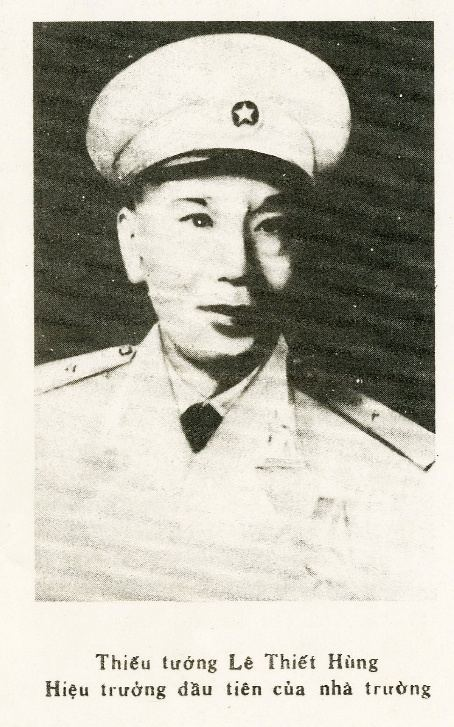
Mục tiêu đào tạo những ngày đầu thành lập của Nhà trường là: “Bồi dưỡng cho các chiến sĩ ưu tú và cán bộ từ tiểu đội đến đại đội một cách tương đối có hệ thống và toàn diện về quân sự, chính trị, quản lý bộ đội, để trở thành người sĩ quan pháo binh sơ cấp có đủ tài, đức. Sau tốt nghiệp có thể chỉ huy được từ một trung đội đến một đại đội pháo binh trong mọi tình huống chiến đấu, trong điều kiện chiến tranh hiện đại. Thời bình có thể quản lý chặt chẽ và huấn luyện cho bộ đội thuộc quyền về mọi mặt”.Địa điểm đầu tiên của Nhà trường khi thành lập là ở khu vực Quần Ngựa - Hà Nội (Địa điểm đóng quân của Phân khoa Pháo binh trước đây); sau đó Nhà trường được quyết định chuyển địa điểm đến đóng quân tại thôn Sơn Lộc, xã Thái Học, huyện Tùng Thiện, tỉnh Sơn Tây (Sau là phường Sơn Lộc, thị xã Sơn Tây, tỉnh Hà Tây) Hiện nay là địa điểm của Nhà trường thuộc phường tùng Thiện, thành phố Hà Nội.
* Những đơn vị tiền thân của Nhà trường.
1. Phân khoa pháo binh Trường Trung học Lục quân Trần Quốc Tuấn.
Từ năm 1949, cuộc kháng chiến chống thực dân pháp của nhân dân ta bước vào giai đoạn phát triển mạnh mẽ, việc xây dựng bộ đội chủ lực được Đảng và Bác Hồ đặc biệt coi trọng. Bộ Quốc phòng có chủ trương nhanh chóng xây dựng lực lượng các quân, binh chủng để tiến hành tác chiến tập trung, đánh tiêu diệt lớn. Các trung đoàn và đại đoàn bộ đội chủ lực lần lượt ra đời. Tình hình đó đặt ra yêu cầu cấp thiết xây dựng lực lượng Pháo binh và đào tạo đội ngũ cán bộ Pháo binh có đủ trình độ để thực hiện nhiệm vụ kháng chiến giải phóng dân tộc.
Bộ đội Pháo binh lúc này được xác định là hỏa lực chủ yếu của Quân đội ta. Cùng với việc thành lập các tiểu đoàn pháo binh cho các đơn vị chủ lực, tháng 5 năm 1949 Bộ Quốc phòng quyết định thành lập Cục Pháo binh và bổ nhiệm kỹ sư Trần Đại Nghĩa làm Cục trưởng. Sau đó, tại Hội nghị của Cục Quân huấn họp tại Phúc Trừu (Thái Nguyên), đồng chí Thượng tướng Hoàng Văn Thái - Tổng Tham mưu trưởng thay mặt Bộ Quốc phòng đã trực tiếp chỉ thị việc mở trường huấn luyện cán bộ pháo binh và các binh chủng khác.
Chấp hành chỉ thị của Bộ Tổng Tham mưu, ngày 10 tháng 4 năm 1949, Trường Trung học Lục quân Trần Quốc Tuấn bế giảng khóa 11, Nhà trường đã giữ lại một bộ phận học viên tốt nghiệp có trình độ văn hóa khá, sức khỏe tốt để đào tạo thành cán bộ Pháo binh và Công binh. Phân khoa Pháo binh thuộc Trường Trung học Lục quân Trần Quốc Tuấn được thành lập. Đồng chí Tấn Dương (Tức Ba Thi) làm Chủ nhiệm; đồng chí Lê Đình Lộ làm chính trị viên, đồng chí Trần Đại Nghĩa - Cục trưởng Cục quân giới được ủy nhiệm chỉ đạo về nội dung và chương trình huấn luyện. Ngày 01 tháng 5 năm 1949, Phân khoa Pháo binh khai giảng khóa học đầu tiên tại Giếng Tanh, xã Tuyên Hiên, huyện Yên Sơn, tỉnh Tuyên Quang (nay là thôn Giếng Tanh, phường Mỹ Lâm, tỉnh Tuyên Quang). Trải qua 8 năm phấn đấu vượt khó khăn gian khổ, vừa học, vừa làm, vừa rút kinh nghiệm, vừa xây dựng và phát triển, dưới sự lãnh đạo của Đảng ủy và Ban Giám hiệu Trường Sĩ quan Lục quân Việt Nam, Phân khoa Pháo binh đã hoàn thành 5 khóa huấn luyện pháo binh, 1.714 cán bộ được đào tạo ra trường trở thành nòng cốt để xây dựng Binh chủng Pháo binh phát triển, góp phần quan trọng vào thắng lợi của Quân đội ta trong cuộc kháng chiến chống thực dân Pháp và đế quốc Mỹ sau này. Đó cũng là quá trình đánh dấu một bước tiến bộ mới về xây dựng nền tảng tinh thần tự lực, tự cường, dạy tốt, học tốt và khẳng định khả năng tự đào tạo được cán bộ chuyên ngành pháo binh ở một nhà trường của Quân đội ta. Toàn phân khoa thành lập một chi bộ, mỗi tiểu đội có một tổ đảng. Trong không khí nghiêm trang của buổi lễ khai giảng, Thiếu tướng Lê Thiết Hùng - Cục trưởng Cục Quân huấn đã giao nhiệm vụ cho Phân Khoa Kháng chiến đã chuyển qua giai đoạn mới, phải có pháo binh và đồng thời phải có người biết sử dụng pháo. Đảng chủ trương đào tạo cán bộ trung đội, đại đội pháo binh để kịp với nhu cầu đòi hỏi của chiến trường.
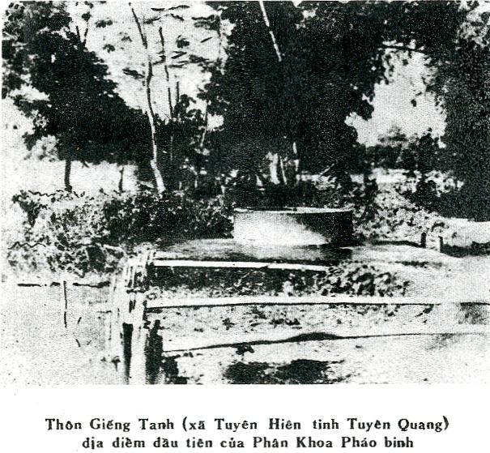 |
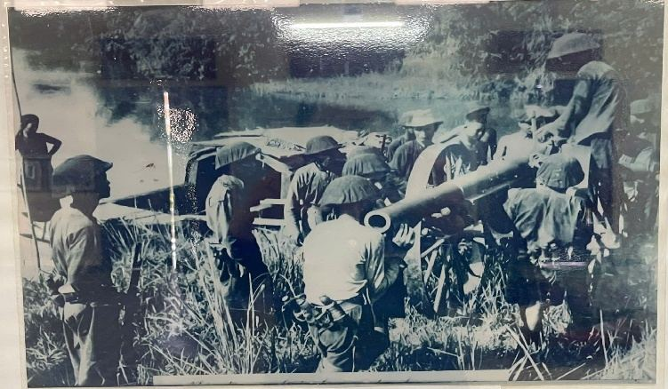 Nhân dân cùng bộ đội chung sức đưa pháo sang sông tham gia chiến dịch Sông thao 1949 |
|---|
2. Trường tập huấn Pháo binh (Đội huấn luyện 351).
Sau hiệp định Giơ ne vơ năm 1954 về Đông Dương, cách mạng nước ta chuyển biến sang giai đoạn mới - giai đoạn tiến hành cách mạng xã hội chủ nghĩa ở miền Bắc, đấu tranh thực hiện thống nhất nước nhà ở miền Nam. Nhiệm vụ của Quân đội ta lúc này là: Phải xây dựng thành một quân đội cách mạng, chính quy và tương đối hiện đại một nhiệm vụ trường kỳ phức tạp, trong đó công tác quan trọng bậc nhất và thường xuyên nhất là luyện bộ đội, đặc biệt là huấn luyện cán bộ”. Nghị quyết Bộ Chính trị tháng 9 năm 1954. Thời kỳ này, lực lượng Pháo binh phát triển nhẩy vọt, từ 3 trung đoàn trực thuộc Bộ trong kháng chiến chống Pháp (e45, e365 pháo mặt đất; e367 pháo cao xạ) nay thành lập 3 đại đoàn và 2 trung đoàn pháo mặt đất ( f45, f354, f675, e82, e84), 1 đại đoàn pháo cao xạ ( f367). Nhiều đơn vị bộ binh được chuyển toàn bộ sang Pháo binh. Tình hình đó đặt ra yêu cầu cấp bách phải mở trường huấn luyện chuyển binh chủng và tập huấn cán bộ Pháo binh.
Ngày 15 tháng 11 năm 1954, theo quyết định của Bộ Quốc phòng, Tổng Tư lệnh (Nghị định 39/ND-A), Trường tập huấn pháo binh được thành lập tại khu vực Quần Ngựa - Cầu Giấy - Hà Nội, lấy tên là “ Đội huấn luyện 351” Thiếu tướng Lê Thiết Hùng Tư lệnh Pháo binh được giao làm giám đốc, đồng chí Nguyễn Nam Thắng làm chính uỷ, đồng chí Hà Tuấn Khanh làm chỉ huy phó. Cơ quan Hiệu bộ có phòng Huấn luyện, phòng Chính trị, phòng Hậu cần và Ban Hành chính. Giáo viên, trừ một số đồng chí từ phân khoa Pháo binh Trường Sĩ quan Lục quân chuyển sang, còn lại phần đông là những cán bộ có kinh nghiệm huấn luyện ở các đơn vị pháo dự bị chuyển về. Học viên, đa số từ bộ binh được cử đi học Pháo binh, có đồng chí là chiến sĩ trinh sát, có đồng chí là cán bộ cấp cao được cử đi học Pháo binh, có anh hùng lực lượng vũ trang, chiến sĩ thi đua toàn quân như: Phùng Văn Khầu, Bùi Quang Mại. Trình độ văn hoá của học viên thấp, phần lớn chưa qua cấp 1, nhưng lại có kinh nghiệm chỉ huy chiến đấu và quản lý đơn vị. Nội dung huấn luyện chưa được đưa vào tài liệu của quân đội Liên Xô gồm các môn: Chiến thuật, Xạ kích, Thao tác và Binh khí. Thời gian huấn luyện dài nhất là 3 tháng, ngắn nhất là 10 đến 15 ngày. Do đó, tuỳ theo từng đối tượng, từng khoá học để Nhà trường đề ra những yêu cầu khác nhau. Đối với lớp chuyển binh chủng thì học một cấp, một chức, một loại pháo và đi từ những vẫn đề cơ bản nhất của người chiến sĩ Pháo binh. Đối với các lớp tập huấn lại đi sâu giải quyết từng vấn đề về tổ chức chỉ huy, nhất là chỉ huy bắn trong các điều kiện tác chiến hợp đồng; và chiến thuật tiến công và phòng ngự; về công tác tham mưu, chỉ đạo diễn tập, đo đạc, thông tin. Phương châm huấn luyện được đặt ra: Lý thuyết đi đôi với thực hành, dạy đúng đối tượng, huấn luyện những vẫn đề chiến tranh cần.
Từ cuối khóa 2, để mở rộng trường sở và có địa hình luyện tập thuận lợi, phù hợp hơn với lưu lượng học viên ngày càng tăng, Trường được lệnh chuyển đến địa điểm mới tại thành Sơn Tây (Thành cổ thời Minh Mạng -1820- ở Trung tâm thị xã Sơn Tây hiện nay). “Đội huấn luyện 351” lúc này mang phiên hiệu là “Tiểu đoàn 13”, đồng chí Phan Hạo được bổ nhiệm làm chỉ huy trưởng, đồng chí Hoàng Cao làm chính ủy. Chương trình huấn luyện ngày càng phong phú với nhiều loại pháo khác nhau như: Lựu pháo 105, 122 ly; sơn pháo 75 ly; pháo chống tăng 75 ly của Đức; cối 120 ly; pháo cao xạ 37, 40 ly của Mỹ; súng phòng không 12,7 ly và 12,8 ly. Mặc dù thiếu tài liệu, song do phương pháp giảng dạy của giáo viên đi từ dễ đến khó; về kỹ thuật và động tác coi trọng sử dụng mô hình học cụ, tranh vẽ và làm động tác mẫu; về chiến thuật chú trọng phương pháp hợp luyện và dùng tiếng nổ thể hiện tình huống nên đã đạt kết quả khá tốt.
Ngoài nhiệm vụ huấn luyện, “Tiểu đoàn 13” còn là nơi nghiên cứu, phổ biến khoa học quân sự pháo binh cho toàn Binh chủng. Kết quả nghiên cứu bắn đạn 105 ly chiếu sáng, bắn xạ giới cao, bắn đạn truyền đơn và đạn cối 120 ly lắp ngòi nổ chậm... phát huy cao nhất tính năng, uy lực của pháo đạn đã mang lại nhiều hiệu quả thiết thực trong chiến đấu sau này của Binh chủng Pháo binh.
Trải qua gần 4 năm (1954 - 1957), “Đội huấn luyện 351” đã hoàn thành 11 khóa huấn luyện chuyển binh chủng, 20 khóa tập huấn, 4 lớp bồi dưỡng giáo viên xạ kích; gần 2.000 cán bộ pháo mặt đất và cao xạ đã ra trường góp phần quan trọng vào xây dựng Binh chủng Pháo binh những năm đầu hòa bình mới lập lại. Với thành tích đó, Nhà trường đã được Nhà nước tặng thưởng Huân chương Chiến công Hạng Hai nhân tổng kết 2 năm xây dựng trong hòa bình (1954 - 1956); nhiều đồng chí cán bộ, giáo viên, hạ sĩ quan binh sĩ, công nhân viên của Trường đã nêu gương sáng về tinh thần tận tụy công tác, yên tâm xây dựng đơn vị, khắc phục khó khăn, chủ động, sáng tạo trong công việc; trong đó, đồng chí Lê Huy Bái là một giáo viên điển hình về dạy hay, nhiệt tình trách nhiệm đã được tặng thưởng Huân chương Chiến công Hạng ba.
Trước yêu cầu mới, lúc này “Đội huấn luyện 351” đã hoàn thành nhiệm vụ. Ngày 30 tháng 3 năm 1958, theo chỉ thị của Bộ Quốc phòng, “Đội huấn luyện 351” được sát nhập vào Trường sỹ quan Pháo binh.
Câu 2 Đồng chí nêu xứ mệnh và nhiệm vụ chính trị trung tâm hiện nay của Nhà trường? Các đối tượng Nhà trường đã đào tạo trong 70 năm qua?
Trả lời:
Trường Sĩ quan Pháo binh là một trung tâm giáo dục, đào tạo sĩ quan của Quân đội nhân dân Việt Nam, có vị trí, vai trò quan trọng trong sự nghiệp xây dựng và bảo vệ Tổ quốc. Trải qua quá trình xây dựng, chiến đấu và trưởng thành, Nhà trường luôn gắn liền nhiệm vụ giáo dục, đào tạo với yêu cầu xây dựng quân đội cách mạng, chính quy, tinh nhuệ, hiện đại. Trong tình hình hiện nay, trước yêu cầu ngày càng cao của nhiệm vụ xây dựng và bảo vệ Tổ quốc, việc nhận thức đầy đủ nhiệm vụ chính trị của Nhà trường có ý nghĩa đặc biệt quan trọng đối với mỗi cán bộ, giảng viên, nhân viên và học viên.
Trước hết, nhiệm vụ chính trị trung tâm của Trường Sĩ quan Pháo binh là giáo dục, đào tạo đội ngũ sĩ quan Chỉ huy tham mưu pháo binh cấp phân đội có bản lĩnh chính trị vững vàng, phẩm chất đạo đức tốt, trình độ kiến thức toàn diện và năng lực tổ chức thực hiện nhiệm vụ đáp ứng yêu cầu xây dựng Quân đội trong tình hình mới. Đây là nhiệm vụ cơ bản, xuyên suốt, quyết định đến chất lượng và hiệu quả hoạt động của Nhà trường. Để thực hiện tốt nhiệm vụ này, Nhà trường cần thường xuyên đổi mới nội dung, chương trình, phương pháp giảng dạy và học tập; kết hợp chặt chẽ giữa giáo dục lý luận với thực tiễn, giữa kiến thức cơ bản với kiến thức chuyên ngành, giữa huấn luyện quân sự với giáo dục chính trị. Qua đó, giúp học viên không chỉ nắm vững kiến thức chuyên môn, nghiệp vụ mà còn có khả năng vận dụng linh hoạt vào thực tiễn công tác sau khi tốt nghiệp.
Bên cạnh nhiệm vụ giáo dục, đào tạo, Nhà trường còn đặc biệt coi trọng công tác giáo dục chính trị, tư tưởng, xây dựng bản lĩnh chính trị và phẩm chất đạo đức cách mạng cho cán bộ, giảng viên, nhân viên và học viên. Đây là nội dung có ý nghĩa nền tảng, bảo đảm cho mỗi quân nhân luôn kiên định mục tiêu, lý tưởng cách mạng, tuyệt đối trung thành với Tổ quốc, với Đảng, Nhà nước và nhân dân. Thông qua việc học tập chủ nghĩa Mác - Lênin, tư tưởng Hồ Chí Minh, đường lối, quan điểm của Đảng, chính sách, pháp luật của Nhà nước và nhiệm vụ của Quân đội, mỗi cán bộ, học viên được nâng cao nhận thức chính trị, củng cố niềm tin, ý chí quyết tâm và tinh thần trách nhiệm. Đồng thời, Nhà trường chú trọng giáo dục truyền thống cách mạng, truyền thống Quân đội nhân dân Việt Nam, truyền thống Binh chủng Pháo binh anh hùng, góp phần bồi dưỡng lòng yêu nước, niềm tự hào, ý thức trách nhiệm và động cơ phấn đấu đúng đắn cho mỗi quân nhân.
Một nhiệm vụ quan trọng khác là đẩy mạnh nghiên cứu khoa học quân sự, tổng kết thực tiễn và ứng dụng những thành tựu khoa học, công nghệ vào công tác giáo dục, đào tạo. Trong bối cảnh khoa học công nghệ phát triển nhanh chóng, yêu cầu xây dựng Quân đội hiện đại ngày càng cao, Nhà trường cần chủ động nghiên cứu, cập nhật những kiến thức mới, từng bước đổi mới nội dung và phương pháp đào tạo. Hoạt động nghiên cứu khoa học không chỉ góp phần nâng cao trình độ chuyên môn của đội ngũ cán bộ, giảng viên mà còn giúp học viên phát triển tư duy độc lập, khả năng sáng tạo và năng lực giải quyết các vấn đề đặt ra trong thực tiễn công tác. Qua đó, góp phần nâng cao chất lượng giáo dục, đào tạo, đáp ứng yêu cầu nhiệm vụ trong tình hình mới.
Cùng với đó, Nhà trường phải thường xuyên quan tâm xây dựng Đảng bộ trong sạch, vững mạnh, xây dựng Nhà trường vững mạnh toàn diện “mẫu mực, tiêu biểu”. Đây là nhiệm vụ có ý nghĩa quyết định đối với việc nâng cao chất lượng lãnh đạo, chỉ đạo và tổ chức thực hiện mọi nhiệm vụ chính trị của Nhà trường. Muốn hoàn thành tốt nhiệm vụ được giao, trước hết phải xây dựng tổ chức Đảng có năng lực lãnh đạo và sức chiến đấu cao; xây dựng đội ngũ cán bộ, đảng viên có phẩm chất đạo đức tốt, có tinh thần trách nhiệm, gương mẫu trong công tác và sinh hoạt. Đồng thời, cần duy trì nghiêm nền nếp chính quy, chấp hành pháp luật Nhà nước, kỷ luật Quân đội; xây dựng môi trường văn hóa quân sự lành mạnh, đoàn kết, thống nhất. Mỗi cơ quan, khoa giáo viên, đơn vị quản lý học viên cần phát huy tinh thần chủ động, sáng tạo, khắc phục khó khăn, hoàn thành tốt chức trách, nhiệm vụ được giao.
Ngoài ra, Nhà trường còn có nhiệm vụ thực hiện tốt công tác sẵn sàng chiến đấu, xây dựng chính quy, quản lý kỷ luật và bảo đảm hậu cần, kỹ thuật, tài chính phục vụ các nhiệm vụ thường xuyên cũng như đột xuất. Các hoạt động này tuy có nội dung và phương thức tiến hành khác nhau nhưng đều hướng tới mục tiêu chung là bảo đảm cho Nhà trường hoạt động ổn định, thống nhất, có nền nếp và hoàn thành tốt nhiệm vụ giáo dục, đào tạo. Đồng thời, Nhà trường cần tích cực tham gia các hoạt động đối ngoại quốc phòng, hợp tác đào tạo và bồi dưỡng cán bộ quân sự theo sự phân công của cấp trên, góp phần tăng cường quan hệ hữu nghị, hợp tác quốc phòng với quân đội các nước.
Có thể khẳng định rằng, nhiệm vụ chính trị của Trường Sĩ quan Pháo binh không chỉ giới hạn trong công tác giáo dục, đào tạo mà còn bao gồm nhiều mặt công tác quan trọng, có mối quan hệ chặt chẽ và tác động qua lại lẫn nhau. Trong đó, giáo dục, đào tạo đội ngũ sĩ quan pháo binh có phẩm chất, năng lực đáp ứng yêu cầu nhiệm vụ là nhiệm vụ chính trị trung tâm; xây dựng Đảng bộ trong sạch, vững mạnh và Nhà trường vững mạnh toàn diện là nhiệm vụ then chốt, có ý nghĩa bảo đảm cho Nhà trường hoàn thành thắng lợi mọi nhiệm vụ được giao.
Đối với mỗi cán bộ, giảng viên, nhân viên và học viên, nhận thức đúng đắn nhiệm vụ chính trị của Nhà trường phải được thể hiện bằng những hành động cụ thể trong học tập, công tác và rèn luyện hằng ngày. Mỗi người cần không ngừng nâng cao nhận thức chính trị, giữ vững lập trường tư tưởng, chấp hành nghiêm pháp luật Nhà nước, kỷ luật Quân đội và quy định của Nhà trường; tích cực học tập, nghiên cứu, rèn luyện nâng cao trình độ chuyên môn, nghiệp vụ; phát huy tinh thần đoàn kết, trách nhiệm, chủ động khắc phục khó khăn, hoàn thành tốt chức trách, nhiệm vụ được giao. Đặc biệt, mỗi học viên cần xác định rõ động cơ, thái độ học tập đúng đắn, tích cực tu dưỡng phẩm chất đạo đức, xây dựng phương pháp học tập khoa học, kết hợp chặt chẽ giữa học tập kiến thức với rèn luyện bản lĩnh, tác phong và ý thức tổ chức kỷ luật, phấn đấu trở thành người Sĩ quan Pháo binh vừa hồng vừa chuyên.
Tóm lại, nhiệm vụ chính trị của Trường Sĩ quan Pháo binh có vị trí, vai trò đặc biệt quan trọng trong sự nghiệp xây dựng Bộ Tư lệnh Pháo binh-Tên lửa và Quân đội nhân dân Việt Nam. Thực hiện tốt những nhiệm vụ đó không chỉ góp phần nâng cao chất lượng giáo dục, đào tạo mà còn trực tiếp xây dựng đội ngũ cán bộ quân đội có bản lĩnh chính trị vững vàng, phẩm chất đạo đức trong sáng, trình độ và năng lực đáp ứng yêu cầu nhiệm vụ. Vì vậy, mỗi cán bộ, giảng viên, nhân viên và học viên cần nhận thức sâu sắc trách nhiệm của mình, biến nhận thức thành hành động thiết thực, góp phần xây dựng Trường Sĩ quan Pháo binh ngày càng phát triển, hoàn thành xuất sắc mọi nhiệm vụ được Đảng, Nhà nước, Quân đội và nhân dân giao phó.
Nhiệm vụ cụ thể của Nhà trường trong từng giai đoạn và thời kỳ được xác định khác nhau, bao gồm các nhiệm vụ như sau:
+ Đào tạo, bồi dưỡng nhân viên chuyên môn kỹ thuật Pháo binh-Tên lửa.
+ Đào tạo, bồi dưỡng đội ngũ giáo viên, giảng viên Pháo binh - Tên lửa.
+ Đào tạo, bồi dưỡng cán bộ, giáo viên pháo binh quốc tế.
+ Nghiên cứu khoa học nghệ thuật quân sự, khoa học xã hội nhân văn quân sự và khoa học kỹ thuật quân sự phục vụ yêu cầu, nhiệm vụ công tác, đào tạo và sẵn sàng chiến đấu của Bộ đội Pháo binh - Tên lửa.
+ Xây dựng Nhà trường vững mạnh toàn diện.
+ Sẵn sàng chiến đấu và thực hiện các nhiệm vụ cứu hộ, cứu nạn, khắc phục hậu quả thiên tai và các nhiệm vụ khác.
Những nhiệm vụ chính trị trung tâm xuyên suốt của Nhà trường là: Giáo dục đào tạo các đối tượng học viên Pháo binh đáp ứng yêu cầu về cán bộ Pháo binh cho các đơn vị Pháo binh trong toàn quân.
Trong 70 năm qua xây dựng và trưởng thành, Nhà trường đã đào tạo các đối tượng, có các đối tượng ngày mới thành lập nhà trường đã đào tạo nhưng hiện nay đã không đào tạo nữa:
1. Chỉ huy quân sự PB dài hạn (3 năm)
2. Chính trị PB dài hạn (3 năm)
3. Ngắn hạn quân sự PB (1 năm)
4. Ngắn hạn chính trị PB (1 năm)
5. CHPĐ bậc cao đẳng (Đã dừng đào tạo)
6. CHPĐ bậc đại học (5 năm và 4 năm)
7. Ngắn hạn Tiểu đoàn trưởng (Đã dừng đào tạo)
8. Bổ túc chỉ huy tham mưu Trung (lữ) đoàn (Đã dừng đào tạo)
9. Trung đội trưởng pháo cối theo chỉ thị 801 (801) (Đã dừng đào tạo)
10. CHPĐ bậc cao đẳng (Từ đối tượng 801)
11. Chính trị PĐ bậc cao đẳng (Từ đối tượng 801)
12. CHPĐ bậc cao đẳng xét tuyển từ nguyện vọng 2
13. Hoàn thiện cao đẳng (Từ đối tượng ngắn hạn)
14. Hoàn thiện đại học
15. CHPĐ - Lào (3 năm)
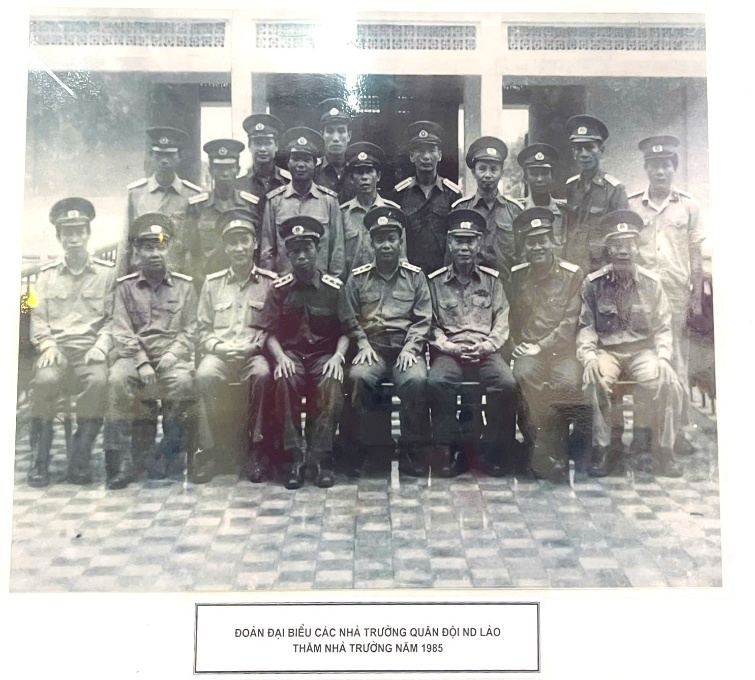 |
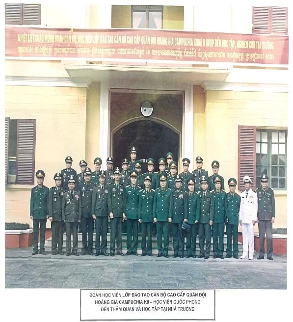 |
|---|
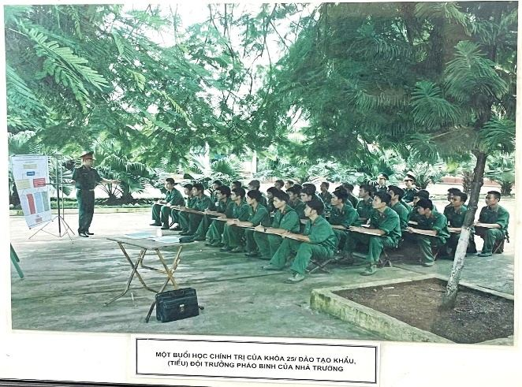 |
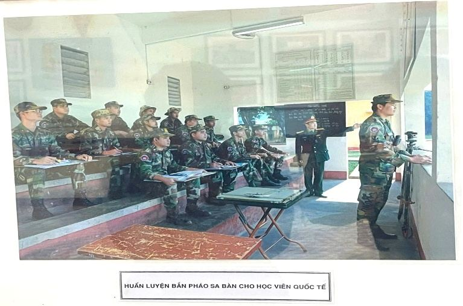 |
|---|
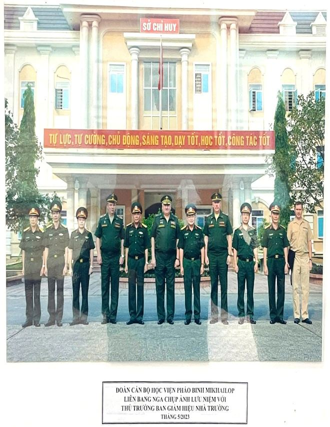 |
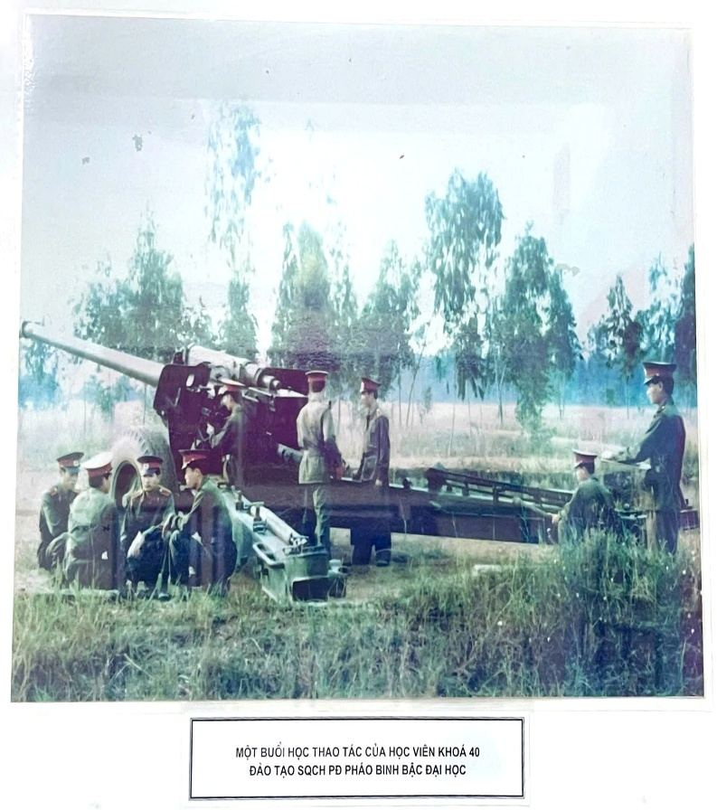 |
|---|
16. CHPĐ - Lào (Đại học)
17. CHPĐ - CămPuChia (3 năm)
18. CHPĐ - CămPuChia (Đại học)
19. Bồi dưỡng chuyển loại cán bộ chính trị (Đã dừng đào tạo)
20. Đào tạo giáo viên chuyên ngành PB
21. Đào tạo chuyển loại sĩ quan tên lửa mặt đất và tên lửa chống tăng
22. Đào tạo HSQ (Khẩu, tiểu đội trưởng)
23. Bồi dưỡng NVCMKT Tên lửa
24. Đào tạo NVCMKT (Lái xe, thợ xe, thợ pháo, quang học)
25. Sĩ quan dự bị
26. Dự bị động viên
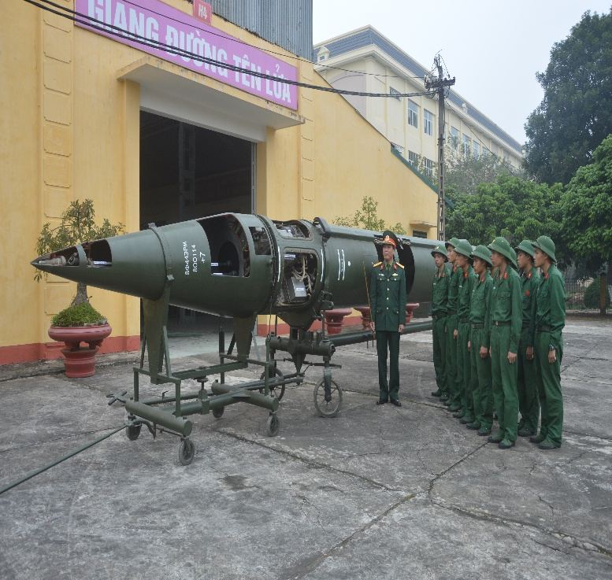 Giảng viên Khoa Tên lửa đang giảng bài cho học viên |
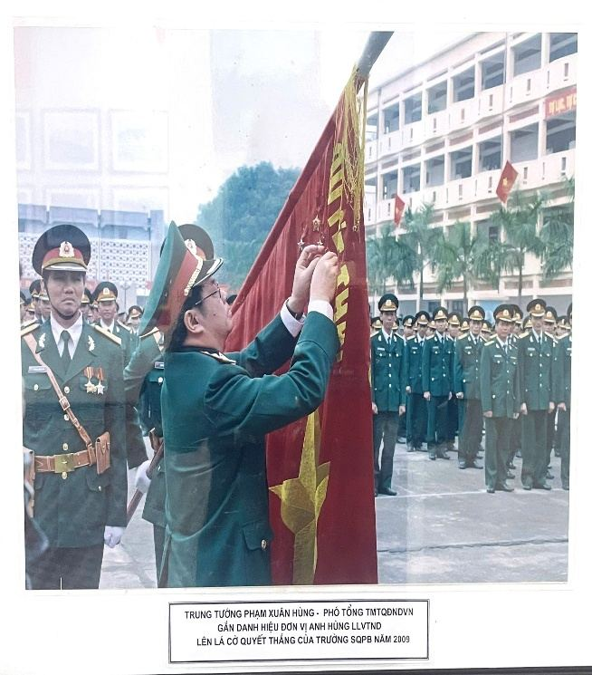 |
|---|
26. Đào tạo nhân viên chuyên môn kỹ thuật tên lửa
27. Bồi dưỡng kiến thức quốc phòng
28. Chuyển loại xe xích, máy kéo
29. Các lớp bồi dưỡng, tập huấn PB cho bạn Lào, CămPuChia
30. Đào tạo lớp sĩ quan văn bằng 2 (Bắt đầu từ năm 2016)
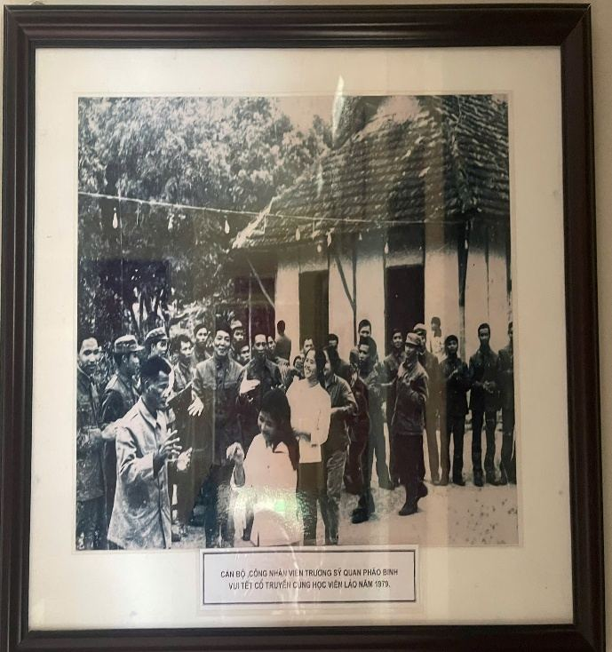 |
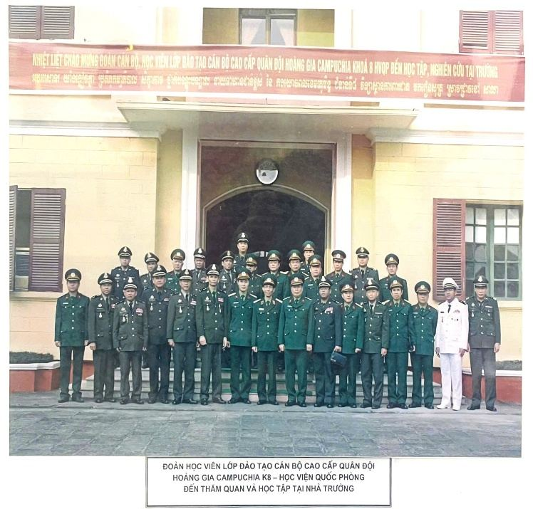 |
|---|
Trước đòi hỏi của tình hình, nhiệm vụ cho cuộc kháng chiến chống Mỹ cứu nước, sau Hiệp định Giơ - ne - vơ về Đông Dương năm 1954, Tổng Quân ủy Chỉ thị “ Xây dựng Pháo binh thành một Binh chủng có hỏa lực mạnh trong lục quân cách mạng chính quy và tương đối hiện đại”. Vai trò của Pháo binh trong thời kỳ này được xác định là “Hoả lực mặt đất chủ yếu của Lục quân”.
Từ nghị quyết của Tổng Quân ủy, lực lượng Pháo binh có bước phát triển mới, bao gồm pháo mặt đất, pháo cao xạ, pháo phòng thủ bờ biển với quy mô tương đối lớn. Nhằm thực hiện tốt nhiệm vụ của Quân đội ta là “Sẵn sàng chiến đấu bảo vệ miền Bắc, giải phóng miền Nam, thống nhất Tổ quốc”. Đối tượng tác chiến là đế quốc Mỹ và bè lũ tay sai, nên phương thức tác chiến cũng thay đổi khác hẳn trước đây đã đặt ra yêu cầu đội ngũ cán bộ pháo binh phải được đào tạo, có trình độ mới đáp ứng được yêu cầu, nhiệm vụ chiến đấu. Trước đó, để chuẩn bị cho việc thành lập trường sĩ quan pháo binh, đầu năm 1956, Bộ Tổng Tư lệnh đã gửi 40 đồng chí cán bộ pháo binh được lựa chọn sang Trường Sĩ quan Pháo binh Trịnh Châu (Trung Quốc) học đào tạo giáo viên, do đồng chí Nguyễn Văn Khiếu làm trưởng đoàn. Ngày 18 tháng 2 năm 1957, Bộ trưởng Bộ Quốc phòng kiêm Tổng Tư lệnh Quân đội nhân dân Việt Nam đã ra Nghị định 32/NĐA: “Nay tách hẳn Phân khoa Pháo binh thuộc Trường Sĩ quan Lục quân Việt Nam thành một Trường Pháo binh trực thuộc Bộ Quốc phòng, Tổng Tư lệnh lấy tên là Trường Sĩ quan Pháo binh Việt Nam. Trường Sĩ quan Pháo binh Việt Nam có nhiệm vụ đào tạo sĩ quan Pháo binh mặt đất, pháo binh cao xạ và phụ trách cả lớp tập huấn trước đây của Bộ Tư lệnh Pháo binh”. Thiếu tướng Lê Thiết Hùng - Tư lệnh Binh chủng được bổ nhiệm làm Hiệu trưởng; các đồng chí Phó Hiệu trưởng là Phan Hàm và Phan Phác; đồng chí Nguyễn Lệnh làm Chủ nhiệm Chính trị, kiêm Bí thư Ban cán sự Đảng. Cơ quan hiệu bộ gồm 5 phòng: Chính trị, Cán bộ, Huấn luyện Pháo mặt đất, Huấn luyện Pháo cao xạ, Hậu cần và Ban Hành chính. Các ban giáo viên gồm: Chiến thuật, Xạ kích (Bắn pháo), Binh thao (Binh khí và Thao tác). Bộ phận giáo viên chính trị, văn hóa trực thuộc Phòng Chính trị. Nhà trường được chuyển đến thôn Sơn Lộc, xã Thái Học, huyện Tùng Thiện, tỉnh Sơn Tây (Nay là phường Tùng Thiện, thành phố Hà Nội).
Mục tiêu đào tạo những ngày đầu thành lập của Nhà trường là: “Bồi dưỡng cho các chiến sĩ ưu tú và cán bộ từ tiểu đội đến đại đội một cách tương đối có hệ thống và toàn diện về quân sự, chính trị, quản lý bộ đội, để trở thành người sĩ quan pháo binh sơ cấp có đủ tài, đức. Sau tốt nghiệp có thể chỉ huy được từ một trung đội đến một đại đội pháo binh trong mọi tình huống chiến đấu, trong điều kiện chiến tranh hiện đại. Thời bình có thể quản lý chặt chẽ và huấn luyện cho bộ đội thuộc quyền về mọi mặt”.
* Khóa 1 đào tạo cán bộ sơ cấp quân sự pháo binh đầu tiên (1957 - 1959)
Thực hiện Nghị quyết Trung ương lần thứ 12 Khóa II (tháng 3/1957) về xây dựng Quân đội, củng cố quốc phòng theo phương châm “Tiến dần từng bước lên chính quy hóa, hiện đại hóa”. Được sự lãnh đạo của Tổng Quân ủy và Bộ Tư lệnh Pháo binh, ngay sau ngày thành lập, Nhà trường đã khẩn trương chuẩn bị về mọi mặt cho đào tạo cán bộ theo hướng cơ bản dài hạn.
Ngày 08 tháng 11 năm 1957, Nhà trường khai giảng Khóa 1 đào tạo cán bộ sơ cấp quân sự pháo binh dài hạn. Nhà trường đã phát động phong trào thi đua trong tất cả các lực lượng nhằm đạt kết quả cao nhất ngay từ khóa học đầu tiên. Trong giảng dạy, công tác, nhiều cán bộ và giáo viên đã hình thành một tác phong sâu sát, cán bộ thực hiện “ba cùng” với học viên. Mặc dù thời gian đầu còn khó khăn về cơ sở vật chất dạy học, nhưng phong trào phát huy sáng kiến, cải tiến kỹ thuật, chống “giảng chay, học chay” đã phát triển mạnh mẽ trong toàn Nhà trường. Ngày 20 tháng 12 năm 1957, Nhà trường giới thiệu kết quả công tác sáng kiến, cải tiến kỹ thuật. Đã có những sáng kiến có giá trị nâng cao chất lượng dạy và học như: Bảng bắn pháo cao xạ 90; vành số lẻ đo góc tà lựu pháo 105, bộ phận giá lắp thước tầm pháo 105; nghiên cứu bắn đạn 105 chiếu sáng, bắn xạ giới cao, bắn đạn truyền đơn, bắn đạn cối 120, lắp ngòi nổ chậm.. được phổ biến rộng rãi toàn quân. Các công trình nghiên cứu về “Cơ động pháo và đặt bắn trên đồng nước”, “Cách dùng cầu vẹt vượt qua mương máng và làm phần chống lầy để kéo pháo qua đồng nước”, “Kỹ thuật bắn súng cối, ĐKZ ứng dụng không bàn đế, không chân, không máy ngắm trên các địa hình và ghe thuyền”… học viên hăng say nghiên cứu, học tập với khẩu hiệu “Còn giờ, còn tập”, “Học khó, có giáo viên”, “Lấy cần cù bù thông minh”. phong trào này xuất hiện nhiều tấm gương điển hình về phát huy sáng kiến, cải tiến kỹ thuật như công trình tập thể “Thước Trương Gia Liễn” dùng để tác nghiệp bài 4 xạ kích. Ngày 14 tháng 4 năm 1959, Khóa 1 bế giảng với gần 800 sĩ quan mới tốt nghiệp ra trường, trong đó có 80% đạt khá giỏi, đã bổ sung nguồn cán bộ quan trọng để xây dựng, phát triển lực lượng pháo binh. Đây là một kết quả đáng khích lệ, tự hào của Nhà trường ngay trong những năm đầu thực hiện nhiệm vụ đào tạo. Kết quả đó đã khẳng định ý chí tự lực, tự cường, chủ động, sáng tạo, tinh thần đoàn kết nhất trí cao của đội ngũ cán bộ, học viên, chiến sĩ toàn Trường trong điều kiện chiến tranh, khó khăn, thiếu thốn cơ sở vật chất.
*Những khóa bổ túc sơ cấp, trung cấp (1959 - 1960)
Dưới ánh sáng Nghị quyết Trung ương 15 của Ban Chấp hành Trung ương, đầu những năm 1960, cách mạng miền Nam có nhiều chuyển biến mới, thế trận chuyển sang thế tiến công địch. Miền Bắc cơ bản hoàn thành kế hoạch khôi phục, cải tạo nền kinh tế và bước vào thời kỳ xây dựng cơ sở vật chất ban đầu của CNXH. Trước yêu cầu nhiệm vụ cách mạng, tháng 9 năm 1960 Đại hội Đảng toàn quốc lần thứ III đề ra hai nhiệm vụ chiến lược là: tiến hành cách mạng XHCN ở miền Bắc, hoàn thành cách mạng dân tộc dân chủ nhân dân ở miền Nam. Về Quốc phòng, Đại hội III chủ trương đẩy mạnh công cuộc xây dựng Quân đội tiến lên chính quy, hiện đại, tích cực chi viện cho chiến trường miền Nam.
Xuất phát từ nhiệm vụ cách mạng và bổ sung cán bộ chỉ huy pháo binh cho chiến trường, sau khi kết thúc đào tạo Khóa 1, Nhà trường được Bộ Tư lệnh Pháo binh giao nhiệm vụ: “Đến năm 1960 phải bổ túc xong đại bộ phận cán bộ trung cấp, sơ cấp; đồng thời xây dựng nền nếp của một nhà trường chính quy, hiện đại”. Vì vậy, từ tháng 4 năm 1959 trở đi, Nhà trường đã thực hiện hai nhiệm vụ vừa bổ túc, vừa đào tạo cán bộ pháo binh cho toàn quân, trong đó lấy “Bổ túc làm nhiệm vụ chủ yếu”. Đối tượng bổ túc, đào tạo cả cán bộ quân sự và cán bộ chính trị; trung cấp và sơ cấp; văn hóa và tập huấn chuyển binh chủng. Ngoài ra còn đào tạo sĩ quan dự bị và huấn luyện dân quân. Khoá bổ túc đầu tiên là học viên các trung đoàn trưởng, lữ đoàn trưởng, chủ nhiệm pháo binh quân khu gồm cán bộ quân sự, chính trị đã khai giảng ngày 17 tháng 4 năm 1959.
Tiếp tục hoàn thiện sự lãnh đạo tuyệt đối, trực tiếp, toàn diện của Đảng đối với Bộ Tư lệnh, ngày 22 tháng 5 năm 1959 Ban Chấp hành TW Đảng đã ra quyết định số 73/NQ-TW thành lập Đảng bộ Binh chủng Pháo binh. Trên cơ sở đó, ngày 28 tháng 9 năm 1959 Đại hội Đảng bộ Nhà trường lần thứ I đã được tổ chức. Đại hội đánh giá: “Việc hoàn thành nhiệm vụ huấn luyện trong 2 năm qua tương đối tốt, không những góp phần xây dựng Binh chủng Pháo binh lớn mạnh, mà còn là thắng lợi của tinh thần khắc phục khó khăn, chấp hành tốt nhiệm vụ…, xây dựng được cơ sở bước đầu của Nhà trường về mọi mặt, phát huy truyền thống tốt đẹp của Quân đội cách mạng: vừa chiến đấu, vừa xây dựng”. Đại hội đề ra những nhiệm vụ đào tạo bổ túc, huấn luyện và nghiên cứu, biên soạn tài liệu nhằm hoàn thành tốt các khóa bổ túc, đồng thời chuẩn bị tốt kế hoạch bồi dưỡng đào tạo cán bộ dài hạn. Trên cơ sở nhiệm vụ được giao, Nghị quyết Đại hội Đảng bộ Nhà trường lần thứ I đề ra chủ trương: “Huấn luyện toàn diện, có trọng điểm, tương đối có hệ thống, từ cơ sở, trong một thời gian có hạn định về quân sự và chính trị”, để sau khi học xong “Có thể hoàn thành chức trách của mình kịp với yêu cầu của Quân đội ”.
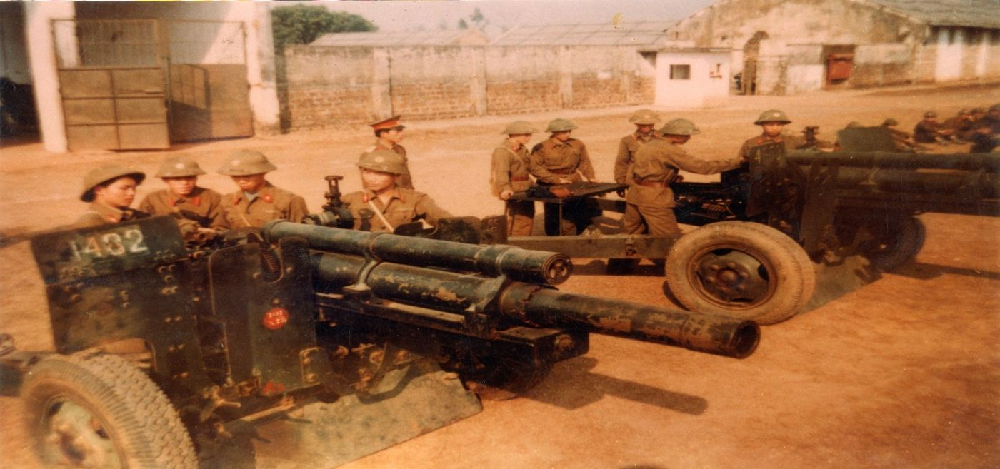
Những khóa bổ túc sơ cấp, trung cấp (1959-1960)
Thực hiện kế hoạch tổ chức đại hội đảng bộ các cấp trực thuộc Đảng uỷ Binh chủng, tiến tới Đại hội Đảng toàn quốc lần thứ III, ngày 13 tháng 6 năm 1960, Đảng bộ Nhà trường tổ chức Đại hội lần thứ II. Đại hội vinh dự được đón đồng chí Đại tướng Nguyễn Chí Thanh - Ủy viên Bộ Chính trị, Phó Bí thư Tổng Quân uỷ, Chủ nhiệm Tổng cục Chính trị và đồng chí Lê Hiến Mai - Bí thư Đảng uỷ, Chính ủy Binh chủng về dự và chỉ đạo Đại hội. Thay mặt Tổng Quân uỷ Đại tướng Nguyễn Chí Thanh đã biểu dương những thành tích mà Đảng bộ Nhà trường đạt được trong những năm qua, đồng thời nhấn mạnh “Cứ vỗ ngực ta đây là công nông mà lười học là sai, càng công nông càng phải học nhiều để gánh vác lấy trọng trách của lịch sử”. Lời huấn thị của Đại tướng Nguyễn Chí Thanh đã động viên mạnh mẽ khí thế thi đua giảng dạy, học tập, nghiên cứu nâng cao chất lượng đào tạo cán bộ trong toàn Trường. Với những thành tích của giai đoạn thực hiện nhiệm vụ bổ túc cán bộ là chủ yếu (1959 - 1960), đồng thời hoàn thành kế hoạch 3 năm xây dựng và huấn luyện (1958 - 1960), Nhà trường được Nhà nước trao tặng Huân chương Chiến công hạng Nhì.
* Vừa bổ túc, vừa đào tạo chuyển dần trọng tâm sang đào tạo (1961 - 1964)
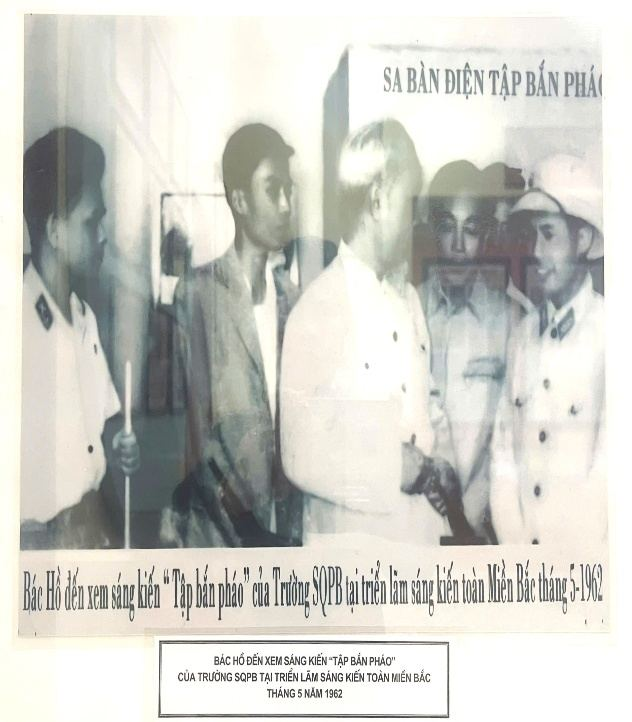
Sau khi kết thúc kế hoạch quân sự 5 năm lần thứ nhất, ngày 31 tháng 1 năm 1961 Bộ Chính trị ban hành nghị quyết về công tác quân sự 5 năm (1961-1965). Trước yêu cầu nhiệm vụ mới, công tác giáo dục - đào tạo được Nghị quyết Đại hội Đảng bộ Nhà trường lần thứ II xác định “Là trung tâm nghiên cứu, chiến thuật, kỹ thuật… vừa đào tạo, vừa bổ túc, nhưng chuyển dần trọng tâm sang đào tạo cán bộ hệ thống chính quy”. Dưới sự chỉ đạo hướng dẫn của Binh chủng, Nhà trường đã bám sát thực tiễn chiến đấu để đổi mới nội dung, phương pháp giảng dạy, gắn lý thuyết với thực hành, nhà trường với chiến trường, với đơn vị, gắn đào tạo tại nhà trường với bồi dưỡng tại chức, nghiên cứu khoa học. Nhà trường coi bồi dưỡng giáo viên và biên soạn tài liệu là những khâu then chốt nhiệm, vụ quan trọng. Giai đoạn này, tổ chức, biên chế Nhà trường được củng cố, phát triển từ 4 phòng: Chính trị, Huấn luyện pháo mặt đất, Huấn luyện pháo cao xạ, Hậu cần và Ban Hành chính (6/1962); chuyển thành 6 phòng: Chính trị, Giáo vụ, Giáo viên chính trị, Giáo viên quân sự, Hành chính và Hậu cần (7/1964). Đến năm 1963, các chương trình huấn luyện cho các đối tượng được hình thành và hoàn chỉnh, từ đây Nhà trường bắt đầu viết chuẩn hóa tài liệu, giáo án, bài tập mẫu, bãi tập chuẩn. Thời gian này, Nhà trường đã viết được 40 bộ tài liệu, 351 giáo án, 48 bài tập chuẩn, 51 đề cương chiến thuật; mỗi tổ giáo viên có một quyển bài tập mẫu. Kết quả đó phản ánh quyết tâm thực hiện nghị quyết Đại hội Đảng bộ Nhà trường lần thứ II và tinh thần dám nghĩ, dám làm, tích cực, chủ động, sáng tạo, tự lực, tự cường cao của tập thể cán bộ, giáo viên.Phong trào thi đua phát huy sáng kiến, cải tiến kỹ thuật được cán bộ, giảng viên, học viên tích cực tham gia. Trong 3 năm (1960 - 1962), toàn Trường có 434 sáng kiến được nghiệm thu, trong đó 5 sáng kiến có giá trị cao tham gia Đại hội Kỹ thuật hàng năm của Binh chủng và của toàn quân. Trong Đại hội Thi bắn các phân đội Pháo binh toàn Quân tại Đông Triều năm 1962 (Khóa 3), nhà trường đã đạt giải Nhất và tại Tiền Hải - Thái Bình năm 1964 (Khóa 4) đạt giải Nhì, góp phần thực hiện yêu cầu “Nhà trường đi trước đơn vị”. Ngày 9/4/1964, trong dịp tới thăm Nhà trường, khi xem “Tủ bắn” pháo cao xạ, Đại tướng Võ Nguyên Giáp đã ghi vào sổ lưu niệm của Nhà trường: “Đây là một sáng kiến tốt, thể hiện tinh thần sáng tạo tập thể, khắc phục khó khăn, cần kiệm xây dựng Quân đội, góp phần đưa công tác huấn luyện đến những tiến bộ mới”. Cùng với nhiệm vụ dạy và học, nhiệm vụ sẵn sàng chiến đấu được Nhà trường đặc biệt coi trọng, trong từng bài giảng hoặc đi dã ngoại đều có kế hoạch chống biệt kích nhảy dù, chống máy bay oanh tạc, tổ chức canh gác, bố phòng tại chỗ.
Năm 1962, Nhà trường điều động 41 đồng chí cán bộ, giáo viên cho Sư đoàn 338 làm nhiệm vụ huấn luyện cán bộ pháo binh cho miền Nam. Ngày 29/10/1963, khóa đào tạo cán bộ đi “B” đầu tiên của Nhà trường được khai giảng, lấy phiên hiệu c58). Thời kỳ này, cùng với các khóa đào tạo cán bộ sơ cấp quân sự là các khóa đào tạo cán bộ sơ cấp chính trị. Từ năm 1961, Nhà trường nhận nhiệm vụ đào tạo sĩ quan dự bị và làm nhiệm vụ quốc tế, huấn luyện cán bộ. Trường Đại học Bách khoa đã gửi sinh viên đến học tập vào dịp hè từ năm 1962-1964, sinh viên sau khi tốt nghiệp là những sĩ quan dự bị - những cán bộ trung đội pháo binh khi chiến tranh cần. Giữa năm 1965, do yêu cầu phát triển của chiến trường, Khóa 5 không thi tốt nghiệp. Nhà trường được sự chỉ đạo của Bộ Quốc phòng tổ chức cho Khóa 5 tốt nghiệp sớm, 100% học viên tốt nghiệp ra trường đã đáp ứng kịp thời yêu cầu của chiến trường. Hướng về miền Nam ruột thịt, những lá đơn tình nguyện đầy tâm huyết của cán bộ, giáo viên, học viên mong muốn được lên đường chiến đấu giải phóng miền Nam. Kết thúc giai đoạn “Nhà trường chuyển dần sang nhiệm vụ đào tạo là chủ yếu”, chỉ riêng 4 khóa đào tạo dài hạn (Từ Khóa 2 đến Khóa 5) đã có 1.780 học viên tốt nghiệp ra trường, đáp ứng yêu cầu nhiệm vụ xây dựng, chiến đấu trước mắt cũng như lâu dài của Binh chủng Pháo binh trên khắp các chiến trường.
* Tách Hệ Cao xạ ra khỏi Trường Sĩ quan Pháo binh
Năm 1964, đế quốc Mỹ đẩy mạnh “Chiến tranh đặc biệt” ở miền Nam Việt Nam, khiêu khích phá hoại miền Bắc XHCN bằng không quân và hải quân. Tình hình mới đặt ra, Bộ đội phòng không, không quân phát triển nhanh chóng cả về tổ chức, lực lượng và trang bị. Hệ Cao xạ của Nhà trường có trách nhiệm nặng nề hơn, số lượng học viên ngày càng đông và nội dung, chương trình ngày càng phong phú, đa dạng với nhiều loại khí tài và pháo cao xạ các cỡ khác nhau. Để đáp ứng yêu cầu nhiệm vụ, ngày 16 tháng 7 năm 1964, Bộ Quốc phòng ra quyết định số 79/QĐ-QP: “…Nay tách Hệ Cao xạ ra khỏi Trường Sĩ quan Pháo binh và tổ chức thành hai trường: Trường Sĩ quan Pháo binh trực thuộc Bộ Tư lệnh Pháo binh; Trường Sĩ quan Cao xạ trực thuộc Bộ Tư lệnh Phòng không, Không quân”.
Trước yêu cầu nhiệm vụ trên giao, Đảng ủy, Ban Giám hiệu Nhà trường đã giao trách nhiệm cho các cơ quan, đơn vị toàn trường, giữ vững quyết tâm, huy động sức người, sức của nhanh chóng làm công tác chuẩn bị để Trường Sĩ quan Cao xạ sớm được hình thành. Với tinh thần đoàn kết, tương thân, tương ái, dành thuận lợi cho bạn, ngày 01 tháng 10 năm 1964, Trường Sĩ quan Cao xạ đã bắt đầu ổn định ở địa điểm mới tại Sơn Tây.
TRƯỜNG SĨ QUAN PHÁO BINH GIAI ĐOẠN (1965 - 1975)
1. Chuyển hướng đào tạo theo yêu cầu của chiến trường (1965 - 1968)
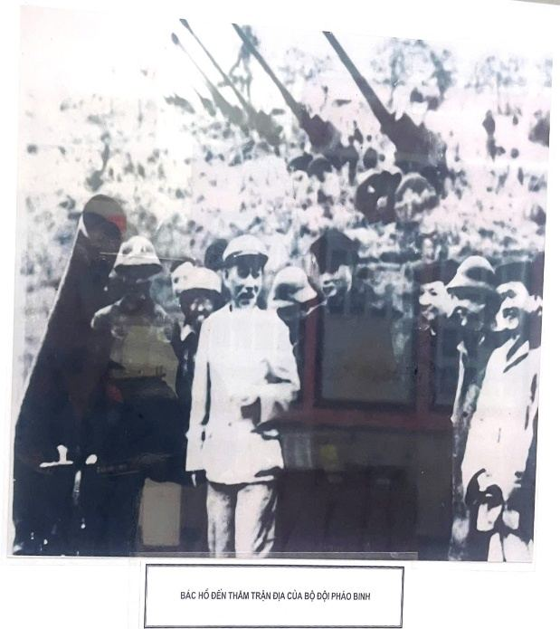
Bước sang năm 1965, trước sự sụp đổ của chiến lược “Chiến tranh đặc biệt”, buộc đế quốc Mỹ phải thực hiện chiến lược “Chiến tranh cục bộ”. Trước những thay đổi chiến lược của đế quốc Mỹ, cuộc kháng chiến của nhân dân ta đứng trước những thử thách. Hội nghị Trung ương Đảng lần thứ 11 (3/1965) và Hội nghị Trung ương lần thứ 12 (12/1965) đã đề ra chủ trương đúng đắn, chủ động đối phó với những bước leo thang của đế quốc Mỹ. Quán triệt nghị quyết của Trung ương Đảng, đáp lời kêu gọi cứu nước thiêng liêng của Hồ Chủ Tịch “Quyết tâm đánh thắng giặc Mỹ xâm lược”, lực lượng vũ trang 3 thứ quân ở miền Nam phát triển nhanh chóng. Bộ đội Pháo binh, mặc dù chỉ với pháo mang vác các loại, đã triển khai đứng chân trên các địa bàn quan trọng từ Quảng Trị - Thừa Thiên Huế đến đồng bằng Sông Cửu Long và đã lập nhiều chiến công vang dội. Ở miền Bắc, để tăng cường lực lượng chiến đấu, nhiều đơn vị quân đội mới được thành lập. Lực lượng pháo binh 3 thứ quân cũng nhanh chóng phát triển, nhu cầu về cán bộ pháo binh rất lớn.Theo chỉ thị của Bộ Quốc phòng, Nhà trường xác định “Chuyển hướng nhiệm vụ đào tạo thời bình sang đào tạo thời chiến, rút gọn chương trình, cho ra trường sớm các khóa (Khóa 5, Khóa 6); mở lớp đột kích, đào tạo ngắn ngày cả quân sự và chính trị, mở rộng thêm các loại pháo nhỏ, tiếp tục làm nhiệm vụ khóa tiếp theo đồng thời với nhiệm vụ huấn luyện cho Bạn và các nhiệm vụ đột xuất khác”. Đến tháng 6 năm 1965, Nhà trường nhận nhiệm vụ mở các lớp huấn luyện cấp tốc 3 tháng, được gọi là “Khóa đột kích” với yêu cầu đặt ra: Sau 3 tháng học viên ra trường hoàn thành được chức trách chủ yếu của người trung đội trưởng pháo.
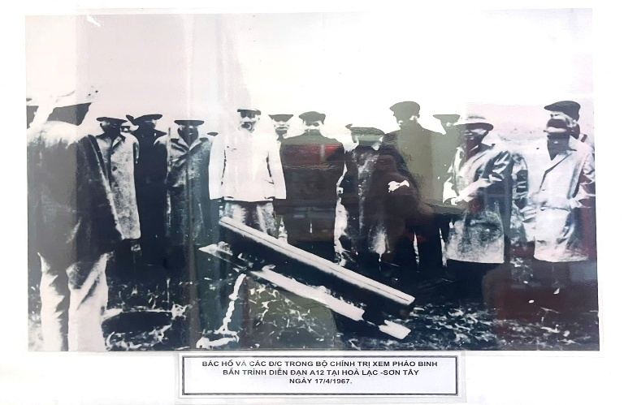
Tháng 7 năm 1965, khi đế quốc Mỹ ngày càng mở rộng leo thang đánh phá miền Bắc, Nhà trường thực hiện sơ tán triệt để, lâu dài, chỉ để lại một bộ phận nhỏ trông coi và trực chiến đánh địch tại chỗ. Mặc dù máy bay Mỹ đã hai lần ném bom vào doanh trại của Nhà trường (tháng 4 và tháng 7/1967), nhưng Nhà trường vẫn giữ được an toàn tuyệt đối về người và cơ sở vật chất kỹ thuật. Ở nơi sơ tán, Nhà trường nhanh chóng triển khai công tác đóng quân, canh phòng, đào hầm hào, công sự ngụy trang cho xe pháo và hiệp đồng chặt chẽ với chính quyền địa phương sẵn sàng tác chiến. Các khóa học viên tiếp tục được triển khai học tập theo kế hoạch đã xác định.Sau các khóa học viên huấn luyện cấp tốc, từ tháng 12/1965 đến 10/1968, Nhà trường mở liên tiếp các khóa ngắn hạn thời chiến. Với phương châm “Tương đối hệ thống và toàn diện, nắm chắc cơ bản, biết vận dụng sáng tạo” và phương hướng huấn luyện “2 quán triệt, 3 phù hợp, 2 sẵn sàng” đã góp phần bồi dưỡng, đào tạo cấp tốc cán bộ pháo binh có kiến thức cơ bản chiến trường đang cần.
Ngày 18 tháng 7 năm 1966, Đại hội đại biểu Đảng bộ Nhà trường lần thứ V được tổ chức. Đại hội đã khẳng định nhiệm vụ đào tạo huấn luyện cán bộ pháo binh đã: “Tạo sự chuyển biến mạnh mẽ cả về tư tưởng và tổ chức, phù hợp với thời chiến, hoàn thành nhiệm vụ đào tạo bồi dưỡng cán bộ với số lượng đông, chất lượng tốt, thời gian ngắn trong điều kiện khó khăn, góp phần xứng đáng vào công tác xây dựng và tác chiến của Binh chủng và Quân đội”. Đại hội chỉ rõ nhiệm vụ cấp bách thời gian tới là: “Đẩy mạnh công tác huấn luyện quân sự và sẵn sàng chiến đấu, tích cực cách mạng nội dung huấn luyện, không ngừng nâng cao chất lượng đội ngũ cán bộ, giáo viên, tiếp tục cải tiến biên chế tổ chức, thực hiện đồng hoá cán bộ giáo viên, bảo đảm tốt vật chất, phương tiện cho sinh hoạt huấn luyện, sẵn sàng chiến đấu và chiến đấu... tăng cường công tác xây dựng đảng, nhất là tích cực xây dựng chi bộ 4 tốt để làm cơ sở cho việc hoàn thành xuất sắc nhiệm vụ”.
Trong giai đoạn này, toàn Trường đã dấy lên phong trào thi đua sôi nổi trên mọi lĩnh vực hoạt động, tạo sự chuyển biến mạnh mẽ cả về tư tưởng và tổ chức, phù hợp thời chiến với nhiều hình thức phong phú, sáng tạo, nổi bật như các phong trào “Lấy Nhà trường làm trận tuyến chiến đấu chống Mỹ cứu nước”, “Lấy thao trường làm chiến trường”, “Miền Nam gọi miền Bắc trả lời”; hay như “Học ngày chưa đủ, tranh thủ học đêm”; “Tất cả cho tiền tuyến”; “Sáng kiến chống Mỹ”; Đặc biệt là phong trào “3 nhận” và phong trào viết đơn tình nguyện đi chiến trường bằng máu...
Từ năm 1965-1968, Nhà trường đã hoàn thành đào tạo, bổ túc cho 26 khóa học, cả quân sự và chính trị, học viên tốt nghiệp ra trường 2.678 đồng chí (Trong đó: ngắn hạn thời chiến là 1.080 đồng chí) bổ sung kịp thời cho chiến trường, nhất là trong giai đoạn Tổng tiến công và nổi dậy tết Mậu Thân 1968. Cũng trong giai đoạn này, Nhà trường đã cử 112 đoàn gồm 508 cán bộ, giáo viên; 1008 học viên, chiến sĩ lên đường bổ sung cho các đơn vị chiến đấu và đi thực tế chiến trường. Ngoài ra, Nhà trường còn thành lập 1 khung trung đoàn, 7 khung tiểu đoàn và 1 tiểu đoàn hoàn chỉnh mang phiên hiệu “Tiểu đoàn 400” với 53 xe, 47 khẩu pháo sẵn sàng chi viện cho chiến trường. Nhiều cán bộ, giáo viên đã tình nguyện vào Nam chiến đấu, trong đó một số đồng chí đã anh dũng hy sinh như: Đồng chí Nguyễn Khắc Lục, Nguyễn Thành Long đã anh dũng hy sinh tại mặt trận Đường 9 (tháng 4/1967); đồng chí Đào Hùng hy sinh trong khi làm nhiệm vụ bắn tàu chiến địch (6/1967); đồng chí Vũ Xuân Lương hy sinh tại Đông Hà - Quảng Trị (12/1968); đồng chí Trần Uông hy sinh tại chiến trường Quảng Trị (12/1972)...
Đồng thời với đào tạo các khóa ngắn hạn thời chiến, Nhà trường mở các lớp tập huấn ngắn ngày về đo đạc, bắn pháo, chiến thuật bộ binh, trinh sát và cử giáo viên đi huấn luyện về kỹ thuật chuyên ngành pháo binh cho các đơn vị đặc công, xe tăng, huấn luyện sĩ quan dự bị cho Trường Đại học Tổng hợp và đảm nhiệm bổ túc văn hoá cho Binh chủng. Ngày 15 tháng 1 năm 1965, Trường Văn hoá của Binh chủng được sát nhập vào Trường Sĩ quan Pháo binh, mang phiên hiệu Tiểu đoàn 6. Tính từ tháng 01/1965 đến tháng 10/1971, khi Tiểu đoàn 6 (Tiểu đoàn Văn hoá) giải thể, Nhà trường đã hoàn thành bổ túc văn hoá được 188 lớp với 3.321 học viên từ vỡ lòng đến hết cấp 3. Từ những thành tích trên, Tiểu đoàn 6 được Nhà nước tặng Huân chương Chiến công hạng Ba năm 1968. Năm 1968, Bộ Tư lệnh Pháo binh và Tổng cục Chính trị đã lấy Trường Sĩ quan Pháo binh làm nơi đăng cai tổ chức Hội nghị chuyên đề rút kinh nghiệm về công tác bổ túc văn hoá của Binh chủng và toàn Quân.
Công tác dân vận của Nhà trường giai đoạn này được đẩy mạnh, đã tổ chức hàng trăm cán bộ, học viên về các thôn xã, trường học, xí nghiệp, đơn vị kết nghĩa tuyên truyền, phổ biến những chủ trương chính sách của Đảng, Nhà nước, giúp dân thu hoạch lúa, đào đắp đê điều, cứu người và lương thực ra khỏi vùng ngập lũ. Với thành tích ấy, năm 1969, Nhà trường được Ban chỉ huy phòng chống lụt bão Trung ương tặng Bằng khen. Đặc biệt trong trận chiến đấu quyết liệt ngày 14/7 và 27/7/1965, Tiểu đoàn 5 và dân quân xã Thụy An đã hiệp đồng chiến đấu góp phần cùng bộ đội tên lửa và pháo phòng không bắn rơi 8 máy bay địch, bắt sống 03 giặc lái Mỹ, bảo vệ nhân dân, bảo vệ đập Suối Hai an toàn.
Với thành tích trong 10 năm (1957 - 1967) trên tất cả các lĩnh vực: đào tạo, bổ túc cán bộ, huấn luyện thời chiến, đào tạo đột kích, bổ túc văn hoá, sẵn sàng chiến đấu và xây dựng, chuẩn bị lực lượng chi viện đắc lực cho miền Nam, chống chiến tranh phá hoại của địch ở miền Bắc, Nhà trường đã vinh dự được Nhà nước tặng thưởng Huân chương Chiến công hạng Nhất.
2. Kết hợp đào tạo ngắn hạn và dài hạn, tăng cường huấn luyện pháo xe kéo, đáp ứng nhiệm vụ trước mắt và lâu dài của Binh chủng (1969-1975)
Cuộc Tổng tiến công và nổi dậy Tết Mậu Thân 1968 của quân dân miền Nam đã giáng một đòn quyết định làm thất bại chiến lược “Chiến tranh cục bộ”, buộc đế quốc Mỹ phải chuyển sang thực hiện chiến lược “Việt Nam hoá chiến tranh” ở miền năm Việt Nam. Bước sang năm 1969 Binh chủng Pháo Binh bổ sung nhiệm vụ: Vừa phải giữ vững và phát triển mạnh mẽ, rộng rãi pháo mang vác 3 thứ quân... vừa phải khẩn trương khôi phục lực lượng pháo xe kéo tầm xa, uy lực lớn để sẵn sàng đánh hiệp đồng quy mô lớn giành thắng lợi có ý nghĩa quyết định. Trong thời kỳ này, Nhà trường đã có những bước phát triển mới rất quan trọng: “Từ nhiệm vụ huấn luyện và xây dựng chủ yếu đáp ứng yêu cầu trước mắt, sang vừa phải đáp ứng trước mắt, đồng thời phải đáp ứng lâu dài; từ nhiệm vụ đào tạo bổ túc ngắn hạn sang nhiệm vụ đào tạo dài hạn, theo phương châm: cơ bản, hệ thống, toàn diện; tiếp tục đào tạo pháo mang vác, đào tạo bổ túc trung cấp và đào tạo cán bộ tiểu đoàn cho ta và Bạn...”
Từ năm 1969, các đơn vị của Nhà trường ở nơi sơ tán lại trở về Trường để huấn luyện tập trung, vừa xây dựng doanh trại, vừa triển khai công tác huấn luyện ngay. Tất cả các khóa đều huấn luyện pháo mang vác và pháo xe kéo. Yêu cầu đào tạo đối với các khóa dài hạn, học viên ra trường phải trở thành trung đội trưởng (pháo và chỉ huy); phải trở thành đảng viên và phải đạt 5 yêu cầu chung mà Đại hội Đảng bộ nhà trường lần thứ VII đã đề ra là: “Vững vàng về chính trị tư tưởng, tinh thông về kỹ chiến thuật, tổ chức chỉ huy quản lý bộ đội tốt, kỷ luật tác phong nghiêm, sức khỏe bền bỉ, dẻo dai”.
Trong năm 1969, thật vinh dự và cảm động, Trường Sĩ quan Pháo binh được đón nhận lẵng hoa Bác Hồ gửi tặng thể hiện tình cảm của Bác đối với Nhà trường trước lúc Người đi xa. Toàn trường nguyện làm hết sức mình vì lý tưởng cách mạng và sự tin tưởng mà Bác Hồ gửi gắm ở bộ đội Pháo binh và Nhà trường. Để tỏ lòng biết ơn đối với Bác kính yêu, Nhà trường đã hoàn thành tốt nhiệm vụ thiêng liêng bắn pháo lễ tại quảng trường Ba Đình trong ngày quốc tang vĩnh biệt Người (ngày 09/9/1969).
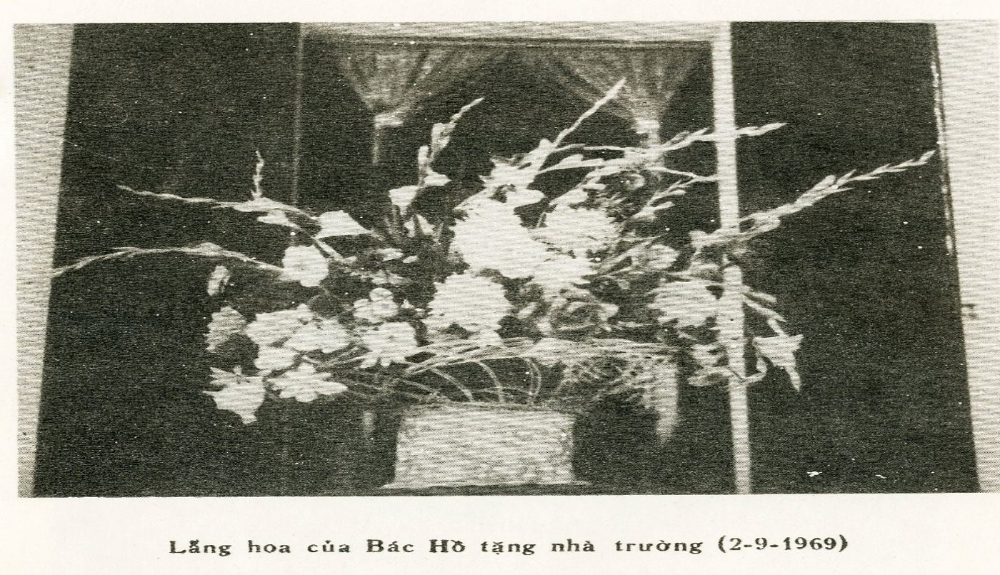
Đầu năm 1970, toàn trường từ nơi sơ tán đã trở về doanh trại tập trung đầy đủ. Các tổ giáo viên ở các tiểu đoàn cũng trở lại Phòng huấn luyện. Ngày 13/4/1972, Nhà trường lại phải tiếp tục đi sơ tán lần thứ 2. Đến tháng 01 năm 1973, Nhà trường tập trung về doanh trại tiếp tục làm nhiệm vụ đào tạo, bổ túc cán bộ. Năm 1974, Nhà trường được lệnh bàn giao Tiểu đoàn 1 (Tiểu đoàn đào tạo trung đội cối 82 và ĐKZ 75) cho Trường Sĩ quan Lục quân, kết thúc thời kỳ đào tạo pháo cối nhỏ của Nhà trường.
Năm 1971, để tiện việc chỉ đạo, Phòng Huấn luyện được tách làm 2 phòng: Phòng Giáo viên và Phòng Kế hoạch, Nhà trường có thêm điều kiện thuận lợi để thực hiện Nghị quyết Đại hội Đảng bộ Nhà trường lần thứ VIII “Vừa đào tạo hỗ trợ trung cấp, vừa đào tạo hỗ trợ sơ cấp, nhưng lấy nhiệm vụ đào tạo là chính, nhiệm vụ đào tạo sơ cấp có chuyển hướng mới: đào tạo 3 năm cơ bản, toàn diện, hệ thống; đây cũng là nhiệm vụ quan trọng của Nhà trường. Bên cạnh đó vẫn tiếp tục đào tạo lớp pháo nhỏ 12 tháng đào tạo giáo viên...”
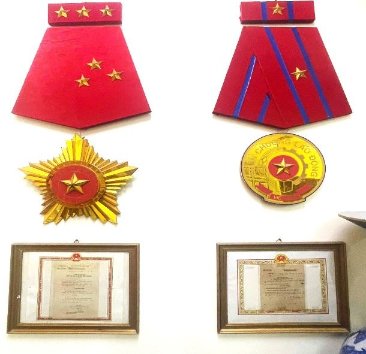
Đến tháng 8/1971, một trận lũ lớn đã xảy ra, đê cống Chuốc bị vỡ làm ngập một số khu vực lớn và đe dọa trực tiếp tới Thủ đô Hà Nội. Hàng ngàn cán bộ, giáo viên, học viên, chiến sĩ của Nhà trường không quản khó khăn, hy sinh đã hăng hái cùng Nhân dân địa phương hàn khẩu đê điều, bảo vệ tính mạng tài sản của nhân dân. Với những đóng góp này Nhà trường đã được Nhà nước tặng thưởng Huân chương Lao động hạng Ba.Về nhiệm vụ huấn luyện học viên quốc tế, ngoài các khóa huấn luyện trước đây, Nhà trường nhận nhiệm vụ mở các khóa pháo phản lực, phân đội pháo đặc công, chuyển binh chủng, các khóa đào tạo 3 năm tham mưu và đo đạc; các khóa đào tạo giáo viên; Tiểu đoàn 10 có nhiệm vụ như là một hệ riêng chuyên huấn luyện giúp Bạn. Vào dịp này, nhiều đoàn khách nước ngoài ở nhiều nước thuộc phong trào giải phóng dân tộc đến Trường thăm quan, học hỏi kinh nghiệm.
Qua 10 năm (1965 - 1975), hoạt động công tác đảng, công tác chính trị ở Nhà trường luôn được coi trọng. Đảng uỷ, Ban Giám hiệu Nhà trường đặc biệt quan tâm đến việc giáo dục chính trị tư tưởng. Công tác xây dựng Đảng tập trung vào 2 khâu: Xây dựng chi bộ và rèn luyện đảng viên 4 tốt. Đời sống vật chất, tinh thần ở Nhà trường ngày càng được cải thiện. Công tác hậu cần, kỹ thuật trong điều kiện lúc tập trung, khi sơ tán, di chuyển nhiều lần, bom đạn Mỹ bắn phá, cơ sở vật chất còn thiếu nhiều, song Nhà trường đã chủ động “Tự lực, tự cường”, tích cực củng cố xây dựng doanh trại ở nơi sơ tán, bảo đảm trong mọi điều kiện vẫn tổ chức huấn luyện thường xuyên, bảo đảm chất lượng.
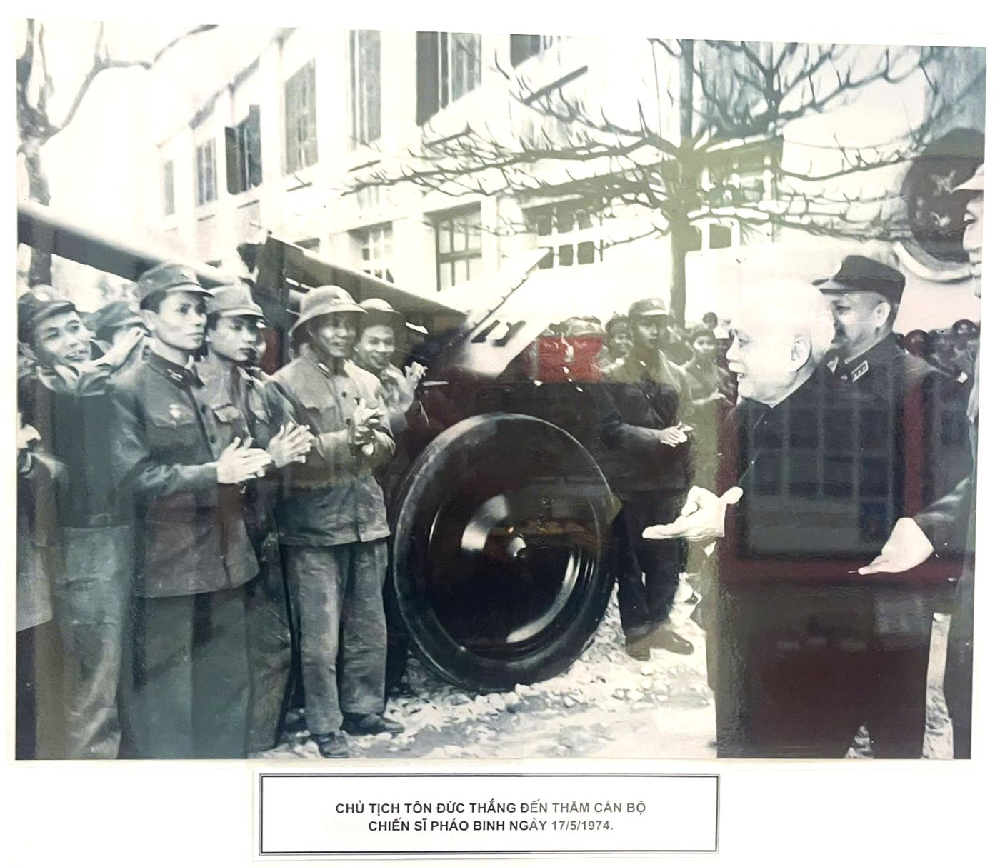
Từ năm 1972 đến năm 1975, Nhà trường đã tổ chức nhiều đoàn cán bộ giáo viên tham gia chiến đấu ở các mặt trận Đường 9 Nam Lào, chiến dịch giải phóng Quảng Trị và cùng Trung đoàn 68 tập huấn cho các đơn vị về chiến thuật bắn pháo. Thời kỳ chiến tranh chống Mỹ cứu nước (1965 - 1975) đã đánh dấu bước phát triển to lớn trong lịch sử của Nhà trường: Đã đào tạo, bổ túc được 6.009 cán bộ sơ cấp, 616 cán bộ trung cấp cả quân sự và chính trị, 250 giáo viên cho Nhà trường và các quân khu, 3.321 học viên văn hoá, 301 sĩ quan dự bị; mở các khóa cho các bạn quốc tế, chưa kể huấn luyện quân sự cho hàng ngàn học sinh phổ thông, dân quân tự vệ và cán bộ, chiến sĩ của các đơn vị bạn. Với những thành tích trên, Nhà trường vinh dự được Nhà nước tặng thưởng 02 Huân chương Chiến công hạng Nhất, hạng Ba và 01 Huân chương Lao động.
TRƯỜNG SĨ QUAN PHÁO BINH GIAI ĐOẠN (1975 - 2027)
1. Trường Sĩ quan Pháo binh giai đoạn 1976 - 1986
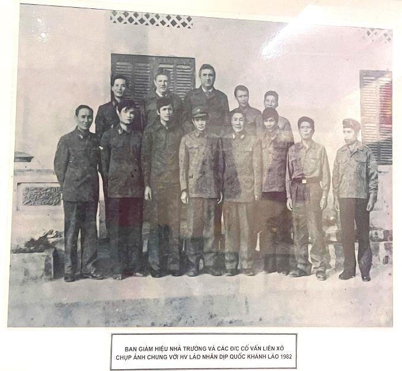
Sau đại thắng mùa xuân năm 1975, cả nước thống nhất, đi lên xây dựng CNXH, xây dựng Quân đội cách mạng, chính quy, từng bước hiện đại. Dưới ánh sáng nghị quyết các kỳ đại hội Đảng: Đại hội đại biểu toàn quốc lần thứ IV (1976), lần thứ V (1982) và lần thứ VI (1986), cả nước tập trung thực hiện 2 nhiệm vụ chiến lược là xây dựng và bảo vệ Tổ quốc Việt Nam XHCN. Tuy nhiên, chủ nghĩa đế quốc đẩy mạnh thực hiện chiến lược phá hoại nhiều mặt, bao vây, cấm vận, phong toả, gây chiến tranh biên giới. Ngay sau khi kết thúc chiến tranh, Quân uỷ Trung ương, Bộ Quốc phòng đã đề ra nhiều chủ trương lãnh đạo Quân đội thực hiện nhiệm vụ quân sự và tham gia phát triển kinh tế.Trước tình hình đó, nhiệm vụ của Binh chủng Pháo binh lúc này là xây dựng thành một binh chủng cách mạng, chính quy, từng bước hiện đại, vừa sẵn sàng chiến đấu cao, vừa lao động sản xuất góp phần phát triển kinh tế, xây dựng đất nước và làm nhiệm vụ quốc tế. Nhà trường được Bộ Tư lệnh Pháo binh giao nhiệm vụ: “Nhanh chóng chuyển đào tạo, bồi dưỡng cán bộ theo yêu cầu cơ bản, hệ thống, toàn diện, thống nhất...., đảm bảo học viên tốt nghiệp ra trường nắm chắc lý thuyết, thực hành giỏi...”. Để nâng cao chất lượng huấn luyện và xây dựng đơn vị vững mạnh, Nhà trường điều chỉnh biên chế tổ chức. Cuối năm 1975, Ban Hành chính thuộc Phòng Kế hoạch được tách ra thành Phòng Hành chính trực thuộc Ban Giám hiệu. Tháng 10 năm 1978, giải thể Phòng Giáo viên quân sự và tách Ban Giáo viên ra khỏi Phòng Chính trị, thành lập 7 khoa giáo viên trực thuộc Ban Giám hiệu. Từ cuối năm 1978, về biên chế tổ chức Nhà trường gồm 4 phòng, 7 khoa và 6 tiểu đoàn.
Tiếp tục đề ra chủ trương lãnh đạo Nhà trường trong giai đoạn mới, Đại hội Đảng bộ Nhà trường lần thứ X được tổ chức từ ngày 17 đến ngày 22 tháng 6 năm 1976. Đến Đại hội Đảng bộ Nhà trường lần thứ XI diễn ra từ ngày 15 đến 18 tháng 4 năm 1979. Nghị quyết Đại hội đều xác định phương hướng: “Xây dựng Nhà trường cách mạng, chính quy, vững mạnh, toàn diện, hoàn thành tốt nhiệm vụ trung tâm đào tạo, bổ túc cán bộ trung, sơ cấp; nhiệm vụ xây dựng kinh tế xây dựng cơ bản và các nhiệm vụ khác trên giao”.
Từ tháng 3/1976 đến tháng 7/1977, Nhà trường được cấp trên giao đào tạo Khóa 17 đào tạo sơ cấp dài hạn (3 năm); Khóa 2 đào tạo giáo viên 3 chuyên ngành: Xạ kích (Bắn pháo), Trinh sát và Binh thao; theo hệ chính quy 2 năm; Khóa 8 đào tạo cán bộ trung cấp quân sự (thí điểm), thời gian học 2 năm. Giai đoạn này, Nhà trường đã đào tạo hàng trăm học viên bổ sung cho các đơn vị phía Nam. Năm 1977, Tại Hội nghị tổng kết chiến đấu Pháo binh toàn quân, đồng chí Võ Nguyên Giáp chỉ rõ: Trong bất kỳ tình hình nào, pháo binh cũng phải mạnh, phải luôn sẵn sàng chiến đấu tốt, nhất là những nơi xảy ra hành động khiêu khích, xâm phạm lãnh thổ nước ta. Vì vậy, trong 2 năm 1978 - 1979, Nhà trường đã cử nhiều đoàn cán bộ, giáo viên, học viên trực tiếp đến các quân khu, quân đoàn mở các lớp tập huấn kỹ thuật và tham gia chiến đấu ở biên giới phía Tây Nam và phía Bắc.
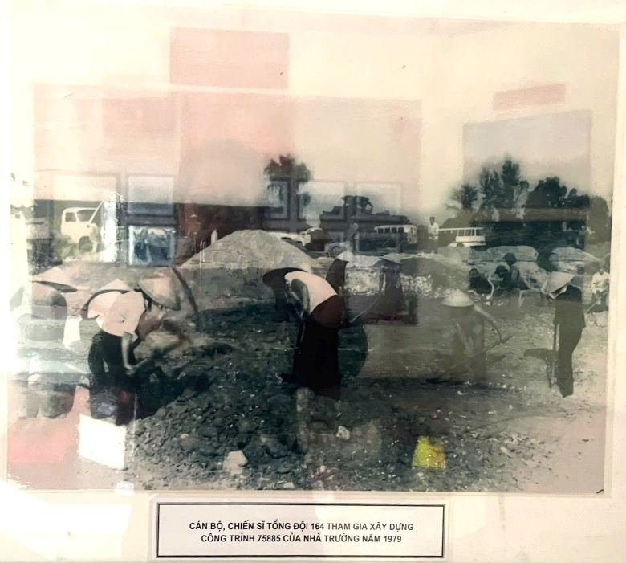
Trong giai đoạn này, Nhà trường đã tập trung xây dựng chương trình, kế hoạch, nội dung tập huấn các loại pháo phản lực. Đến cuối năm 1979 mở các lớp tập huấn nội dung pháo phản lực cho cán bộ quân khu, quân đoàn. Cũng trong thời kỳ này, Nhà trường mở nhiều lớp bồi dưỡng cho cán bộ khoa học kỹ thuật Nhà nước được động viên vào quân đội và đào tạo sĩ quan dự bị cho trường Đại học Mỏ Địa chất.Ngày 14 tháng 12 năm 1979, Bộ Tư lệnh Pháo binh quyết định tách Trường Sĩ quan Pháo binh thành 2 cơ sở (Cơ sở 1 ở tại Sơn Tây do Đại tá Nguyễn Kim Điện làm Chính ủy, Bí thư Đảng ủy và Thượng tá Hoàng Đỉnh làm Phó Hiệu trưởng; cơ sở 2 đóng quân tại Lam Sơn, xã Ninh Sơn, huyện Ninh Hoà, tỉnh Phú Khánh, do Đại tá Nguyễn Văn Khiếu làm Hiệu trưởng và Thượng tá Phan Viêm làm Phó Chính uỷ, Bí thư Đảng uỷ). Sau khi chia tách, cơ sở 1 có nhiệm vụ: đào tạo sĩ quan cấp Tiểu đoàn, cấp trung, lữ đoàn 2 năm; bổ túc cán bộ trung cấp 10 tháng; đào tạo sĩ quan chính trị 1 năm; tập huấn cán bộ trung cấp; huấn luyện sĩ quan dự bị, đào tạo giúp Bạn và bồi dưỡng văn hoá cho cán bộ. Từ 10/1981, Nhà trường có thêm nhiệm vụ đào tạo sơ cấp dài hạn 3 năm. Cơ sở 2 đã hoàn thành tốt nhiệm vụ đào tạo các Khóa 19, 20. Từ năm học 1980 - 1981, theo chỉ thị của Bộ Quốc phòng huấn luyện theo chương trình chuẩn 3 năm đào tạo dài hạn và 1 năm bổ túc ngắn hạn. Khóa 22 đào tạo dài hạn, được thực hiện chương trình thí điểm “Đào tạo thành người chỉ huy cấp phân đội (Trung đội, đại đội, tiểu đoàn) có đủ phẩm chất, năng lực hoàn thành tốt nhiệm vụ”.
Đầu năm 1980, Trường Đảng Pháo binh thuộc Bộ Tư lệnh Pháo Binh được thành lập, đặt tại Trường Sĩ quan Pháo binh và “Là một bộ phận dưới sự chỉ đạo của Đảng uỷ cơ sở 1, cơ quan nhà trường có trách nhiệm hướng dẫn chỉ đạo như một đầu mối, từ nội dung chương trình và chính sách”. Ngày 09/9/1981, Bộ Tổng tham mưu quyết định Cơ sở 2 của Nhà trường sát nhập về lại Cơ sở 1 tại Sơn Tây và Trường Đảng Pháo binh được chuyển thành Tiểu đoàn 11 thuộc Trường Sĩ quan Pháo binh, làm nhiệm vụ đào tạo cán bộ chính trị pháo binh sơ cấp 3 năm và ngắn hạn 1 năm.
Đại hội Đảng bộ Nhà trường lần thứ XII diễn ra từ ngày 11 đến ngày 12 tháng 6 năm 1981, đồng chí Đại tá Trần Quang Lâm được bầu làm Bí thư Đảng uỷ. Từ năm học 1982 - 1983, trước yêu cầu nhiệm vụ mới, Nhà trường kiện toàn biên chế tổ chức: gồm 6 phòng (Chính trị, Huấn luyện, Hậu cần, Kỹ thuật, Cán bộ và Hành chính; 7 khoa (Chiến thuật, Bắn pháo, Kỹ thuật chuyên ngành, KHXH, Quân sự chung, Văn hoá, Thể dục thể thao) và 2 ban trực thuộc Ban Giám hiệu Nhà trường (Tài vụ và Điều tra hình sự). Đến tháng 8/1984, Khoa KHXH tách thành 2 khoa là Khoa Lý luận Mác - Lênin và Khoa Công tác đảng, công tác chính trị. Ngày 25/10/1985 thành lập thêm Khoa Trinh sát và Ban Thông tin. Khối đơn vị có 9 tiểu đoàn học viên (6 tiểu đoàn đào tạo sĩ quan chỉ huy, 1 tiểu đoàn đào tạo sĩ quan chính trị, 1 tiểu đoàn bổ túc cấp chiến thuật chiến dịch và 1 tiểu đoàn học viên quốc tế); 1 tiểu đoàn phục vụ huấn luyện và 1 tiểu đoàn xe (Tiểu đoàn xe đến tháng 8/1986 chuyển thành Đội xe).
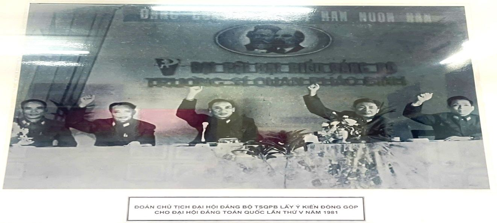
Nhiệm vụ cơ bản của Nhà trường giai đoạn này là: Đào tạo 2 chuyên ngành: sĩ quan chỉ huy, sĩ quan chính trị phân đội pháo binh dài hạn (3 năm) và ngắn hạn (10 tháng); ngoài ra còn đào tạo bổ túc sĩ quan chỉ huy tham mưu chiến thuật chiến dịch; huấn luyện giúp Bạn và huấn luyện sĩ quan dự bị. Căn cứ vào nhiệm vụ, mục tiêu đào tạo, Nhà trường điều chỉnh nội dung chương trình, phân phối lại thời gian phù hợp với phương châm: Cơ bản, toàn diện, hệ thống, thống nhất và chuyên sâu. Bắt đầu từ năm học 1981 - 1982, Nhà trường thực hiện thí điểm chế độ tuyển sinh, từ đó về sau chế độ này được tổ chức chặt chẽ và đi vào nề nếp. Năm học 1982 - 1983, các quy chế về kiểm tra, sát hạch, thi, công nhận tốt nghiệp được ban hành và ngày càng hoàn thiện. Từ năm 1982, Nhà trường đã cử cán bộ sang làm chuyên gia giúp các nước bạn Lào, Campuchia và đào tạo được hàng trăm cán bộ pháo binh cấp phân đội.
Nhà trường đã tập trung xây dựng, bồi dưỡng đội ngũ giáo viên với nhiều biện pháp như: Coi trọng tập huấn nội dung, phương pháp; thi giáo viên dạy giỏi; tăng cường cử giáo viên đi thực tế ở các đơn vị và gửi đi đào tạo ở các trường trong và ngoài nước, đồng thời giữ lại trường hợp học viên tốt nghiệp loại giỏi bổ sung cho các khoa giáo viên... Vì vậy, đội ngũ cán bộ, giáo viên được tăng cường và củng cố (từ 84 lên 174 đồng chí). Công tác nghiên cứu, biên soạn thời kỳ này được đẩy mạnh và bám sát mục tiêu đào tạo theo chương trình chuẩn 3 năm. Đến năm 1986, nhiều khoa giáo viên đã hoàn thành về cơ bản biên soạn đề cương bài giảng tóm tắt, nhiều đề tài nghiên cứu và sáng kiến cải tiến có giá trị được đánh giá cao.
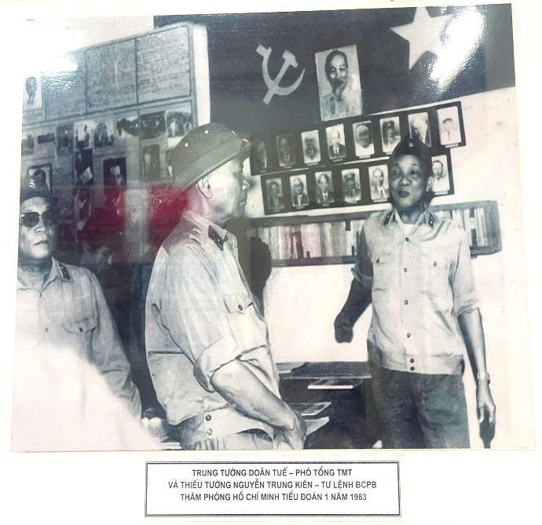 |
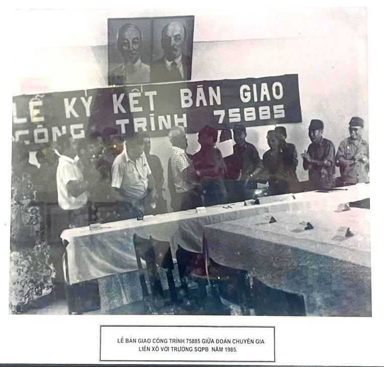 |
|---|
Cơ sở vật chất bảo đảm cho huấn luyện ngày càng được bổ sung và củng cố. Công trình 75-8-85 do Liên Xô giúp đỡ xây dựng từ năm 1981 gồm hệ thống giảng đường, phòng làm việc được đưa vào sử dụng từng phần từ cuối năm học 1984 -1985. Các phương tiện phục vụ giảng dạy, học tập, làm việc; hệ thống trạm trưởng, sa bàn bắn (ngoài trời và sa bàn MAP”), xưởng in, xưởng cơ khí, nhà bảo dưỡng kỹ thuật, nhà để xe pháo và trạm biến thế được xây dựng và củng cố, đưa vào sử dụng đã tạo điều kiện thuận lợi lớn để Nhà trường nâng cao chất lượng huấn luyện và xây dựng chính quy.
Công tác xây dựng Đảng được thực hiện nghiêm túc tạo ra sự chuyển biến tiến bộ trong củng cố tổ chức cơ sở Đảng và giáo dục rèn luyện đảng viên. Đời sống văn hóa tinh thần trong Nhà trường ngày càng thêm phong phú. Nhiều hoạt động của Công đoàn, Phụ nữ và Đoàn thanh niên đem lại khí thế mới và hiệu quả thiết thực. Phong trào thi đua dạy giỏi, học giỏi, quản lý giỏi, công tác tốt trong Nhà trường phát triển cả bề rộng và chiều sâu.
2. Xây dựng Nhà trường chính quy mẫu mực, hoàn thành tốt nhiệm vụ (1986 - 2016)
Từ năm 1986 thực hiện đường lối đổi mới của Đảng, Nhà trường đã quán triệt thực hiện nghiêm các nghị quyết, các chỉ thị của Đảng, không ngừng xây dựng Nhà trường lớn mạnh, giữ vững ý chí tự lực tự cường, tinh thần tích cực, chủ động sáng tạo, dạy tốt, học tốt, công tác tốt, hoàn thành tốt nhiệm vụ giáo dục và đào tạo cán bộ, nhân viên chuyên môn kỹ thuật có trình độ từ sơ cấp đến cao đẳng và lên đại học với chất lượng ngày càng cao, đáp ứng yêu cầu phát triển của Binh chủng Pháo binh nói riêng và của quân đội ta nói chung. Nhiệm vụ của Nhà trường giai đoạn này được xác định rất đa dạng, từ đào tạo cơ bản dài hạn trung đội trưởng phát triển lên cấp đại đội và đào tạo tiểu đoàn trưởng pháo binh (2 vòng); đào tạo trung đội trưởng ngắn hạn, đào tạo cơ bản dài hạn sĩ quan chính trị pháo binh cấp phân đội; bổ túc cán bộ trung, lữ đoàn; chuyển loại cán bộ chính trị; đào tạo giáo viên chuyên ngành pháo binh cho các trường và đơn vị; liên kết đào tạo với Trường Sĩ quan Chính trị - Quân sự và Học viện Lục quân; đào tạo sĩ quan chỉ huy cấp phân đội trình độ đại học và mở các lớp tập huấn theo yêu cầu của Binh chủng và Bộ Quốc phòng...
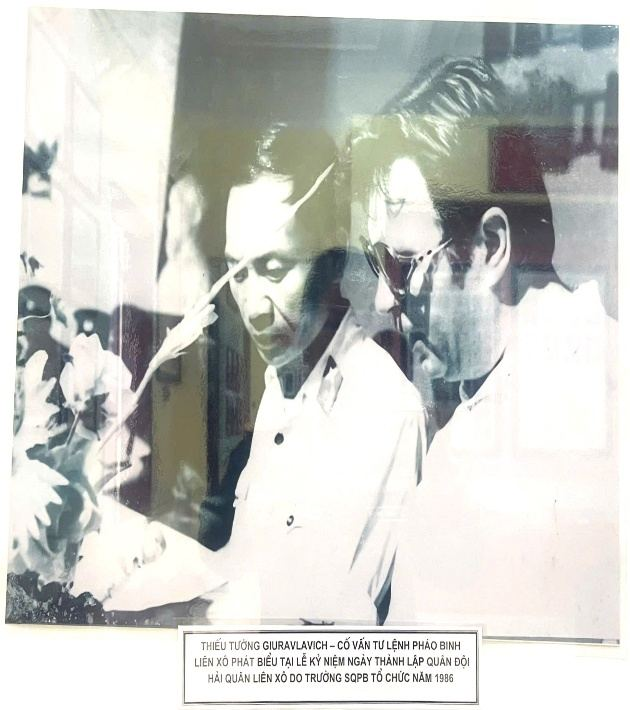
Từ Khóa 30 (năm học 1989 - 1990) trở đi, Nhà trường bắt đầu thực hiện chế độ tuyển sinh theo quy chế mới của Bộ giáo dục và đào tạo và của Bộ Quốc phòng. Từ năm học 1990 - 1991, học viên đào tạo sĩ quan chỉ huy pháo binh cấp phân đội được Trường Sĩ quan Lục quân 1 đào tạo 6 tháng với những nội dung cơ bản của binh chủng hợp thành. Nhà trường bắt đầu đào tạo cán bộ tiểu đoàn (vòng 2) Khóa 1, thời gian học 1 năm; đào tạo hạ sĩ quan cho lực lượng pháo binh toàn quân, thời gian học 6 tháng; tiếp tục đào tạo giáo viên chuyên ngành quân sự pháo binh cho các trường quân chính, quân khu, quân đoàn. Từ năm học 1992 - 1993, cùng với nhiệm vụ đào tạo cơ bản dài hạn 3 năm, Nhà trường đã thực hiện tuyển sinh khóa học đào tạo bậc cao đẳng đầu tiên (Khóa 34B).Từ những kết quả đạt được trong nhiệm vụ huấn luyện, đào tạo, bồi dưỡng cán bộ pháo binh toàn quân và sự nỗ lực quyết tâm thực hiện nhiệm vụ, xây dựng Nhà trường, đến tháng 7 năm 1995, Bộ Giáo dục và đào tạo đã ra quyết định công nhậnTrường Sĩ quan Pháo Binh là Trường đào tạo sĩ quan phân đội bậc Cao đẳng. Song song với các khóa cao đẳng, Nhà trường còn nhận nhiệm vụ hoàn thiện đào tạo sĩ quan phân đội pháo binh bậc Cao đẳng cho những cán bộ đã hoàn thành chương trình đào tạo 3 năm trước đây. Từ năm học 1994 - 1995, Nhà trường bắt đầu tuyển sinh khóa đào tạo đại học đầu tiên (Khóa 36); chương trình đào tạo là 5 năm. Ngày 21 tháng 9 năm 1998, Trường Sĩ quan Pháo binh được Chính phủ quyết định giao nhiệm vụ đào tạo trình độ bậc Đại học. Đến tháng 7 năm 1999, khóa đào tạo bậc Đại học đầu tiên của Nhà trường (Khóa 36) ra trường với bằng tốt nghiệp cử nhân quân sự pháo binh. Tháng 3 năm 2016, thực hiện Quyết định của Bộ Quốc phòng về việc đào tạo trung đội trưởng pháo binh văn bằng thứ hai từ hạ sĩ quan, binh sĩ, Nhà trường đã nhanh chóng triển khai xây dựng nội dung, chương trình, kịp thời đáp ứng nhiệm vụ đào tạo.
Đối với đào tạo học viên quốc tế, học viên Lào đào tạo theo chương trình 3 năm, 4 năm, 5 năm và tập huấn, bổ túc pháo binh từ 3 đến 6 tháng; với học viên Campuchia, Nhà trường dừng đào tạo từ năm 1990 đến năm 2003. Thời gian này, Nhà trường được giao nhiệm vụ đào tạo trung đội trưởng ngắn hạn theo Chỉ thị 801 của Bộ Quốc phòng, thời gian đào tạo 1 năm; đào tạo sĩ quan pháo binh 3 năm. Cùng với các đối tượng đào tạo ở Trường, Phân hiệu chuyên môn kỹ thuật đảm nhiệm tổ chức tập huấn cho các đối tượng, bổ túc nâng bậc thợ lái xe, thợ sửa chữa pháo và từ năm 2004, Phân hiệu CMKT bắt đầu đảm nhiệm đào tạo lái xe hơi, xe xích cho Binh chủng và toàn quân.
Đầu năm 1995, Trường Hạ sĩ quan Pháo binh sáp nhập lần 2 vào Nhà trường. Thực hiện quyết định số 364/TLP của Tư lệnh Pháo binh, ngày 08/4/1996, Trường Hạ sĩ quan chuyên môn kỹ thuật được thu gọn thành Phân hiệu Chuyên môn kỹ thuật trực thuộc Trường Sĩ quan Pháo binh, với nhiệm vụ đào tạo lái xe, thợ xe, thợ pháo và thợ quang học (gọi chung là đào tạo nhân viên chuyên môn kỹ thuật pháo binh). Để phù hợp chức năng, nhiệm vụ đào tạo mới, Binh chủng điều chuyển Tiểu đoàn 7 đào tạo hạ sĩ quan ở Phân hiệu Chuyên môn Kỹ thuật về Trường (Tiểu đoàn 7 đào tạo hạ sĩ quan được chuyển sang Trường Chuyên môn kỹ thuật từ năm 1992). Từ đây, Nhà trường đảm nhiệm đào tạo sĩ quan, hạ sĩ quan, nhân viên chuyên môn kỹ thuật và nghiên cứu khoa học của Binh chủng Pháo binh.
Trong giai đoạn này, tổ chức biên chế của Nhà trường gồm: Ban Giám hiệu; 5 phòng: Chính trị, Đào tạo, Tham mưu - Hành chính, Hậu cần, Kỹ thuật; 7 khoa: Khoa học xã hội và nhân văn, Chiến thuật, Bắn pháo, Binh thao, Trinh sát - Đo đạc, Quân sự chung, Khoa học cơ bản; 5 tiểu đoàn: Tiểu đoàn 1, Tiểu đoàn 2, Tiểu đoàn 3, Tiểu đoàn 4, Tiểu đoàn 7 và Phân hiệu chuyên môn kỹ thuật. Đến ngày 12 tháng 01 năm 2000, Khoa Tên lửa được thành lập theo Quyết định số 13/QĐTM và từ năm 2001, Nhà trường thực hiện đào tạo chuyển loại sĩ quan tên lửa mặt đất và tên lửa chống tăng. Năm 2003, Nhà trường thành lập trở lại tiểu đoàn đào tạo học viên quốc tế lấy phiên hiệu là Tiểu đoàn 10. Ngày 25/11/2009, Bộ Tư lệnh Pháo binh đã ra Quyết định số 2215/QĐ-BTL về việc thành lập Ban Khảo thí và Bảo đảm chất lượng giáo dục - đào tạo, trực thuộc Ban Giám hiệu Nhà trường, giao cho Phòng Đào tạo quản lý về hành chính.
Ngày 11 tháng 3 năm 2015, thực hiện Quyết định số 212/QĐ-BTL của Tư lệnh Binh chủng, Phân hiệu chuyên môn kỹ thuật tách ra khỏi biên chế Nhà trường, thành lập Trung tâm Huấn luyện - Đào tạo trực thuộc Bộ Tư lệnh Pháo binh. Tổ chức, biên chế của Nhà trường giai đoạn này bao gồm: Ban Giám hiệu, 5 phòng: Chính trị, Đào tạo, Tham mưu - Hành chính, Hậu cần, Kỹ thuật; 8 khoa giáo viên: Khoa học xã hội và nhân văn, Chiến thuật, Bắn pháo, Binh thao, Trinh sát đo đạc, Quân sự chung, Khoa học cơ bản, Tên lửa; 6 tiểu đoàn quản lý học viên: Tiểu đoàn 1, Tiểu đoàn 2, Tiểu đoàn 3, Tiểu đoàn 4, Tiểu đoàn 7, Tiểu đoàn 10 và 01 ban trực thuộc (Ban Khảo thí và Bảo đảm chất lượng giáo dục - đào tạo).
Để đảm bảo cho các khóa đào tạo theo đúng với mục tiêu, yêu cầu, Nhà trường đã được Bộ Quốc phòng, Binh chủng đầu tư mua sắm trang thiết bị, bổ sung nâng cấp các phòng học vi tính, ngoại ngữ chuyên dùng và một phòng thí nghiệm vật lý. Từng bước củng cố, cải tạo và xây dựng mới cơ sở vật chất đảm bảo cho huấn luyện như: tu sửa, mua sắm mới nhiều trang thiết bị giảng đường học tập, các phòng làm việc của cán bộ, giáo viên; cải tạo, lắp đặt mới hệ thống giảng đường chuyên dùng ở các khoa; xây dựng mới khu sa bàn bắn và hồ bơi vũ trang.Các bãi tập, thao trường đều được củng cố, mở rộng thêm. Năm 2016, được sự đầu tư của trên, Nhà trường đã xây lắp hệ thống mạng LAN nội bộ đến tất cả các phòng học, phòng làm việc của phòng, ban ở các cơ quan và phòng khoa, tổ ở các khoa giáo viên.
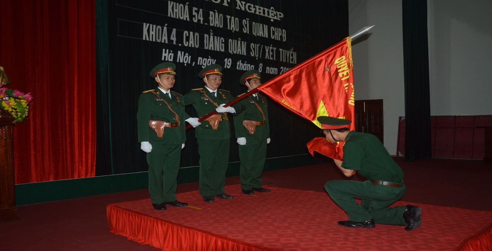
Hoạt động công tác đảng, công tác chính trị của Nhà trường đã góp phần giữ vững định hướng và ổn định chính trị, tư tưởng, tổ chức; công tác giáo dục chính trị, pháp luật, tuyên truyền cổ động, thi đua; xây dựng đời sống văn hoá tinh thần, môi trường văn hoá phong phú, lành mạnh có nhiều tiến bộ. Thường xuyên coi trọng xây dựng cấp uỷ, tổ chức cơ sở Đảng TSVM, gắn với xây dựng đơn vị VMTD. Đẩy mạnh cuộc vận động xây dựng chỉnh đốn Đảng, tạo được bước chuyển biến tiến bộ rõ rệt về năng lực lãnh đạo toàn diện, nhất là năng lực lãnh đạo thực hiện nhiệm vụ chính trị, sức chiến đầu của các tổ chức đảng và chất lượng đội ngũ cán bộ đảng viên. Đại hội Đảng bộ Nhà trường lần thứ XX, nhiệm kỳ 2015-2020 diễn ra từ ngày 24 đến 26 ngày 6 năm 2015, với 160 đại biểu thay mặt cho 834 đảng viên trong Đảng bộ Nhà trường. Đại hội bầu Ban chấp hành Đảng bộ gồm 15 đồng chí, Ban Thường vụ gồm 05 đồng chí, Đồng chí Đại tá Trần Văn Lý - Chính uỷ Nhà trường được bầu làm Bí thư Đảng uỷ. Bên cạnh đó, Nhà trường tham gia nhiều hội thi được giải, nhiều tập thể và cá nhân được tặng thưởng, tiêu biểu là: Đạt giải Ba “Hội thi Ôlimpic các môn khoa học Mác-Lênin, tư tưởng Hồ chí Minh” toàn quân (năm 2004 và năm 2012), được Tổng cục Chính trị tặng Bằng khen; tặng cờ đơn vị đạt giải Nhất hội thi “Quân đội với nhiệm vụ bảo vệ môi trường” năm 2002. Bộ Tư lệnh Pháo binh tặng cờ đơn vị đạt giải Xuất sắc“Liên hoan tiếng hát công nhân viên chức lao động quốc phòng”; tặng giải Nhất cuộc thi tìm hiểu “Âm vang Điện Biên” năm 2003; tặng cờ đơn vị đạt giải Nhì hội thi “Cán bộ chiến sĩ làm công tác dân vận giỏi” năm 2004.
Trong giai đoạn này, Nhà trường đặc biệt quan tâm chú trọng bồi dưỡng đội ngũ nhà giáo đáp ứng yêu cầu nhiệm vụ giáo dục - đào tạo trong tình hình mới. Nhà trường đã cử giáo viên luân phiên nhau đi hoàn thiện đại học; đi đào tạo cán bộ cấp trung đoàn và đưa cán bộ giảng viên đi đào tạo cao học và nghiên cứu sinh tại các học viện trong và ngoài Quân đội. Năm 1995 đã nâng tỉ lệ cán bộ, giảng viên Nhà trường có trình độ đại học và tương đương lên 47%. Năm 1997, có 19,09% trình độ đại học, 1,4% sau đại học lên 62% trình độ đại học, 5,58% sau đại học vào năm 2002. Năm 2003, Nhà trường có những tiến sĩ đầu tiên. Năm 2005, tỷ lệ giáo viên có trình độ đại học của Nhà trường đã nâng lên 92,43%, trong đó sau đại học là 13,24% (có 0,7% tiến sĩ). Đến tháng 2/2010, có 100% giáo viên có trình độ đại học, sau đại học chiếm 30% (có 4% tiến sĩ). Đặc biệt, ngày 28 tháng 12 năm 2007, đồng chí Đại tá, Tiến sĩ Trần Quyết Tiến - Hiệu trưởng Nhà trường đã được công nhận chức danh Phó Giáo sư. Ngày 17/11/2008, đồng chí Thượng tá Vũ Ký Vệ - Trưởng ban Nghiên cứu khoa học của Nhà trường được phong tặng danh hiệu “Nhà giáo Ưu tú” nâng số lượng đội ngũ “Nhà giáo Ưu tú” của Nhà trường là 07 đồng chí. Ngày 09/11/2010, đồng chí Đại tá, Tiến sĩ Nguyễn Du - Phó Hiệu trưởng Đào tạo Nhà trường đã được công nhận chức danh Phó giáo sư. Ngày 16/7/2010, đồng chí Đại tá, Tiến sĩ, Phó Giáo sư Trần Quyết Tiến - Hiệu trưởng Nhà trường được thăng quân hàm từ Đại tá lên Thiếu tướng. Tháng 11/2015, đồng chí Đại tá, Tiến sĩ Ngô Văn Tầm, Phó Hiệu trưởng đào tạo và đồng chí Đại tá, Tiến sĩ Vũ Ký Vệ, Trưởng Phòng Khoa học Quân sự Binh chủng Pháo binh được công nhận chức danh Phó giáo sư.
Công tác nghiên cứu khoa học, cải tiến mô hình học cụ của Nhà trường được đẩy mạnh, phát triển đúng hướng, thiết thực. Trong giai đoạn này, Nhà trường đã có nhiều đề tài, sáng kiến khoa học cấp Bộ Quốc phòng, Binh chủng và Nhà trường. Đặc biệt, năm 1992 Nhà trường triển khai đề tài “Thiết bị hệ thống mô phỏng vũ khí trang bị kỹ thuật Pháo binh” do Đại tá, Phó Hiệu trưởng Đinh Khắc Hiệu làm Chủ nhiệm, đã được các đơn vị trong Binh chủng và lực lượng pháo binh toàn quân sử dụng rộng rãi với tính hiệu quả và giá trị tiết kiệm kinh tế trong huấn luyện; công trình “Tổng kết công tác Hậu cần Trường Sĩ quan Pháo binh giai đoạn 1957 – 1975”, “Ứng dụng công nghệ thông tin mô phỏng 3D thiết bị hãm lùi đẩy lên pháo rãnh xoắn”. Sáng kiến “Ứng dụng công nghệ thông tin trong huấn luyện địa hình quân sự ở Trường Sĩ quan Pháo binh”, “Lịch sử Trường sĩ quan Pháo binh 60 năm (1957 - 2017)”. Công tác biên soạn giáo trình, tài liệu được đẩy mạnh như: Từ điển pháo binh; nhiều tài liệu dùng riêng cho học viên bạn Lào và Campuchia... Xây dựng và đưa vào sử dụng 2 phần mềm mô phỏng dạy học các môn Bắn - Chỉ huy bắn và Đạn - Ngòi - Liều Pháo binh. Nối mạng Internet phục vụ cho công tác giáo dục, đào tạo, thông tin khoa học quân sự và tuyển sinh quân sự.
Công tác hậu cần, kỹ thuật của Nhà trường trong giai đoạn này có nhiều tiến bộ, bảo đảm phục vụ tốt nhiệm vụ chính trị trung tâm, góp phần nâng cao chất lượng huấn luyện, bảo đảm đời sống bộ đội. Kết quả, hiệu quả tăng gia sản xuất và khám chữa bệnh đạt nhiều thành tích. Công tác kỹ thuật đã hoàn thành tốt nhiệm vụ bảo đảm xe, pháo, khí tài, vũ khí, trang bị phục vụ nhiệm vụ huấn luyện, giáo dục, đào tạo; thường xuyên thực hiện tốt cuộc vận động “Quản lý, khai thác vũ khí trang bị kỹ thuật tốt, bền, an toàn tiết kiệm và an toàn giao thông”. Công tác bảo dưỡng, sửa chữa, phát huy sáng kiến cải tiến kỹ thuật luôn được đẩy mạnh. Có nhiều sáng kiến cấp Trường và Binh chủng có giá trị được áp dụng vào thực tế huấn luyện và sẵn sàng chiến đấu.
3. Xây dựng Nhà trường vững mạnh toàn diện “Mẫu mực, tiêu biểu”, giai đoạn 2017 - 2022
Trong giai đoạn 2017 - 2022, nhiệm vụ chính trị của Nhà trường tập trung nâng cao chất lượng giáo dục - đào tạo, nghiên cứu khoa học và xây dựng đơn vị chính quy, vững mạnh toàn diện “Mẫu mực tiêu biểu”. Từ cuối năm 2019, trong điều kiện dịch COVID-19 diễn biến phức tạp, nguy hiểm trên thế giới và trong nước, Nhà trường đã điều chỉnh phương án tổ chức dạy học để bảo đảm vừa huấn luyện, giáo dục - đào tạo, vừa phòng chống dịch hiệu quả. Hoạt động dạy, học điều chỉnh linh hoạt, bảo đảm giãn cách, các quy định an toàn về phòng, chống dịch, vừa bảo đảm chất lượng đào tạo cho các đối tượng học viên, tốt nghiệp ra trường theo đúng kế hoạch. Năm 2020, Nhà trường tiếp nhận, tổ chức cách ly 200 công dân trở về từ các nước có dịch bảo đảm an toàn tuyệt đối, để lại ấn tượng tốt đẹp trong lòng nhân dân.
Từ ngày 30 tháng 6 năm 2020 đến ngày 02 tháng 7 năm 2020, Đại hội Đại biểu Đảng bộ Nhà trường lần thứ XXI nhiệm kỳ 2020 - 2025 diễn ra. Chủ đề Đại hội: Đoàn kết, dân chủ, trí tuệ, phát triển. Tham dự Đại hội có 160 đại biểu thay mặt cho 877 đảng viên trong toàn Đảng bộ. Đại hội bầu Ban chấp hành Đảng bộ nhiệm kỳ 2020 - 2025 là 15 đồng chí, bầu Ban Thường vụ gồm 5 đồng chí, bầu đoàn đại biểu dự Đại hội Đảng bộ Binh chủng Pháo binh lần thứ XIII gồm 47 đồng chí, đồng chí Đại tá Trần Thu Truyền được bầu làm Bí thư Đảng ủy Nhà trường. Đại hội đề ra phương hướng, mục tiêu chung là: Quán triệt, triển khai thực hiện nghiêm túc,có hiệu quả các nghị quyết, chỉ thị của Đảng, Nhà nước, Quân ủy Trung ương, Bộ Quốc phòng và của Binh chủng toàn diện trên các mặt công tác. Trọng tâm lãnh đạo, chỉ đạo xây dựng Nhà trường thông minh,đáp ứng yêu cầu cuộc cách mạng 4.0; nâng cao chất lượng giáo dục - đào tạo, nghiên cứu khoa học; đẩy mạnh đổi mới chương trình, phương pháp dạy và học theo hướng phát triển năng lực người học. Tập trung lãnh đạo, chỉ đạo 03 nội dung đột phá: Nâng cao chất lượng dạy, học ngoại ngữ, huấn luyện các môn quân sự chung; nâng cao chất lượng nắm, quản lý, giải quyết tư tưởng và nâng cao chất lượng xây dựng chính quy, rèn luyện kỷ luật. Tiếp tục thực hiện có hiệu quả NQTW4 Khóa XI, XII gắn với đẩy mạnh học tập và làm theo tư tưởng, đạo đức, phong cách Hồ Chí Minh và Cuộc vận động “Phát huy truyền thống, cống hiến tài năng, xứng danh Bộ đội Cụ Hồ” thời kỳ mới; xây dựng Đảng bộ Nhà trường vững mạnh về chính trị, tư tưởng, tổ chức và đạo đức, có năng lực lãnh đạo và sức chiến đấu cao, lãnh đạo xây dựng Nhà trường VMTD, hoàn thành tốt nhiệm vụ được giao.
Giai đoạn này, Nhà trường tiếp nhận đào tạo, bồi dưỡng 26 đối tượng, 119 lượt khóa với 6.123 học viên, trong đó có 91 khóa, 4.535 học viên tốt nghiệp, tỷ lệ khá, giỏi đạt 89,6%. Nhà trường tổ chức triển khai thực hiện nội dung, chương trình đào tạo cho các đối tượng phù hợp với mục tiêu, yêu cầu đào tạo, sát thực tế, tăng thời gian huấn luyện thực hành, luyện tập ban đêm, nâng cao chất lượng đầu ra cho các đối tượng đào tạo. Đã xây dựng được 12 chương trình khung, 87 bộ chương trình, kế hoạch đào tạo cho các đối tượng trong toàn Trường. đã tiến hành tổng kết thực hiện Chiến lược phát triển giáo dục và đào tạo trong Quân đội giai đoạn 2011-2020 đúng kế hoạch, đạt chất lượng tốt. Xây dựng kế hoạch và triển khai Quy chế phối hợp với các đơn vị trong thực hiện phương châm: “Chất lượng đào tạo của nhà trường là khả năng sẵn sàng chiến đấu của đơn vị”sát với đặc điểm tình hình, yêu cầu nhiệm vụ của Nhà trường. Tháng 6/2018, Bộ Tổng Tham mưu kiểm tra toàn diện Nhà trường. Qua kiểm tra, Nhà trường được đánh giá duy trì các mặt công tác có nền nếp, đạt chất lượng tốt, kết quả đạt điểm giỏi. Từ năm 2019, thực hiện chỉ đạo của Binh chủng Pháo binh, Nhà trường tổ chức diễn tập chiến thuật có bắn đạn thật cho các khóa học viên tại Trường bắn TB1 với nhiều loại pháo (chiến dịch, chiến thuật, pháo đi cùng). Đây là sự đổi mới mạnh mẽ, quyết liệt trong công tác Giáo dục - Đào tạo, đảm bảo học viên tốt nghiệp ra trường được tiếp cận, thực hành bắn đạn thật với các loại pháo có trong biên chế. Kết quả các cuộc diễn tập có bắn đạn thật đều đạt Khá, an toàn tuyệt đối về người và vũ khí trang bị.
Hoạt động hội thi, hội thao của Nhà trường thường xuyên được tổ chức, nhằm bồi dưỡng, rèn luyện bản lĩnh, năng lực cho cán bộ, học viên. Năm 2019, đội tuyển thủ của Nhà trường tham gia Hội thi “Cán bộ đại đội huấn luyện giỏi và cán bộ trung đội, đại đội, tiểu đoàn huấn luyện điều lệnh giỏi” Lực lượng Pháo binh - tên lửa dự bị, có 6/6 đồng chí tham gia thi đạt giỏi. Năm 2018, 2021, đội tuyển của Nhà trường tham gia Hội thi Olimpic các môn khoa học Mác-Lênin, tư tưởng Hồ Chí Minh, nhận thức chính trị-xã hội cấp toàn quân lần thứ VIII, IX, đã hoàn thành tốt các phần thi và đạt giải Ba toàn quân, được Tổng Cục Chính trị tặng cờ. Năm 2019, tham gia thi Olympic tiếng Anh lần thứ hai toàn quân đạt xuất sắc nội dung hùng biện.
Năm học 2020-2021, thực hiện Quyết định 3130/QĐ-BQP ngày 13/10/2020 của Bộ trưởng Bộ Quốc phòng về việc thực hiện nhiệm vụ đào tạo giai đoạn 1. Theo đó, Nhà trường được giao nhiệm vụ đào tạo sĩ quan chỉ huy phân đội giai đoạn 1 (trước đây đào tạo tại Trường Sĩ quan Lục quân 1 với thời gian 6 tháng). Nhà trường đã nhanh chóng triển khai xây dựng nội dung, chương trình, tích cực làm tốt mọi công tác chuẩn bị và tổ chức đào tạo giai đoạn 1 cho Khóa 62-CHPĐ đúng kế hoạch, an toàn, kết quả đạt Khá.
Bước sang giai đoạn phát triển mới, Nhà trường đã chủ động xây dựng kế hoạch, quy hoạch đội ngũ nhà giáo, cán bộ quản lý giáo dục chất lượng cao bằng nhiều chủ trương, biện pháp đồng bộ nhằm từng bước chuẩn hóa đội ngũ nhà giáo. Tiếp tục cử cán bộ, giảng viên đi đào tạo, đi thực tế, tham gia các lớp tập huấn, bồi dưỡng chuyên môn nghiệp vụ, nghiệp vụ sư phạm, công nghệ thông tin, ngoại ngữ đáp ứng yêu cầu ngày càng cao của công tác giáo dục đào tạo. Các khoa giảng viên đã thường xuyên duy trì có nền nếp hoạt động phương pháp; tích cực đổi mới phương pháp trong giảng dạy; trong đó chú trọng phương pháp dạy học tích cực, lấy người học làm trung tâm, ứng dụng công nghệ thông tin trong dạy học; tổ chức chuẩn bị bài giảng, kế hoạch giảng bài và thông qua bài giảng theo đúng quy định; chú trọng công tác kiểm tra, dự giảng của chỉ huy các cấp. Hằng năm, Nhà trường tổ chức các lớp bồi dưỡng tiếng Anh cho đội ngũ cán bộ, giảng viên của Nhà trường (năm 2019 tổ chức học và thi cấp chứng chỉ khung Châu Âu cho 02 lớp tiếng Anh trình độ B1, A2 cho cán bộ, giảng viên với quân số 39 đồng chí). Phong trào thi giảng viên giỏi, cán bộ quản lý tốt được duy trì chặt chẽ, có nền nếp trở thành phong trào sôi nổi ở các cấp, số lượng giáo viên, cán bộ quản lý đăng ký tham gia hội thi cấp Nhà trường tăng nhanh. Đến đầu năm 2022, 417/422 cán bộ, giảng viên có trình độ đại học trở lên (98,82%); 141/422 có trình độ sau đại học chiếm 33,4% (tiến sĩ 19 đồng chí, thạc sỹ 122 đồng chí); có 30 đồng chí đạt danh hiệu nhà giáo giỏi cấp Bộ Quốc phòng; 197 đồng chí đạt danh hiệu giảng viên giỏi, cán bộ quản lý tốt cấp cơ sở; 285 đồng chí đạt danh hiệu giảng viên giỏi cấp khoa.
Công tác khảo thí và đảm bảo chất lượng giáo dục đào tạo được triển khai đúng quy định, hướng dẫn của trên. Năm 2019, Nhà trường đã thực hiện tự đánh giá và phục vụ Đoàn kiểm định chất lượng giáo dục của Bộ Tổng Tham mưu về kiểm định chất lượng giáo dục Trường. Qua kiểm định, Bộ Tổng Tham mưu kết luận Nhà trường đạt chuẩn theo Thông tư số 12/2017/TT-BGDĐT ngày 19 tháng 5 năm 2017 của Bộ Giáo dục và Đào tạo.
Công tác nghiên cứu khoa học của Nhà trường được triển khai toàn diện trên các lĩnh vực: Khoa học xã hội và nhân văn quân sự, khoa học nghệ thuật quân sự, khoa học kỹ thuật quân sự. Nhiều đề tài, chuyên đề, sáng kiến cải tiến được nghiên cứu và áp dụng đã mang lại hiệu quả thiết thực. Trong 5 năm (2017 - 2022), Nhà trường đã triển khai thực hiện nhiều đề tài, chuyên đề, sáng kiến từ cấp cơ sở đến cấp ngành: thực hiện 19 đề tài cấp ngành do Cục Nhà trường/Bộ Tổng Tham mưu và Tổng cục Chính trị giao; thực hiện 13 đề tài cấp Binh chủng; hoàn thành 06 công trình tổng kết cấp Binh chủng; 03 công trình tổng kết; thực hiện 137 chuyên đề, sáng kiến, 08 phim huấn luyện cấp Nhà trường; thực hiện 1326 chuyên đề, sáng kiến cấp phòng, khoa, tiểu đoàn; nhân bản 05 bộ sáng kiến, với 10 sản phẩm; các đề tài, chuyên đề, sáng kiến được đánh giá đều đạt khá trở lên; 27 đề tài đạt xuất sắc; nhiều đề tài được Bộ Tổng Tham mưu, Tổng cục Chính trị và Binh chủng Pháo binh tặng Bằng khen, Giấy khen. Biên soạn 90 đầu tài liệu, in 48 đầu giáo trình và 18 đầu tập bài giảng; nhiều kết quả nghiên cứu, sáng kiến được ứng dụng vào giảng dạy, diễn tập và quản lý.
Ngày 06 tháng 11 năm 2020, thực hiện Quyết định số 3421/QĐ-BQP của Bộ Quốc phòng về việc tổ chức lại Trường Sĩ quan Pháo binh thuộc Bộ Tư lệnh Pháo binh, Tiểu đoàn 7 tách ra khỏi Nhà trường và thuộc biên chế Trung tâm Huấn luyện - Đào tạo trực thuộc Bộ Tư lệnh. Thực hiện Quyết định số 857/QĐ-TM ngày 09/11/2020 của Tổng Tham mưu trưởng về việc ban hành Biểu tổ chức biên chế Trường Sĩ quan Pháo binh, ngày 19/11/2020, thực hiện Quyết định số 1641/QĐ-BTL của Tư lệnh Pháo binh, Tiểu đoàn 10 thay đổi phiên hiệu thành Tiểu đoàn 5; Đại đội vận tải trực thuộc Phòng Kỹ thuật nay tách ra trực thuộc Phòng Hậu cần; Uỷ Ban kiểm tra Đảng trực thuộc Phòng Chính trị nay tách ra trực thuộc Đảng uỷ Nhà trường. Tổ chức, biên chế của Nhà trường bao gồm: Ban Giám hiệu, 5 phòng: Chính trị, Đào tạo, Tham mưu - Hành chính, Hậu cần, Kỹ thuật; 8 khoa giảng viên: Khoa học xã hội và nhân văn, Chiến thuật, Bắn pháo, Binh thao, Trinh sát, Quân sự chung, Khoa học cơ bản, Tên lửa và 5 tiểu đoàn quản lý học viên: Tiểu đoàn 1, Tiểu đoàn 2, Tiểu đoàn 3, Tiểu đoàn 4, Tiểu đoàn 5 và 3 Ban Trực thuộc: Ban Khoa học Quân sự, Ban Tài chính, Ban Khảo thí và đảm bảo chất lượng giáo dục - đào tạo.
Về công tác sẵn sàng chiến đấu, xây dựng chính quy, chấp hành kỷ luật và huấn luyện chiến đấu. Toàn Nhà trường đã thường xuyên giáo dục, quán triệt và tổ chức thực hiện tốt các nghị quyết, chỉ thị và quy định về xây dựng chính quy, rèn luyện kỷ luật; hoàn thành xây dựng các văn kiện, kế hoạch SSCĐ, bảo đảm đầy đủ lực lượng, vũ khí trang bị kỹ thuật cho các phân đội trực SSCĐ theo quy định. Duy trì nghiêm các chế độ ngày, tuần, tháng và các quy định của Quân đội, Binh chủng và Nhà trường, đơn vị đã có nhiều tiến bộ trong chấp hành kỷ luật Quân đội và pháp luật của Nhà nước. Toàn trường đoàn kết, thống nhất, có trách nhiệm với nhiệm vụ được giao, Nhà trường luôn được củng cố, sửa chữa, bổ sung cảnh quan môi trường sáng, xanh, sạch, đẹp, đơn vị an toàn.
Đối với công tác hậu cần, tài chính đã tập trung quán triệt và thực hiện nghiêm chỉ lệnh công tác Hậu cần của trên; đẩy mạnh tăng gia sản xuất, chăn nuôi; thực hiện tốt vệ sinh, an toàn thực phẩm; phòng chống không để xảy ra dịch bệnh. Triển khai thực hiện Quyết định số 1584/HC-TM ngày 17/8/2020 của Tổng cục Hậu cần và Hướng dẫn số 78/CĐ-CHC ngày 26/8/2020 của Cục Hậu cần về việc dừng thực hiện xã hội hóa công tác nuôi dưỡng bộ đội, Nhà trường đã tổ chức lại các bếp ăn ở tất cả các tiểu đoàn từ cuối năm 2020. Tích cực, chủ động, sáng tạo trong phát triển, chăm sóc vườn, giàn, chăn nuôi góp phần cải thiện đời sống và phục vụ cho các hoạt động chung của đơn vị; hoàn thành chỉ tiêu tăng gia theo quy định.
Từ năm 2017 - 2022, Nhà trường thường xuyên làm tốt công tác bảo đảm trang bị, bảo đảm kỹ thuật, vật chất phục vụ cho nhiệm vụ SSCĐ, dạy học thường xuyên, diễn tập chiến thuật vòng tổng hợp có bắn đạn thật cối 100mm; pháo 152Đ20, 130M46, BM-21, 105mm, 85Đ44, SPG-9 của các khóa học viên (đặc biệt đã chủ động được cơ bản VKTB phục vụ diễn tập); bảo đảm kỹ thuật cho Khóa 62-CHPĐ huấn luyện giai đoạn 1 đảm bảo an toàn; Thực hiện tốt nhiệm vụ kiểm tra toàn diện của Bộ Tư lệnh. Chú trọng nâng cao chất lượng công tác bồi dưỡng, tập huấn, bổ túc, đào tạo lái xe, thi nâng bậc thợ. Nhà trường đã sửa chữa nhỏ và sửa chữa vừa được 306 lượt/ 85 khẩu pháo rãnh xoắn, 39 lượt/14 khẩu pháo phản lực; sửa chữa lớn được 7 khẩu pháo rãnh xoắn, 2 xe chiến đấu BM - 21; bảo dưỡng 1 và 2 được 246 lượt/57 khẩu pháo rãnh xoắn, 48 lượt/18 khẩu pháo phản lực... xe chạy 1.340.200 km an toàn tuyệt đối; bảo dưỡng, sửa chữa vừa và nhỏ 750 lượt xe các loại; nổ máy xe 115 giờ. Tham gia các hội thao, hội thi ngành kỹ thuật đạt kết quả cao: năm 2018, tham gia Hội thi “Thợ sửa chữa ngành xe máy giỏi” toàn quân có một cá nhân đạt giải Nhì. Năm 2019, tham gia hội thi “Quản lý, khai thác VKTBKT tốt” lực lượng pháo binh dự bị năm 2019 đạt giải Nhì.
4. Nâng cao chất lượng giáo dục, đào tạo gắn với khả năng sẵn sàng chiến đấu của đơn vị; thực hiện chuyển đổi số, cải cách hành chính, xây dựng Nhà trường thông minh, vững mạnh toàn diện “Mẫu mực, tiêu biểu” (2023 - 2027)
Trong giai đoạn 2023 - 2027, Trường Sĩ quan Pháo binh thực hiện nhiệm vụ trong điều kiện tình hình thế giới, khu vực có nhiều diễn biến phức tạp; yêu cầu xây dựng Quân đội cách mạng, chính quy, tinh nhuệ, hiện đại đặt ra ngày càng cao; nhiệm vụ huấn luyện, sẵn sàng chiến đấu, giáo dục - đào tạo và xây dựng Nhà trường chính quy, hiện đại có bước phát triển mới. Yêu cầu đổi mới căn bản, toàn diện giáo dục và đào tạo, đẩy mạnh chuyển đổi số, phát triển khoa học, công nghệ và đổi mới sáng tạo xây dựng Nhà trường thông minh.
Bước vào giai đoạn 2023 - 2027, Ban Giám hiệu Nhà trường được kiện toàn về nhân sự. Tháng 7/2022, đồng chí Đại tá, PGS, Tiến sĩ Vũ Ký Vệ, Hiệu trưởng Nhà trường nghỉ chờ hưu; đồng chí Thượng tá, Tiến sĩ Kiều Hữu Kiên, Phó Hiệu trưởng được bổ nhiệm giữ chức Hiệu trưởng. Tháng 12/2022, đồng chí Đại tá Trần Đức Hùng nghỉ chờ hưu; đồng chí Thượng tá Dương Đình Hồng, chỉ huy trưởng Kho 380/BCPB được bổ nhiệm giữ chức Phó Hiệu trưởng Nhà trường. Tháng 3/2025, đồng chí Đại tá Bùi Bắc Bình, Chính ủy Nhà trường nhận quyết định nghỉ chờ hưu; đồng chí Đại tá Nguyễn Đức Hiền, Chủ nhiệm Chính trị được bổ nhiệm giữ chức Chính ủy Nhà trường.
Đại hội đại biểu Đảng bộ Trường Sĩ quan Pháo binh lần thứ XXII, nhiệm kỳ 2025 -2030 được tổ chức từ ngày 24 đến ngày 26 tháng 6 năm 2025, đây là dấu mốc quan trọng trong công tác xây dựng Đảng bộ và Nhà trường trong giai đoạn phát triển mới. Đại hội đã bầu Ban Chấp hành Đảng bộ Nhà trường nhiệm kỳ 2025 - 2030 gồm 15 đồng chí, Ban Thường vụ gồm 5 đồng chí, Ủy ban Kiểm tra Đảng ủy gồm 5 đồng chí. Đồng chí Nguyễn Đức Hiền được bầu làm Bí thư Đảng ủy Nhà trường. Đại hội bầu đoàn đại biểu gồm 46 đại biểu chính thức và 2 đại biểu dự khuyết, đại diện cho 1.090 đảng viên trong toàn Đảng bộ tham dự Đại hội đại biểu Đảng bộ Binh chủng lần thứ XV, nhiệm kỳ 2025 - 2030.
Trước yêu cầu phát triển mới, quán triệt sâu sắc các nghị quyết Đại hội Đảng các cấp nhiệm kỳ 2025-2030, chỉ thị của Đảng, Quân ủy Trung ương, Bộ Quốc phòng và của Thường vụ Đảng ủy Binh chủng (nay là Bộ Tư lệnh Pháo binh - Tên lửa), Đảng ủy, Ban Giám hiệu Nhà trường đã tập trung lãnh đạo, chỉ đạo toàn diện các mặt công tác; xác định giáo dục - đào tạo, nghiên cứu khoa học là nhiệm vụ trung tâm, xây dựng Đảng bộ trong sạch, vững mạnh là then chốt, xây dựng Nhà trường vững mạnh toàn diện “Mẫu mực, tiêu biểu” là nhiệm vụ xuyên suốt; đồng thời gắn chặt chất lượng đào tạo với yêu cầu xây dựng cơ quan, đơn vị, nâng cao khả năng sẵn sàng chiến đấu theo phương châm “Chất lượng đào tạo của Nhà trường là khả năng sẵn sàng chiến đấu của đơn vị”. Nhà trường đã cụ thể hóa trong nội dung, chương trình, phương pháp giáo dục - đào tạo, huấn luyện, thực tập và diễn tập của các đối tượng học viên.
Nhà trường thường xuyên chú trọng công tác giáo dục chính trị, tư tưởng, xây dựng bản lĩnh chính trị, ý thức trách nhiệm và tinh thần đoàn kết cho cán bộ, giảng viên, nhân viên và học viên. Các nghị quyết, chỉ thị của Trung ương, Quân ủy Trung ương, Bộ Quốc phòng, Bộ Tư lệnh và cấp ủy các cấp được tổ chức quán triệt nghiêm túc, kịp thời, gắn với nhiệm vụ cụ thể của từng cơ quan, khoa, đơn vị, qua đó tạo sự thống nhất về nhận thức và hành động, đưa nghị quyết của Đảng nhanh chóng đi vào thực tiễn công tác. Cùng với đó, khi thực hiện các chủ trương điều chỉnh, sắp xếp tổ chức, biên chế, Nhà trường quan tâm làm tốt công tác tư tưởng, trực tiếp nắm tình hình, tâm tư, nguyện vọng của cán bộ, quân nhân chuyên nghiệp, nhất là những bộ phận thuộc diện điều chuyển theo biểu biên chế mới; bảo đảm dân chủ, công khai, đúng nguyên tắc, góp phần giữ vững đoàn kết, thống nhất, giúp cán bộ, quân nhân chuyên nghiệp yên tâm công tác, sẵn sàng nhận và hoàn thành tốt nhiệm vụ trên cương vị mới.
Lễ tốt nghiệp của Học viên Khóa 54/Đào tạo Sĩ quan CHPĐ và Khóa 4/CĐQS
Nhà trường tập trung nâng cao chất lượng giáo dục - đào tạo, góp phần xây dựng nguồn nhân lực chất lượng cao cho Quân đội và Bộ Tư lệnh. Công tác tuyển sinh, quản lý đào tạo, tổ chức dạy học, kiểm tra, thi, thực tập, diễn tập và tốt nghiệp được triển khai đồng bộ, chặt chẽ, từng bước đổi mới theo hướng phát triển phẩm chất, năng lực người học, tăng cường khả năng vận dụng kiến thức vào thực tiễn công tác tại đơn vị. Trong giai đoạn này, Nhà trường tiếp tục duy trì và tổ chức đào tạo các đối tượng sĩ quan chỉ huy phân đội pháo binh trình độ đại học, văn bằng 2 và các chương trình đào tạo, bồi dưỡng, tập huấn theo nhiệm vụ được giao.
Nhà trường đặc biệt chú trọng gắn đào tạo lý thuyết với thực hành, thực tập và hoạt động huấn luyện sát thực tế đơn vị. Các khoá học viên được tổ chức thực tập cuối khóa tại các đơn vị Pháo binh khu vực phía Bắc tổ chức nghiêm túc, chặt chẽ, bảo đảm an toàn tuyệt đối; qua đó tạo điều kiện cho học viên vận dụng kiến thức đã học vào thực tiễn, nâng cao năng lực tổ chức chỉ huy, kỹ năng công tác, bản lĩnh và tác phong của người sĩ quan pháo binh tương lai. Thực hiện phương châm đào tạo gắn với thực tiễn chiến đấu, Nhà trường tiếp tục duy trì các cuộc diễn tập chiến thuật, diễn tập vòng tổng hợp, diễn tập có bắn đạn thật cho học viên: Khóa 62/CHPĐ, Khóa 5 CHPĐ/VB2, Khóa 63, 64/CHPĐ và Khóa 6 CHPĐ/VB2. Các nội dung diễn tập được triển khai nghiêm túc, chặt chẽ theo kế hoạch, kết quả bắn pháo đều đạt giỏi, chiến thuật khá, bảo đảm an toàn tuyệt đối. Qua đó, nâng cao năng lực chỉ huy, tham mưu, tổ chức hiệp đồng và khả năng xử trí tình huống sát với thực tiễn chiến đấu cho học viên, góp phần kiểm nghiệm thực chất chất lượng đào tạo của Nhà trường.
Công tác đối ngoại quốc phòng, đào tạo học viên quốc tế tiếp tục được duy trì và phát triển. Nhà trường tổ chức đào tạo và tập huấn cho các khoá học viên Quân đội nhân dân Lào và Quân đội Hoàng gia Campuchia với nội dung thiết thực, sát yêu cầu nhiệm vụ. Kết quả đào tạo tỷ lệ Khá, Giỏi đạt trên 80%. Các khóa tập huấn dành cho học viên Quân đội nhân dân Lào cũng đạt kết quả cao, trong đó Khóa 12 tập huấn Chỉ huy - Tham mưu có 100% học viên đạt loại Khá; Khóa 4 tập huấn kỹ thuật pháo binh có 10% học viên đạt loại Giỏi và 90% đạt loại Khá. Những kết quả trên khẳng định chất lượng giáo dục - đào tạo của Nhà trường, góp phần tăng cường mối quan hệ đoàn kết, hữu nghị, hợp tác giữa Quân đội nhân dân Việt Nam với Quân đội nhân dân Lào và Quân đội Hoàng gia Campuchia.
Nhà trường thường xuyên tổ chức tập huấn, bồi dưỡng chuyên môn, nghiệp vụ sư phạm, cập nhật kiến thức mới cho cán bộ, giảng viên. Năm 2024, Nhà trường tổ chức lớp bồi dưỡng nghiệp vụ sư phạm và cấp chứng chỉ cho đội ngũ cán bộ, giảng viên, có 70 cán bộ, giảng viên tham gia, hoàn thành đầy đủ các nội dung theo chương trình. Việc bồi dưỡng góp phần nâng cao năng lực sư phạm, phương pháp giảng dạy và đáp ứng yêu cầu chuẩn hóa đội ngũ nhà giáo trong tình hình mới. Hoạt động hội thi, hội thao, giao lưu, nghiên cứu thực tế tiếp tục được đẩy mạnh, góp phần phát hiện, bồi dưỡng nhân tố, nâng cao chất lượng huấn luyện và xây dựng đời sống văn hóa tinh thần. Năm 2024, 2026 đoàn cán bộ và học viên Nhà trường tổ chức nghiên cứu, học tập, thăm quần đảo Trường Sa và nhà giàn DK1 theo kế hoạch của Quân chủng Hải quân. Hoạt động thực tế góp phần giáo dục truyền thống yêu nước, ý thức trách nhiệm bảo vệ chủ quyền biển, đảo; đồng thời giúp cán bộ, học viên có thêm trải nghiệm thực tiễn, nâng cao nhận thức về nhiệm vụ xây dựng và bảo vệ Tổ quốc trong tình hình mới.
Phong trào thi giảng viên giỏi, cán bộ quản lý giáo dục được duy trì có nền nếp. Nhà trường tạo điều kiện để cán bộ, giảng viên tham gia các hội thi cấp trên, qua đó vừa đánh giá thực chất năng lực chuyên môn, phương pháp sư phạm, vừa tạo môi trường trao đổi, học tập kinh nghiệm. Năm 2024, đoàn của Nhà trường tham gia Hội thi giảng viên các học viện, trường đào tạo sĩ quan cấp phân đội do Bộ Tổng Tham mưu tổ chức gồm 5 giảng viên. Kết quả, đoàn đạt Giải Ba toàn đoàn và được Bộ Tổng Tham mưu tặng Bằng khen; đồng chí Trung tá Nguyễn Văn Kiên, giảng viên Khoa Chiến thuật đạt Giải Ba cá nhân và được tặng Bằng khen. Thành tích này góp phần khẳng định chất lượng đội ngũ giảng viên và kết quả đổi mới phương pháp giáo dục - đào tạo của Nhà trường. Cùng với đó, năm 2024, đội tuyển Nhà trường tham gia Hội thi Olympic các môn khoa học Mác - Lênin, tư tưởng Hồ Chí Minh và nhận thức chính trị - xã hội trong các nhà trường Quân đội lần thứ X, đạt Giải Khuyến khích, được Thủ trưởng Tổng cục Chính trị tặng Bằng khen. Tính đến tháng 9/2026, Nhà trường có 412/413 cán bộ, giảng viên đạt trình độ đại học trở lên, chiếm 99,76%; trong đó, có 205 đồng chí đạt trình độ sau đại học, chiếm 49,63% (tiến sĩ 30 đồng chí, thạc sĩ 185 đồng chí). Có 07 đồng chí đạt danh hiệu nhà giáo giỏi cấp Bộ Quốc phòng; 90 đồng chí đạt danh hiệu giảng viên giỏi, cán bộ quản lý tốt cấp cơ sở; 360 đồng chí đạt danh hiệu giảng viên giỏi cấp khoa.
Công tác khảo thí và bảo đảm chất lượng giáo dục - đào tạo tiếp tục được quan tâm, từng bước chuyển từ quản lý theo quy trình sang quản trị chất lượng và cải tiến liên tục. Nhà trường chú trọng tự đánh giá, rà soát chương trình, chuẩn đầu ra, phương pháp kiểm tra, đánh giá và các điều kiện bảo đảm chất lượng. Nhà trường đã thành lập Hội đồng tự đánh giá với 15 thành viên, Ban Thư ký gồm 9 thành viên và tổ chức thành 5 nhóm chuyên trách tạo cơ sở để triển khai tự đánh giá một cách hệ thống, khách quan, từng bước hình thành văn hóa chất lượng trong toàn Trường. Công tác tự đánh giá không chỉ phục vụ yêu cầu kiểm định mà còn giúp Nhà trường rà soát chương trình đào tạo, xác định những điểm mạnh, hạn chế và xây dựng các giải pháp cải tiến phù hợp. Cùng với đổi mới công tác bảo đảm chất lượng, công tác kiểm tra, đánh giá kết quả học tập từng bước được hiện đại hóa. Tháng 8/2023, Nhà trường lần đầu tổ chức thi kết thúc học phần Xe máy và Bảo dưỡng đối với 143 học viên Khóa 62 - Chỉ huy phân đội bằng hình thức trắc nghiệm trên máy tính. Việc triển khai hình thức thi mới đánh dấu bước chuyển quan trọng trong đổi mới công tác kiểm tra, đánh giá, ứng dụng công nghệ số vào giáo dục - đào tạo, tạo tiền đề để từng bước mở rộng ứng dụng công nghệ thông tin trong khảo thí, nâng cao tính khách quan, chính xác, nhanh chóng và hiệu quả của công tác đánh giá người học.
Nhà trường thường xuyên coi trọng phát triển khoa học và công nghệ, chuyển đổi số, nghiên cứu khoa học quân sự phục vụ nhiệm vụ huấn luyện, giáo dục - đào tạo và xây dựng Quân đội, Bộ Tư lệnh. Các đề tài, sáng kiến, chuyên đề đã đi vào chiều sâu, giải quyết những vấn đề cấp thiết, phục vụ trực tiếp cho công tác giảng dạy, huấn luyện, khai thác vũ khí trang bị, bảo đảm kỹ thuật và chuyển đổi số. Nhiều đề tài có giá trị phục vụ tốt giáo dục - đào tạo, huấn luyện, chiến đấu, khẳng định năng lực sáng tạo chuyên môn, khả năng làm chủ vũ khí trang bị của cán bộ, giảng viên Nhà trường trong tình hình mới.
Bên cạnh đó, Nhà trường từng bước triển khai các giải pháp ứng dụng công nghệ thông tin trong quản lý, chỉ huy, điều hành, giáo dục - đào tạo, khảo thí và bảo đảm chất lượng. Hệ thống mạng, văn bản điện tử, chứng thư số, chữ ký số, quản lý văn bản và điều hành từng bước được triển khai đồng bộ nâng cao hiệu quả xử lý công việc, rút ngắn thời gian, bảo đảm an toàn trong gửi, nhận văn bản. Tiếp tục triển khai các nội dung cải cách hành chính gắn với chuyển đổi số trong chỉ huy, điều hành. Năm 2025, Nhà trường thực hiện làm điểm cho Bộ Tư lệnh về phong trào “Bình dân học vụ số”, phổ cập kiến thức cơ bản về chuyển đổi số, kỹ năng số cho cán bộ, học viên, hạ sĩ quan - binh sĩ; nâng cao nhận thức, trách nhiệm và khả năng ứng dụng công nghệ số, trí tuệ nhân tạo vào thực hiện nhiệm vụ được triển khai hiệu quả. Các hoạt động này tạo cơ sở để Nhà trường tiếp tục hoàn thiện các thành tố của Nhà trường thông minh, đồng thời từng bước thay đổi phương thức quản lý, điều hành và tổ chức giáo dục - đào tạo. Trong quá trình chuyển đổi số, phát triển đồng bộ cả hạ tầng, con người, dữ liệu và phương thức quản trị. Việc xây dựng kiến trúc Nhà trường thông minh, nâng cao năng lực số cho đội ngũ nhà giáo và cán bộ quản lý giáo dục, tăng cường ứng dụng trí tuệ nhân tạo trong giảng dạy, nâng cao tốc độ đường truyền, mở rộng số lượng máy tính kết nối mạng, số hóa hồ sơ tuyển sinh và rà soát các quy trình giải quyết công việc nội bộ được xác định là những hướng đi quan trọng trong thời gian tiếp theo. Qua đó, chuyển đổi số góp phần thúc đẩy cải cách hành chính, nâng cao hiệu quả quản trị và hỗ trợ trực tiếp cho đổi mới giáo dục - đào tạo.
Công tác sẵn sàng chiến đấu, huấn luyện chiến đấu và xây dựng chính quy, rèn luyện kỷ luật tiếp tục được duy trì nghiêm túc. Nhà trường thường xuyên rà soát, bổ sung hệ thống văn kiện, kế hoạch SSCĐ; tổ chức lực lượng trực theo quy định; duy trì nghiêm các chế độ trực, tuần tra, canh phòng và các quy định bảo đảm an toàn. Huấn luyện quân sự chung, huấn luyện chuyên ngành, thực hành trên vũ khí trang bị, luyện tập xử trí tình huống và diễn tập được tổ chức theo hướng sát thực tế chiến đấu. Xây dựng kế hoạch tác chiến “Vòm phòng không bền vững”, tổ chức huấn luyện, luyện tập các phương án bảo vệ Nhà trường khi có tình huống xảy ra trên không. Việc xây dựng phương án sẵn sàng chiến đấu A, A2, A3, A4 và tổ chức luyện tập góp phần nâng cao nhận thức, trách nhiệm, khả năng xử trí tình huống và sẵn sàng chiến đấu của các lực lượng, gắn giáo dục - đào tạo với thực tiễn xây dựng, bảo vệ đơn vị.
Công tác xây dựng chính quy, rèn luyện kỷ luật được thực hiện thường xuyên, gắn với xây dựng môi trường văn hóa quân sự, ý thức trách nhiệm và tác phong công tác. Các cơ quan, khoa, đơn vị duy trì nghiêm chế độ ngày, tuần, tháng; chấp hành điều lệnh, điều lệ, quy định của Quân đội và Nhà trường; tăng cường quản lý quân số, quản lý tư tưởng, quản lý các mối quan hệ xã hội và sử dụng phương tiện, trang thiết bị. Việc xây dựng cảnh quan môi trường được kết hợp với xây dựng đơn vị chính quy, xanh, sạch, đẹp, an toàn, Nhà trường đã đưa Tiểu đoàn 3, nhà công vụ C2 xây dựng mới vào sử dụng tạo môi trường thuận lợi để cán bộ, giảng viên, học viên học tập, công tác và rèn luyện.
Thực hiện Quyết định số 69/QĐ-BCPB ngày 20 tháng 12 năm 2023 của Tư lệnh Binh chủng Pháo binh, Nhà trường sáp nhập Phòng Hậu cần và Phòng Kỹ thuật thành Phòng Hậu cần - Kỹ thuật thuộc Trường Sĩ quan Pháo binh. Công tác Hậu cần - kỹ thuật được triển khai chủ động, thiết thực, bảo đảm đời sống bộ đội và phục vụ nhiệm vụ giáo dục - đào tạo, huấn luyện, SSCĐ. Phong trào tăng gia sản xuất được duy trì với nhiều hình thức phù hợp. Trong các năm 2023, 2024, 2025, 2026, các hội thi tăng gia sản xuất, nuôi dưỡng bộ đội được tổ chức chặt chẽ, góp phần nâng cao chất lượng công tác hậu cần và thúc đẩy phong trào thi đua trong toàn Trường.
Nhà trường thường xuyên bảo đảm trang bị, kỹ thuật và vật chất phục vụ nhiệm vụ giáo dục, đào tạo, SSCĐ và diễn tập chiến thuật có bắn đạn thật (3 đợt/năm) cho các khóa học viên, sử dụng nhiều loại pháo như: cối 100mm, pháo 152Đ20, 130M46, BM-14, 105mm, 85Đ44, SPG-9. Công tác bảo đảm kỹ thuật cho Khóa 64, 65, 66, 67-CHPĐ huấn luyện năm thứ nhất được thực hiện chặt chẽ, bảo đảm an toàn. Chất lượng bồi dưỡng, tập huấn, bổ túc, đào tạo lái xe, kiểm tra kỹ năng nghề cho đội ngũ nhân viên chuyên môn kỹ thuật, bảo đảm tốt vũ khí trang bị kỹ thuật được tiến hành có nền nếp. Từ năm 2023 đến 2026, Nhà trường đã sửa chữa nhỏ/vừa được 135/84 lượt pháo rãnh xoắn, 23/19 lượt pháo phản lực, 172/93 lượt cối và ĐKZ, 833/278 lượt súng bộ binh, 678/388 lượt khí tài quang học, 209/8 lượt xe. Sửa chữa lớn được 18 khẩu pháo rãnh xoắn, 5 pháo phản lực, 150 súng bộ binh, 320 khí tài quang học, 14 lượt xe. Bảo dưỡng 1 và 2 được 109/51 lượt pháo rãnh xoắn, 17/14 lượt pháo phản lực, 122/60 lượt cối và ĐKZ, 1091/738 lượt súng bộ binh, 1359/566 lượt khí tài quang học, 486/105 lượt ô tô, xe xích. Xe chạy 951.000 km an toàn tuyệt đối; nổ máy xe 6.215 giờ; kiểm định 415 lượt xe quân sự. Nhà trường tham gia tăng cường xe phục vụ kỷ niệm Chiến thắng Điện Biên Phủ, kỷ niệm 50 năm giải phóng miền Nam, thống nhất đất nước và 80 năm Quốc khánh nước CHXHCN Việt Nam; tham gia trưng bày, triển lãm quốc phòng hằng năm, Đại hội Đảng bộ Quân đội nhiệm kỳ 2025 - 2030 và triển lãm 80 năm thành tựu đất nước. Tham gia các hội thao, hội thi đạt kết quả cao: năm 2023, tham gia “Hội thi thợ sửa chữa VKTB toàn quân” đạt giải Nhất; năm 2026, tham gia “Hội thi trợ lý, thủ kho quân khí giỏi toàn quân” đạt giải Nhì.
Trong giai đoạn 2023 - 2027, Nhà trường tiếp tục đổi mới, phát triển, đáp ứng yêu cầu xây dựng Quân đội, Bộ Tư lệnh trong tình hình mới. Chất lượng giáo dục - đào tạo được giữ vững; các hình thức thực tập, diễn tập, bắn đạn thật được tổ chức sát thực tế; công tác khảo thí, kiểm tra, đánh giá từng bước ứng dụng công nghệ số; công tác bảo đảm chất lượng giáo dục được chú trọng. Đội ngũ nhà giáo tiếp tục được chuẩn hóa; nghiên cứu khoa học, sáng kiến và ứng dụng khoa học, công nghệ được đẩy mạnh. Công tác hậu cần, kỹ thuật bảo đảm kịp thời, đồng bộ; cơ sở vật chất, trang bị được quản lý, khai thác hiệu quả. Công tác xây dựng chính quy, rèn luyện kỷ luật có chuyển biến tích cực; các chế độ, quy định được duy trì nghiêm, góp phần xây dựng Nhà trường chính quy, an toàn, vững mạnh.
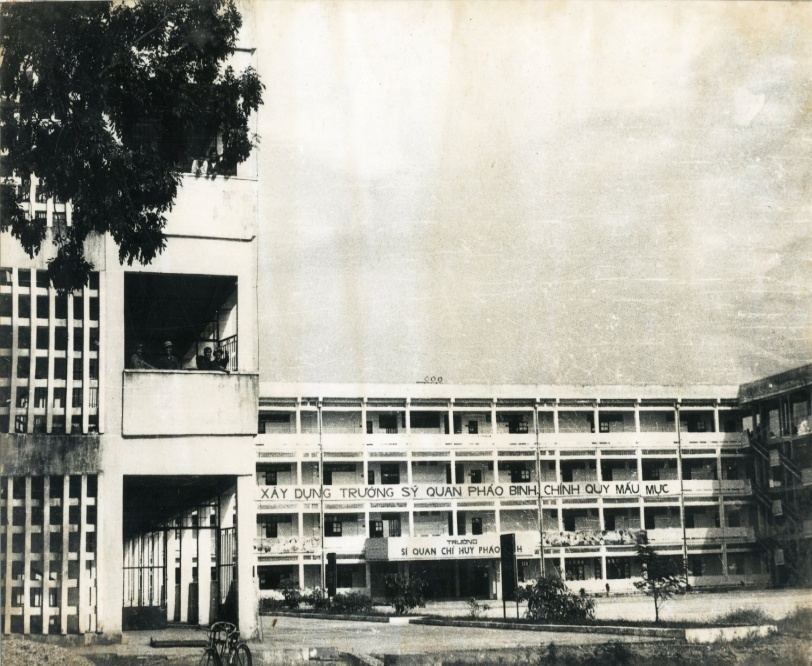 |
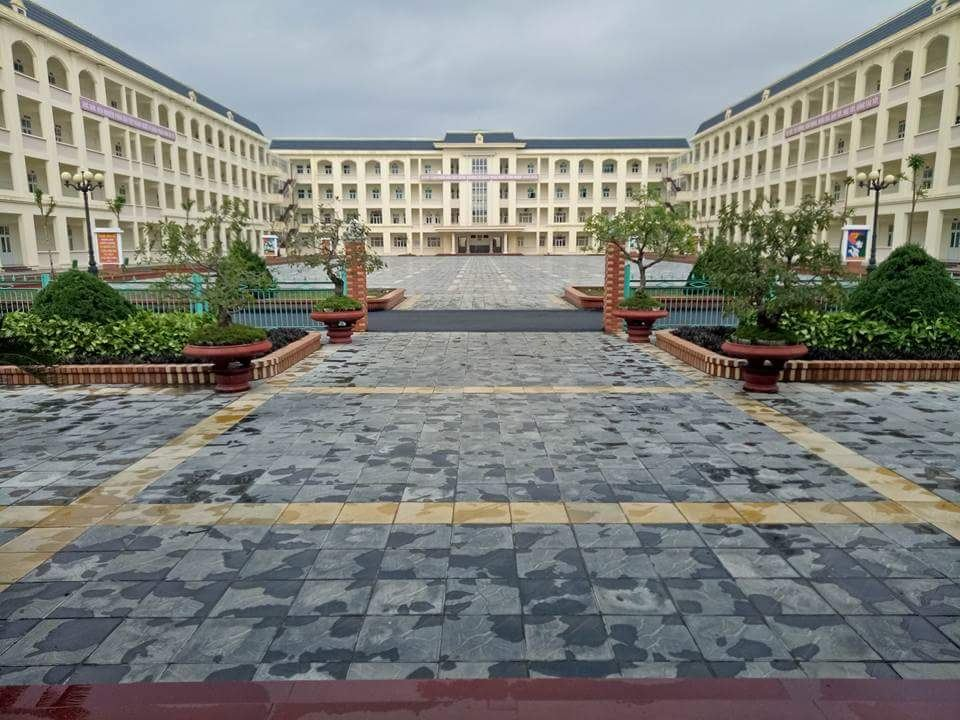 |
|---|
Giảng đường Trường Sĩ quan Pháo binh
Câu 3 Từ ngày thành lập đến nay, Đảng bộ Nhà trường đã qua bao nhiêu kỳ Đại hội? Đại hội Đảng bộ gần nhất diễn ra vào ngày, tháng, năm nào? Chủ đề của Đại hội là gì? Có bao nhiêu đại biểu đại diện cho bao nhiêu tổ chức đảng tham dự Đại hội? Đại hội bầu Ban chấp hành gồm mấy đồng chí? Đồng chí nào được bầu làm Bí thư, Phó Bí thư và ủy viên Ban Thường vụ?
Trả lời:
Từ khi thành lập đến nay, Đảng bộ Nhà trường đã tiến hành 22 lần Đại hội Đảng bộ Nhà trường. Đại hội đại biểu Đảng bộ Trường Sĩ quan Pháo binh lần thứ XXII, nhiệm kỳ 2025 -2030 được tổ chức từ ngày 24 đến ngày 26 tháng 6 năm 2025, đây là dấu mốc quan trọng trong công tác xây dựng Đảng bộ và Nhà trường trong giai đoạn phát triển mới. Với chủ đề “ Đoàn kết, dân chủ, đổi mới, kỷ cương, phát triển” Đại hội đã bầu Ban Chấp hành Đảng bộ Nhà trường nhiệm kỳ 2025 - 2030 gồm 15 đồng chí, Ban Thường vụ gồm 5 đồng chí, Ủy ban Kiểm tra Đảng ủy gồm 5 đồng chí. Đồng chí Nguyễn Đức Hiền được bầu làm Bí thư Đảng ủy Nhà trường. Đại hội bầu đoàn đại biểu gồm 46 đại biểu chính thức và 2 đại biểu dự khuyết, đại diện cho 1.090 đảng viên trong toàn Đảng bộ tham dự Đại hội đại biểu Đảng bộ Binh chủng lần thứ XV, nhiệm kỳ 2025-2030.
Trước yêu cầu phát triển mới, quán triệt sâu sắc các nghị quyết Đại hội Đảng các cấp nhiệm kỳ 2025-2030, chỉ thị của Đảng, Quân ủy Trung ương, Bộ Quốc phòng và của Thường vụ Đảng ủy Binh chủng (nay là Bộ Tư lệnh Pháo binh-Tên lửa), Đảng ủy, Ban Giám hiệu Nhà trường đã tập trung lãnh đạo, chỉ đạo toàn diện các mặt công tác; xác định giáo dục - đào tạo, nghiên cứu khoa học là nhiệm vụ trung tâm, xây dựng Đảng bộ trong sạch, vững mạnh là then chốt, xây dựng Nhà trường vững mạnh toàn diện “Mẫu mực, tiêu biểu” là nhiệm vụ xuyên suốt; đồng thời gắn chặt chất lượng đào tạo với yêu cầu xây dựng cơ quan, đơn vị, nâng cao khả năng sẵn sàng chiến đấu theo phương châm “Chất lượng đào tạo của Nhà trường là khả năng sẵn sàng chiến đấu của đơn vị”. Nhà trường đã cụ thể hóa trong nội dung, chương trình, phương pháp giáo dục - đào tạo, huấn luyện, thực tập và diễn tập của các đối tượng học viên.
Đảng ủy Nhà trường nhiệm kỳ 2025-2030 gồm 15 đồng chí:
1.Đồng chí: Kiều Hữu Kiên
2. Đồng chí: Nguyễ Đức Hiền
3. Đồng chí: Phạm Văn Tuấn
4. Đồng chí: Phạm Quang Tạo
5. Đồng chí: Dương Đình Hồng
6. Đồng chí: Phạm Văn Hiển
7. Đồng chí: Chu Văn Hùng
8. Đồng chí: Phạm Minh Thăng
9. Đồng chí: Cấn Đình Hải Minh
10. Đồng chí: Đoàn Văn Tâm
11. Đồng chí: Nguyễn Trí Quang
12. Đồng chí: Dương Xuân Thể
13. Đồng chí: Trịnh Văn Cừ
14. Đồng chí Đoàn Anh Tuấn
15. Đồng chí: Trịnh Đình Thanh
Ban Thường vụ Đảng ủy Nhà trường gồm 05 đồng chí
Đồng chí: Nguyễn Đức Hiền
Đồng chí: Kiều Hữu Kiên
Đồng chí: Phạm Văn Tuấn
Đồng chí: Phạm Quang Tạo
Đồng chí: Phạm Văn Hiển
Ủy ban kiểm tra Đảng ủy Nhà trường gồm 05 đồng chí:
Đồng chí: Phạm Văn Tuấn
Đồng chí: Chu Văn Hùng
Đồng chí: Cấn Đình Hải Minh
Đồng chí: Lê Mạnh Chiến
Đồng chí: Đỗ Minh Dũng
| ảnh các đông chí trong BCH Đảng bộ NT | Ảnh các đông chí thường vụ |
|---|
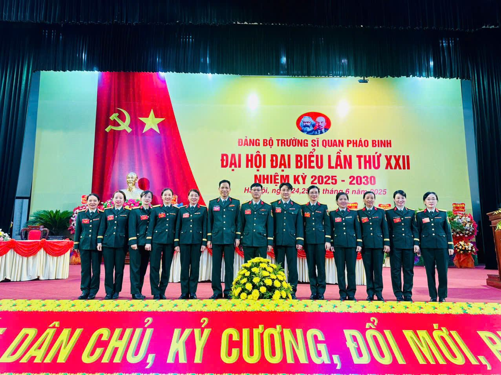
Thủ trưởng Phòng Chính trị chụp ảnh kỷ niệm với Đại biểu nữ dự Đại hội Đảng bộ Trường Sĩ quan Pháo binh nhiệm kỳ 2025-2030
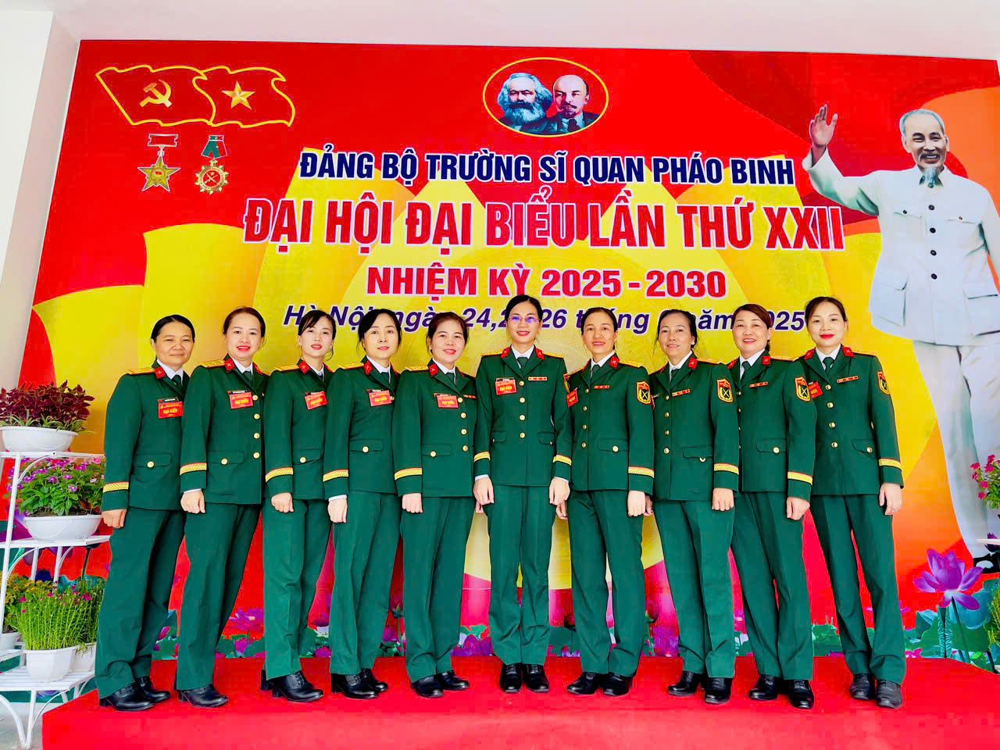
Đại biểu nữ dự Đại hội Đảng bộ Trường Sĩ quan Pháo binh Nhiệm kỳ 2025-2030
Câu 4 Truyền thống 70 năm xây dựng và trưởng thành của Nhà trường được nêu khái quát là gì? Đồng chí hãy nêu rõ những biểu hiện đặc trưng của truyền thống đó?
Trả lời:
Nhìn lại chặng đường lịch sử 70 năm qua, chúng ta tự hào về những thành tích đã đạt được; tự hào về truyền thống vẻ vang mà các thế hệ cán bộ, học viên, chiến sĩ của Nhà trường đã trải qua những năm tháng phấn đấu gian khổ đi lên từ không đến có, từ nhỏ đến lớn, xây đắp nên truyền thống “ Tự lực, tự cường, chủ động sáng tạo, dạy tốt, học tốt, công tác tốt”. Truyền thống đó được thể hiện, đó là:
- Ý chí tự lực, tự cường trong mọi lĩnh vực, trên mọi mặt công tác, dù gặp nhiều khó khăn nhưng Nhà trường đã tự tìm lấy sức mạnh của chính mình, sức mạnh của khối đại đoàn kết thống nhất cao của toàn Trường và sự giúp đỡ to lớn của cấp trên, của đơn vị bạn và địa phương để vượt qua khó khăn, gian khổ hoàn thành xuất sắc mọi nhiệm vụ được giao, không ngừng trưởng thành vững bước đi lên.
- Tinh thần chủ động, sáng tạo khắc phục khó khăn, dám nghĩ, dám làm, vươn lên làm chủ khoa học kỹ thuật, nhất là các phong trào nghiên cứu khoa học, phát huy sáng kiến, cải tiến kỹ thuật với nhiều đề tài, công trình có giá trị thực tiễn cao được đưa vào giảng dạy trong Nhà trường và huấn luyện trong các đơn vị Pháo binh toàn quân đạt kết quả tốt và được áp dụng rộng rãi.
| Ảnh khai giảng năm học chỗ này |
|---|
- Truyền thống dạy tốt, học tốt, công tác tốt đã trở thành động lực to lớn nâng cao chất lượng xây dựng toàn diện của Nhà trường, Nhà trường VMTD, luôn nhận và hoàn thành xuất sắc mọi nhiệm vụ được giao. Từ nâng cao chất lượng giáo dục đào tạo, xây dựng chính quy, rèn luyện kỷ luật đến xây dựng về chính trị tư tưởng được Nhà trường quan tâm lãnh đạo, chỉ đạo và tổ chức thực hiện chặt chẽ, có chất lượng bảo đảm cho Nhà trường luôn sẵn sàng nhận và hoàn thành mọi nhiệm vụ được giao. Chính từ truyền thống đó đã sản sinh ra những cán bộ Pháo binh; những tướng lĩnh; các nhà giáo nhân dân, nhà giáo ưu tú, giáo viên dạy giỏi, cán bộ quản lý học viên tốt và học viên tiêu biểu xuất sắc trong Nhà trường.
Truyền thống vẻ vang đó của Nhà trường được xây đắp, đúc kết từ thực tiễn 70 năm xây dựng và trưởng thành của Trường sỹ quan Pháo binh đã có sức cổ vũ, động viên mạnh mẽ để mỗi cán bộ, giáo viên, học viên, QNCN, CNV, HSQ-BS của Nhà trường dù đang công tác, học tập tại Trường, hay đang ở những cương vị khác nhau ở bất cứ nơi đâu cũng luôn mãi giữ gìn, trân trọng và phát huy.
Câu 5 Đồng chí cho biết Nhà trường được tuyên dương Anh hùng lực lượng vũ trang vào thời điểm nào? Có bao nhiêu thành tích khen thưởng của Nhà trường trong 70 năm xây dựng, trưởng thành?
Trải qua gần 70 năm xây dựng và trưởng thành, Trường Sĩ quan Pháo binh được sự lãnh đạo của Bộ Quốc phòng, Đảng ủy, Thủ trưởng Bộ Tư lệnh Binh chủng Pháo binh (Nay là Bộ Tư lệnh Pháo binh-Tên lửa); sự phối hợp, giúp đỡ tận tình của Đảng bộ, chính quyền và nhân dân các địa phương, các đơn vị bạn; cùng sự năng động, sáng tạo, sâu sát của Thường vụ, Đảng ủy Nhà trường, các đảng bộ và chi bộ cơ sở; trách nhiệm tổ chức thực hiện của Ban Giám hiệu và hệ thống lãnh đạo, chỉ huy các cấp, vai trò xung kích, thi đua của các tổ chức quần chúng trong Nhà trường, ... với trí tuệ, công sức của các thế hệ cán bộ, giáo viên, học viên, QNCN, CNV, HSQ-BS toàn trường đã không ngừng phát huy bản chất cách mạng và truyền thống vẻ vang của Quân đội Nhân dân Việt Nam anh hùng, của Binh chủng Pháo binh anh hùng, luôn đồng tâm hiệp lực, đoàn kết gắn bó, nỗ lực phấn đấu bền bỉ, tự lực, tự cường, tích cực, chủ động vừa học vừa làm vừa rút kinh nghiệm, vừa xây dựng, củng cố và trưởng thành lớn mạnh không ngừng, lập nên những thành tích to lớn, xây dựng Nhà trường ngày càng vững mạnh, trưởng thành về mọi mặt.
70 năm làm nhiệm vụ giáo dục, đào tạo, Nhà trường đã hoàn thành đào tạo, bồi dưỡng hàng trăm khóa học ra trường ở tất cả các đối tượng đào tạo mà nhà trường đảm nhiệm…đáp ứng kịp thời yêu cầu xây dựng và chiến đấu của bộ đội Pháo binh qua các thời kỳ cách mạng và làm tròn nhiệm vụ quốc tế cao cả. Hầu hết cán bộ do Nhà trường đào tạo ra đều có bản lĩnh chính trị vững vàng, có năng lực hoàn thành nhiệm vụ, có nhiều đồng chí trưởng thành là tướng lĩnh, cán bộ lãnh đạo giữ nhiều trọng trách trong Quân đội, các cơ quan của Đảng, Nhà nước; có đồng chí lập công xuất sắc được tặng danh hiệu anh hùng LLVTND.
Từ khi thành lập trường đến năm 1986, thực hiện Nghị quyết của Bộ Chính trị, Thường vụ Đảng ủy Quân sự Trung ương và Bộ Tư lệnh Pháo binh, Nhà trường đã phấn đấu liên tục và trưởng thành nhanh chóng, từ đơn vị trung bình khá trở thành đơn vị khá vững chắc, toàn diện; hàng nghìn học viên ra trường phấn khởi nhận nhiệm vụ, góp phần bước đầu xây dựng quân đội, Binh chủng cách mạng, chính quy, từng bước hiện đại. Với sự phấn đấu không ngừng của cán bộ, giáo viên, học viên, công nhân viên, hạ sĩ quan, binh sĩ trong giai đoạn này, Nhà trường đã vinh dự được Đảng và Nhà nước tặng thưởng 02 Huân chương Chiến công Hạng Hai (năm 1982 và 1983), 01 Huân chương Chiến công hạng Nhất (năm 1984), 01 Huân chương Quân công hạng Nhất, nhân kỷ niệm 40 năm ngày thành lập Quân đội Nhân dân Việt Nam (22/12/1944 - 22/12/1984). Năm 1985, Nhà trường được công nhận là đơn vị Lá cờ đầu và được nhận vĩnh viễn cờ thưởng luân lưu của Bộ Quốc phòng.
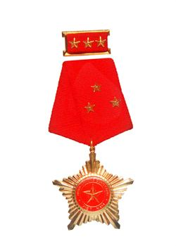 |
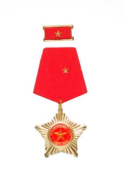 |
|---|
Huân chương Quân công hạng Nhất và hạng Ba
Giai đoạn từ năm 1986 - 2016, đã có nhiều tập thể, cá nhân của Nhà trường được khen thưởng ở các cấp. Đặc biệt, năm 2007, Nhà trường được tặng Huân chương Bảo vệ Tổ quốc hạng Nhì; năm 2008 được tặng Cờ thi đua của Chính phủ. Năm 2009, Nhà trường được vinh dự được phong tặng danh hiệu “Anh hùng Lực lượng vũ trang Nhân dân” vì có thành tích đặc biệt xuất sắc trong thời kỳ kháng chiến chống Mỹ, cứu nước.
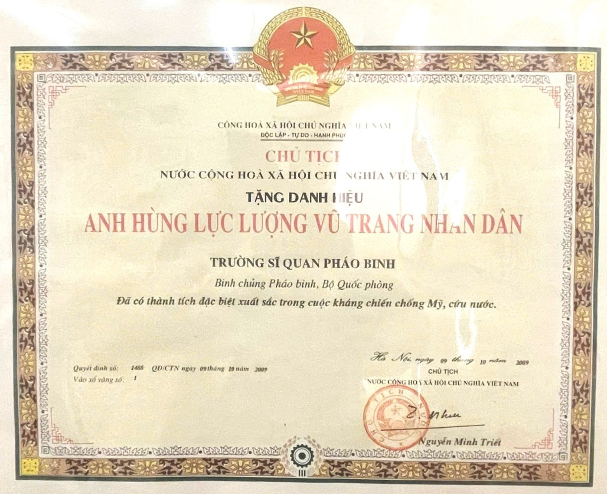
Trường Sĩ quan Pháo binh được nhận danh hiệu “Anh hùng lực lượng vũ trang nhân dân” trong cuộc kháng chiến chống Mỹ cứu nước năm 2009
Giai đoạn 2017 - 2021, Nhà trường được tặng Cờ thi đua của Bộ Tư lệnh Pháo binh năm 2017 và Cờ thi đua của Bộ Quốc phòng năm 2018, cùng nhiều bằng khen, cờ thưởng của các cấp; nhiều tập thể, cá nhân được khen thưởng trong các phong trào thi đua và thực hiện nhiệm vụ thường xuyên, đột xuất.
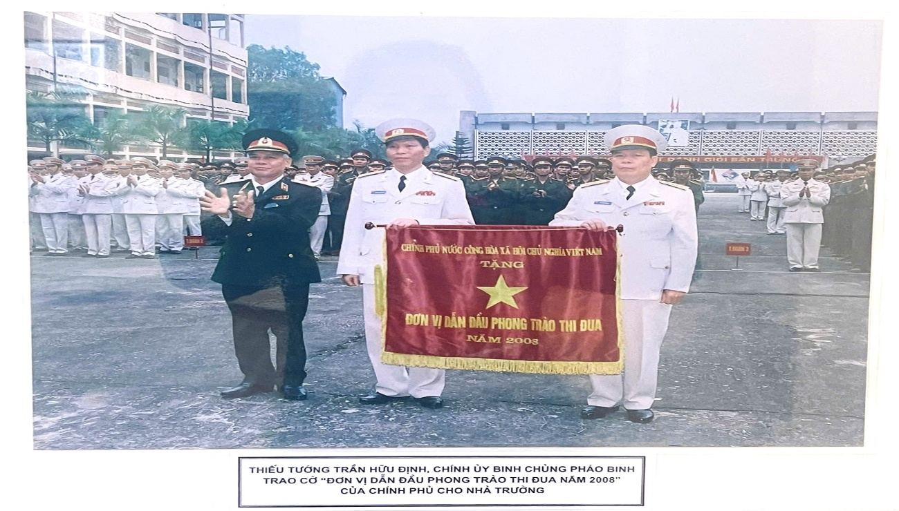
Hằng năm phong trào Thi đua Quyết thắng được triển khai sâu rộng, gắn với nhiệm vụ chính trị trung tâm và các khâu đột phá. Tháng 5/2024, Nhà trường tổ chức Đại hội Thi đua Quyết thắng giai đoạn 2019 - 2024 tổng kết, rút kinh nghiệm, biểu dương điển hình tiên tiến và xác định phương hướng, nhiệm vụ thi đua trong giai đoạn tiếp theo. Với sự nỗ lực của toàn Trường, từ năm 2023 đến đầu năm 2027, Nhà trường được Bộ Quốc phòng và Bộ Tư lệnh trao tặng nhiều phần thưởng: Bằng khen của Bộ Giáo dục và Đào tạo vì đã có thành tích xuất sắc trong thực hiện phong trào thi đua “Đổi mới sáng tạo trong quản lý giảng dạy và học tập” năm học 2022 - 2023 ; Bằng khen của Tổng cục Chính trị vì đã có thành tích xuất sắc trong 10 năm (2013-2023) tham gia viết tin, bài, biên tập, xuất bản và phát hành Bản tin “Thi đua quyết thắng”; Bằng khen của Bộ Tư lệnh Binh chủng Pháo binh vì đã có thành tích xuất sắc trong Phong trào thi đua “Dân vận khéo”, “Xây dựng đơn vị dân vận tốt” ; Giấy khen của UBND thị xã Sơn Tây vì đã có thành tích trong phối hợp hoạt động Tác chiến, Trị an, Dân vận và an toàn giao thông. Bằng khen của Bộ Tổng Tham mưu đạt giải Ba toàn đoàn khối trường sĩ quan trong Hội thi giảng viên các học viện, trường đào tạo sĩ quan cấp phân đội năm 2024; Bằng khen của Tổng cục Chính trị đạt giải khuyến khích tham gia Hội thi Olympic các môn khoa học Mác - Lênin, tư tưởng Hồ Chí Minh và nhận thức chính trị - xã hội lần thứ X năm 2024. Bằng khen của Bộ Quốc phòng vì đã có thành tích xuất sắc trong công tác từ năm 2023 đến năm 2024, góp phần vào sự nghiệp xây dựng Quân đội, củng cố quốc phòng và bảo vệ Tổ quốc; Bằng khen của Bộ Quốc phòng vì đã có thành tích xuất sắc trong phong trào thi đua cả nước thi đua xây dựng xã hội học tập, đẩy mạnh học tập suốt đời; Bằng khen của Bộ Quốc phòng vì đã có thành tích xuất sắc trong thực hiện nhiệm vụ bảo vệ nền tảng tư tưởng của Đảng, đấu tranh phản bác các quan điểm sai trái, thù địch; Bằng khen của Binh chủng Pháo binh vì đã có thành tích xuất sắc trong thực hiện Đề án của Chính phủ trồng một tỷ cây xanh vì một Việt Nam xanh giai đoạn 2021 - 2025 trong Binh chủng; Bằng khen của Bộ Tư lệnh Pháo binh - Tên lửa vì đã có thành tích xuất sắc trong đăng cai địa điểm, phục vụ bảo đảm cho Đội tuyển Bộ Tư lệnh huấn luyện đạt thành tích cao trong tham gia Hội thao Thể dục thể thao toàn quân. Đặc biệt năm 2026, Nhà trường được tặng Huân chương Bảo vệ Tổ quốc hạng Nhì của Chủ tịch nước vì đã có thành tích xuất sắc trong tổ chức, thực hiện công tác huấn luyện, SSCĐ, xây dựng lực lượng; Bằng khen của Bộ Quốc phòng vì đã có thành tích xuất sắc trong tổ chức, thực hiện công tác tuyển sinh quân sự năm 2025; Bằng khen của Tổng Tham mưu trưởng vì đã hoàn thành xuất sắc nhiệm vụ năm học 2025 - 2026; Bằng khen của Bộ Tư lệnh Pháo binh - Tên lửa vì đã hoàn thành xuất sắc nhiệm vụ bầu cử Quốc hội khóa XVI và HĐND các cấp nhiệm kỳ 2026-2031...
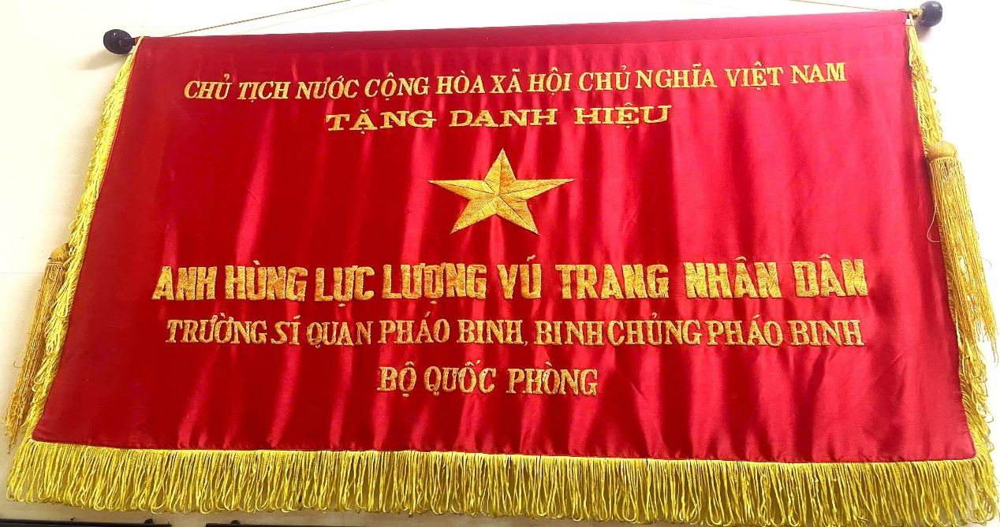
Trải qua 70 năm xây dựng và trưởng thành, dưới sự lãnh đạo, chỉ đạo của Đảng, Nhà nước, Quân ủy Trung ương, Bộ Quốc phòng, trực tiếp, thường xuyên là Đảng ủy Binh chủng Pháo binh qua các thời kỳ, nay là Đảng ủy, Bộ Tư lệnh Pháo binh - Tên lửa; được sự giúp đỡ của các cơ quan, đơn vị bạn, cấp ủy, chính quyền và Nhân dân địa phương, các thế hệ cán bộ, giảng viên, học viên, nhân viên, chiến sĩ Nhà trường đã đoàn kết, nỗ lực phấn đấu, vượt qua khó khăn, hoàn thành nhiệm vụ giáo dục, đào tạo, nghiên cứu khoa học, sẵn sàng chiến đấu và xây dựng đơn vị. Từ một cơ sở đào tạo cán bộ pháo binh còn nhiều thiếu thốn, Nhà trường từng bước phát triển về tổ chức, quy mô, trình độ đào tạo, đội ngũ nhà giáo và cơ sở vật chất, trở thành trung tâm giáo dục, đào tạo và nghiên cứu khoa học của Bộ Tư lệnh Pháo binh - Tên lửa và của Quân đội ta, đóng góp vào sự nghiệp đấu tranh giải phóng dân tộc, xây dựng và bảo vệ Tổ quốc Việt Nam XHCN.
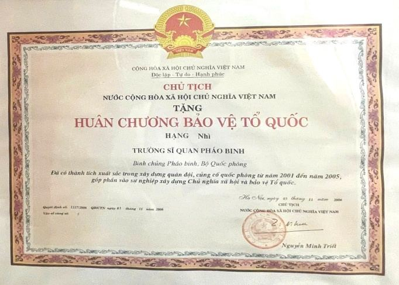 |
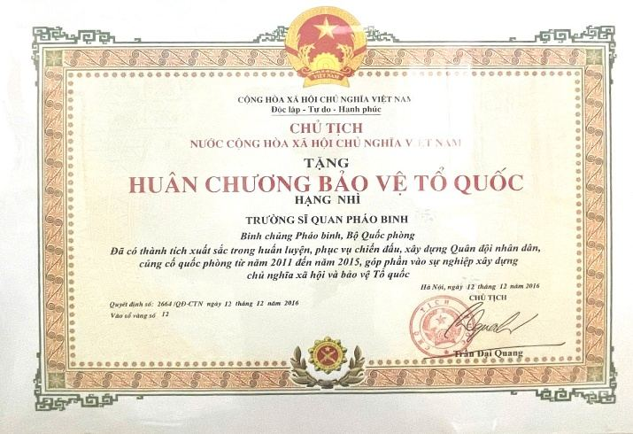 |
|---|
Thành tích nổi bật, xuyên suốt của Nhà trường là hoàn thành các nhiệm vụ bổ túc, đào tạo, bồi dưỡng cán bộ các cấp, đáp ứng yêu cầu xây dựng và chiến đấu của bộ đội pháo binh qua các thời kỳ. Nhà trường đã tổ chức hàng trăm khóa đào tạo, bồi dưỡng với trên 5 vạn cán bộ chỉ huy, cán bộ chính trị; đồng thời đào tạo, bồi dưỡng nhiều cán bộ chỉ huy, tham mưu cấp trung, lữ đoàn, sĩ quan dự bị, hạ sĩ quan, nhân viên chuyên môn kỹ thuật và giáo viên quân sự pháo binh. Từ đào tạo sơ cấp, bổ túc ngắn hạn, đào tạo cấp tốc phục vụ chiến trường, Nhà trường phát triển lên đào tạo cơ bản, dài hạn, cao đẳng, đại học; đảm nhiệm nhiều đối tượng đào tạo, chuyển loại, văn bằng thứ hai và các lớp tập huấn chuyên ngành. Sự phát triển đó thể hiện khả năng chủ động chuyển hướng nhiệm vụ, điều chỉnh chương trình, tổ chức đào tạo phù hợp với yêu cầu của Quân đội và lực lượng pháo binh - tên lửa trong từng điều kiện lịch sử.
Trong quá trình thực hiện nhiệm vụ, Nhà trường luôn gắn đào tạo với thực tiễn chiến đấu, xây dựng đơn vị và chức trách của người cán bộ. Từ khóa đào tạo đầu tiên đến nay, Nhà trường đã từng bước hoàn thiện nội dung, chương trình, phương pháp dạy học; thực hiện đúng phương châm, nguyên tắc, các mối kết hợp trong giáo dục - đào tạo, giữa huấn luyện kỹ thuật với chiến thuật, giáo dục chính trị với rèn luyện năng lực chỉ huy, quản lý bộ đội. Thực hành, thực tập, diễn tập chiến thuật, diễn tập vòng tổng hợp và bắn đạn thật được tổ chức ngày càng sát thực tế; các hình thức kiểm tra, đánh giá, khảo thí từng bước đổi mới, ứng dụng công nghệ thông tin. Nhà trường định kỳ được kiểm định đạt chuẩn chất lượng giáo dục, tiếp tục triển khai tự đánh giá, rà soát chương trình, chuẩn đầu ra và các điều kiện bảo đảm chất lượng, từng bước hình thành nền nếp quản lý, cải tiến chất lượng đào tạo. Phương châm “Chất lượng đào tạo của Nhà trường là khả năng sẵn sàng chiến đấu của đơn vị” được cụ thể hóa trong hoạt động dạy học, thực tập và diễn tập của các đối tượng.
Các thế hệ cán bộ trưởng thành từ Nhà trường đã có mặt trên nhiều chiến trường, địa bàn, đơn vị; nhiều đồng chí trở thành tướng lĩnh, cán bộ lãnh đạo, chỉ huy, đảm nhiệm trọng trách trong Quân đội, các cơ quan của Đảng, Nhà nước; có đồng chí lập công xuất sắc, được phong tặng danh hiệu Anh hùng Lực lượng vũ trang nhân dân. Cùng với nhiệm vụ đào tạo, Nhà trường đã cử nhiều đoàn cán bộ, giáo viên đi thực tế, tham gia chiến đấu; tổ chức lực lượng, tăng cường cán bộ, học viên, chiến sĩ, xe pháo chi viện chiến trường; tham gia huấn luyện và chiến đấu bảo vệ biên giới. Nhiều cán bộ, giáo viên, học viên, chiến sĩ đã anh dũng hy sinh, góp phần tô thắm lá cờ vinh quang của Tổ quốc và làm rạng danh trang sử truyền thống vẻ vang của Nhà trường. Kết quả giáo dục - đào tạo, huấn luyện chiến đấu, công tác và sự trưởng thành của các thế hệ học viên là sự khẳng định chất lượng đào tạo, tinh thần trách nhiệm và những đóng góp của Nhà trường đối với sự nghiệp xây dựng, chiến đấu của Quân đội, Bộ Tư lệnh Pháo binh - Tên lửa.
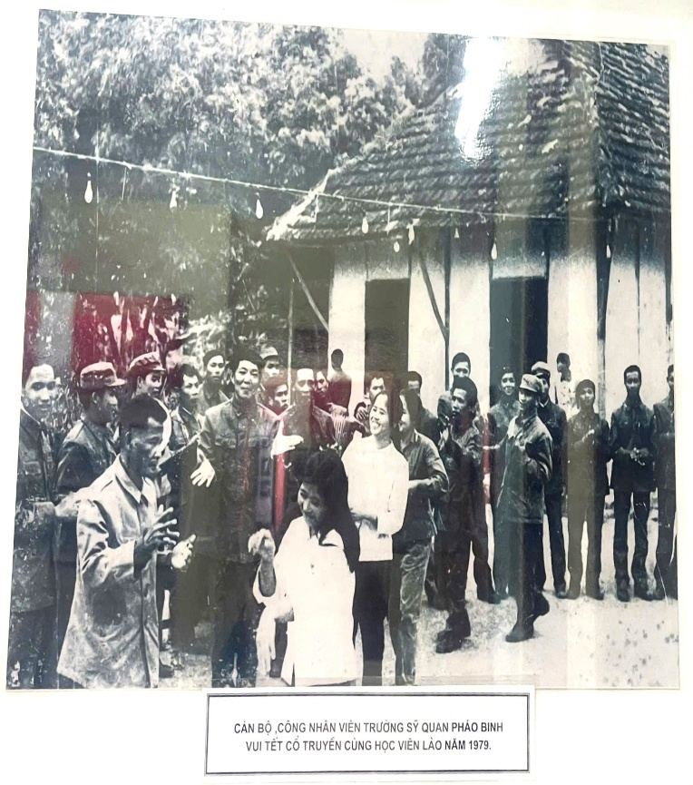
Trong thực hiện nhiệm vụ quốc tế và đối ngoại quốc phòng, Nhà trường đã đào tạo, bồi dưỡng hàng nghìn sĩ quan chỉ huy, giáo viên, nhân viên chuyên môn kỹ thuật pháo binh cho các nước bạn Lào, Campuchia; cử cán bộ làm chuyên gia, giúp bạn trong huấn luyện, đào tạo. Nội dung, chương trình, phương pháp giảng dạy được xây dựng phù hợp từng đối tượng; công tác quản lý, chăm lo đời sống, giáo dục, rèn luyện học viên quốc tế được quan tâm. Những khóa học được tổ chức liên tục qua nhiều thời kỳ, cùng các hoạt động giao lưu, gặp mặt, chúc mừng Tết cổ truyền đã góp phần củng cố tình đoàn kết, hữu nghị, hợp tác giữa Quân đội nhân dân Việt Nam với Quân đội nhân dân Lào, Quân đội Hoàng gia Campuchia; khẳng định uy tín và trách nhiệm của Nhà trường trong thực hiện nhiệm vụ được giao.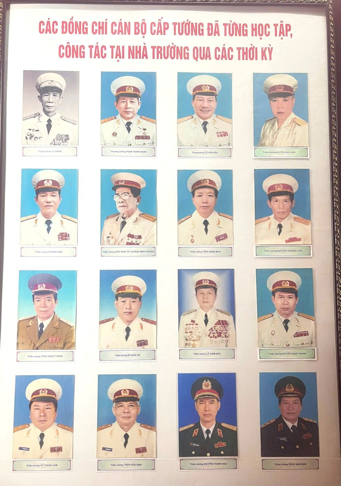
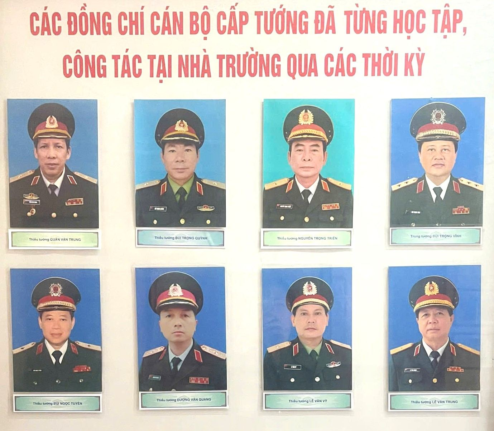
Nghiên cứu khoa học, biên soạn giáo trình, tài liệu, phát huy sáng kiến, cải tiến kỹ thuật là một thành tích quan trọng, gắn liền với quá trình phát triển nhiệm vụ đào tạo. Trên các lĩnh vực khoa học xã hội và nhân văn quân sự, nghệ thuật quân sự, kỹ thuật quân sự, Nhà trường đã thực hiện hàng trăm đề tài, công trình nghiên cứu, tổng kết, biên soạn và hàng nghìn chuyên đề, sáng kiến, cải tiến kỹ thuật; xây dựng nhiều mô hình, thiết bị, phần mềm mô phỏng, phim huấn luyện, giáo trình, tài liệu phục vụ dạy học. Từ những sáng kiến thao tác, cơ động pháo, “Tủ bắn”, thước tác nghiệp đến hệ thống mô phỏng pháo binh, mô phỏng 3D, ứng dụng công nghệ thông tin và phối hợp nghiên cứu, nghiệm thu sản phẩm kỹ thuật, hoạt động khoa học đã bám sát yêu cầu huấn luyện, chiến đấu, khai thác vũ khí trang bị. Nhiều kết quả được sử dụng trong Nhà trường và các đơn vị pháo binh toàn quân, góp phần nâng cao chất lượng huấn luyện, tiết kiệm vật chất, thời gian, kinh phí, phát triển năng lực nghiên cứu và làm chủ khoa học, công nghệ.
Cơ sở vật chất, trang bị và phương tiện bảo đảm giáo dục, đào tạo từng bước được củng cố, phát triển. Nhà trường đã xây dựng, cải tạo hệ thống giảng đường, phòng học chuyên dùng, phòng học ngoại ngữ, tin học, thao trường, bãi tập, sa bàn, cơ sở bảo dưỡng, sửa chữa; bổ sung mô hình, học cụ, phương tiện phục vụ giảng dạy, học tập. Từ ứng dụng mạng nội bộ, phần mềm mô phỏng, Nhà trường từng bước triển khai văn bản điện tử, chữ ký số, hệ thống quản lý văn bản và điều hành, thi trắc nghiệm trên máy tính, số hóa một số hoạt động quản lý; thực hiện phong trào “Bình dân học vụ số”, bồi dưỡng kiến thức, kỹ năng số cho các lực lượng. Những kết quả đó góp phần đổi mới phương pháp dạy học, quản lý, chỉ huy, điều hành, cải cách hành chính và tạo cơ sở xây dựng Nhà trường thông minh.
Công tác đảng, công tác chính trị được triển khai gắn với nhiệm vụ đào tạo và xây dựng đơn vị, góp phần giữ vững sự lãnh đạo của Đảng, sự ổn định về chính trị, tư tưởng, tổ chức và đoàn kết trong toàn Trường. Qua các kỳ đại hội, Đảng bộ Nhà trường từng bước kiện toàn, nâng cao năng lực lãnh đạo, sức chiến đấu, xác định chủ trương, biện pháp thực hiện nhiệm vụ phù hợp từng giai đoạn; gắn xây dựng tổ chức đảng trong sạch, vững mạnh với xây dựng đơn vị vững mạnh toàn diện “Mẫu mực tiêu biểu”. Công tác giáo dục chính trị, tuyên truyền, thi đua, chính sách, dân vận, hoạt động của các tổ chức quần chúng và xây dựng môi trường văn hóa được duy trì, phát triển. Các phong trào dạy tốt, học tốt, công tác tốt, Thi đua Quyết thắng đã động viên các lực lượng phấn đấu, xuất hiện nhiều tập thể, cá nhân điển hình, đạt thành tích trong các hội thi, hội thao, hoạt động chuyên môn và thực hiện nhiệm vụ.
Nhà trường luôn coi trọng sẵn sàng chiến đấu, xây dựng chính quy, rèn luyện kỷ luật, bảo đảm hậu cần, kỹ thuật và chăm lo đời sống bộ đội. Trong chiến tranh, vừa tổ chức đào tạo, vừa sơ tán, bảo vệ lực lượng, cơ sở vật chất, phối hợp với địa phương chiến đấu, phòng, chống thiên tai; trong hòa bình, thường xuyên củng cố văn kiện, kế hoạch, tổ chức huấn luyện, luyện tập, duy trì trực sẵn sàng chiến đấu, xây dựng cảnh quan, môi trường, quản lý và khai thác hiệu quả trang bị. Công tác tăng gia sản xuất, nuôi dưỡng, quân y, bảo dưỡng, sửa chữa xe pháo, khí tài đã phục vụ kịp thời nhiệm vụ trung tâm. Các hoạt động giúp dân, cứu hộ, phòng, chống lụt bão, dịch bệnh, trong đó có tiếp nhận, cách ly công dân phòng, chống dịch COVID-19, cùng công tác dân vận, kết nghĩa, phối hợp hoạt động trên địa bàn đã củng cố tình đoàn kết quân dân, làm sâu sắc phẩm chất “Bộ đội Cụ Hồ” và hình ảnh Nhà trường trong lòng Nhân dân.
|
Huân chương Chiến công |
Huân chương bảo vệ Tổ quốc |
|---|
Với những thành tích trong 70 năm xây dựng và trưởng thành, Nhà trường được Đảng, Nhà nước, Quân đội và các nước bạn tặng thưởng nhiều phần thưởng cao quý: 02 Huân chương Quân công (hạng Nhất, hạng Ba); 08 Huân chương Chiến công (02 hạng Nhất, 03 hạng Nhì, 03 hạng Ba); 03 Huân chương Bảo vệ Tổ quốc hạng Nhì; 01 Huân chương Lao động hạng Ba; 01 Huân chương “Tự do” (Huân chương Xa - La - Lợt) hạng Nhất của Nhà nước CHDCND Lào; 01 Huân chương “Hữu nghị” hạng Nhất của Nhà nước Campuchia. Nhà trường vinh dự được nhận lẵng hoa của Chủ tịch Hồ Chí Minh, Cờ thưởng luân lưu của Bác Tôn, Cờ thi đua của Chính phủ, Bộ Quốc phòng, Bộ Tư lệnh và nhiều cờ thưởng, bằng khen, giấy khen của các cấp, các ngành, địa phương về giáo dục, đào tạo, nghiên cứu khoa học, huấn luyện, sẵn sàng chiến đấu, tuyển sinh quân sự, xây dựng xã hội học tập, bảo vệ nền tảng tư tưởng của Đảng, công tác dân vận và các nhiệm vụ khác. Đặc biệt, ngày 10 tháng 9 năm 2009, Nhà trường được Nhà nước phong tặng danh hiệu “Anh hùng Lực lượng vũ trang nhân dân thời kỳ kháng chiến chống Mỹ, cứu nước”. Những phần thưởng ấy ghi nhận trí tuệ, công sức, sự cống hiến và hy sinh của các thế hệ, đồng thời đặt ra trách nhiệm tiếp tục xây dựng Nhà trường xứng đáng với sự tin cậy của Đảng, Nhà nước, Quân đội và Nhân dân.
Nhìn lại chặng đường 70 năm, các thế hệ cán bộ, giảng viên, học viên, công nhân viên, hạ sĩ quan, chiến sĩ Nhà trường luôn tự hào về những thành tích đã đạt được, trân trọng sự hy sinh, công hiến của các thế hệ đi trước xây dựng Nhà trường từng bước trưởng thành, phát triển, vun đắp nên truyền thống “Tự lực, tự cường; chủ động, sáng tạo; dạy tốt, học tốt, công tác tốt”. Truyền thống đó là kết quả của quá trình thực hiện nhiệm vụ qua nhiều thời kỳ, được giữ gìn, phát triển trong từng khóa học, từng cơ quan, khoa, đơn vị và từng thế hệ cán bộ, giảng viên, học viên, nhân viên, hạ sĩ quan, chiến sĩ Nhà trường.
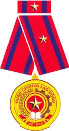 Huân chương lao động |
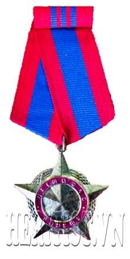 Huân chương tự do Lào |
|---|
Ý chí tự lực, tự cường thể hiện ở tinh thần phát huy sức mạnh của chính mình, sức mạnh đoàn kết, thống nhất của toàn Trường để khắc phục khó khăn, hoàn thành nhiệm vụ. Từ tổ chức lớp học, xây dựng doanh trại, thao trường trong điều kiện thiếu thốn, sơ tán đến củng cố cơ sở vật chất, bồi dưỡng đội ngũ, phát triển nhiệm vụ đào tạo, Nhà trường luôn nêu cao trách nhiệm, cần cù, bền bỉ, sử dụng hiệu quả nguồn lực được giao. Tự lực, tự cường gắn với tranh thủ sự lãnh đạo, chỉ đạo, hỗ trợ của cấp trên, sự phối hợp của đơn vị bạn và sự giúp đỡ của Nhân dân địa phương, tạo sức mạnh để Nhà trường phát triển, hoàn thành nhiệm vụ trong mọi điều kiện.
Tinh thần chủ động, sáng tạo thể hiện ở khả năng bám sát thực tiễn, kịp thời chuyển hướng đào tạo, điều chỉnh nội dung, chương trình, phương pháp phù hợp nhiệm vụ; dám nghĩ, dám làm, nghiên cứu, cải tiến kỹ thuật, xây dựng mô hình, học cụ, biên soạn tài liệu, ứng dụng khoa học, công nghệ. Từ yêu cầu đào tạo cán bộ cho chiến trường đến nâng cao chất lượng đào tạo đại học, khảo thí, quản trị và chuyển đổi số, Nhà trường luôn coi trọng phát hiện, giải quyết những vấn đề thực tiễn đặt ra. Nhiều công trình, sáng kiến được ứng dụng, nhân rộng, góp phần nâng cao chất lượng đào tạo và huấn luyện trong các đơn vị.
Dạy tốt, học tốt, công tác tốt là sự gắn kết giữa hoạt động của người dạy, người học với trách nhiệm quản lý, phục vụ, bảo đảm của mọi cơ quan, khoa, đơn vị. Dạy tốt gắn với phẩm chất, năng lực, trách nhiệm và sự gương mẫu của nhà giáo; học tốt gắn với động cơ đúng đắn, tự giác nghiên cứu, tích cực thực hành, rèn luyện; công tác tốt gắn với tổ chức thực hiện nhiệm vụ khoa học, chặt chẽ, tận tụy, hiệu quả. Sự thống nhất đó tạo nên chất lượng giáo dục, đào tạo, xây dựng chính quy, kỷ luật và sức mạnh của Nhà trường. Từ thực tiễn ấy, nhiều nhà giáo, cán bộ quản lý, học viên tiêu biểu đã trưởng thành, tiếp tục đóng góp cho Nhà trường, lực lượng Pháo binh - Tên lửa và Quân đội.
Câu 6 Đồng chí nêu rõ họ tên, thời gian giữ chức vụ của các đồng chí trong Ban Giám hiệu Nhà trường; các đồng chí có học hàm Phó giáo sư, học vị Tiến sĩ; những đồng chí đạt danh hiệu Nhà giáo nhân dân; anh hùng Lực lượng vũ trang của Nhà trường 70 năm qua?Khái quát trình độ học vấn của cán bộ, giáo viên Nhà trường hiện nay và chỉ tiêu phấn đấu đến năm 2030?
Trả lời:
Các đồng chí Hiệu trưởng.
1. Đồng chí: Lê Thiết Hùng; Từ tháng 2/1957 đến cuối năm 1960 (Tư lệnh Binh chủng kiêm hiệu trưởng).
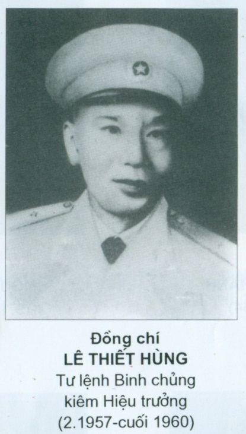
2. Đồng chí: Phùng Thế Tài; Từ cuối năm 1960 đến tháng 01 năm 1962
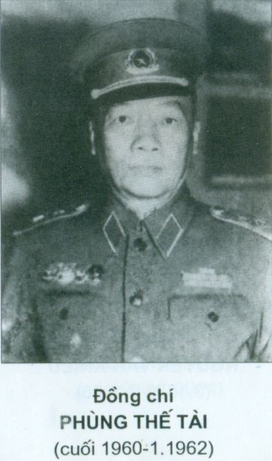
3. Đồng chí: Phạm Hàm ; Từ tháng 01 năm 1962 đến tháng 4 năm 1963
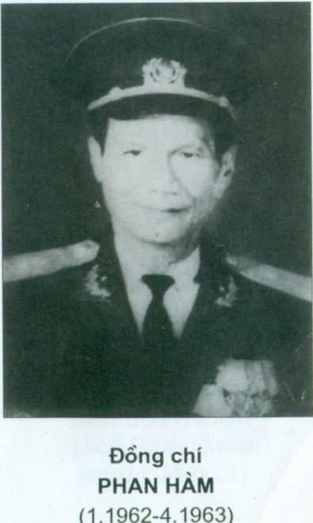
4. Đồng chí: Hoàng Văn Khánh: Từ tháng 4/1963 đến tháng 9/1964
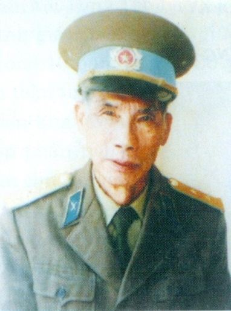
5. Đồng chí: Nguyễn Hữu Mỹ: Từ tháng 9 năm 1964 đến tháng 10 năm 1974
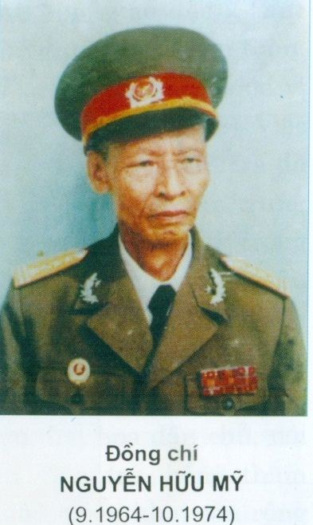
6. Đồng chí: Trần Ngọc Anh: Từ tháng 10/1974 đến tháng 3/1979 (Quyền Hiệu trưởng).
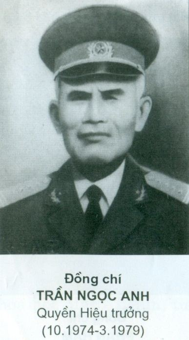
7. Đồng chí: Nguyễn Văn Khiếu: Từ tháng 3 năm 1979 đến tháng 7/1988
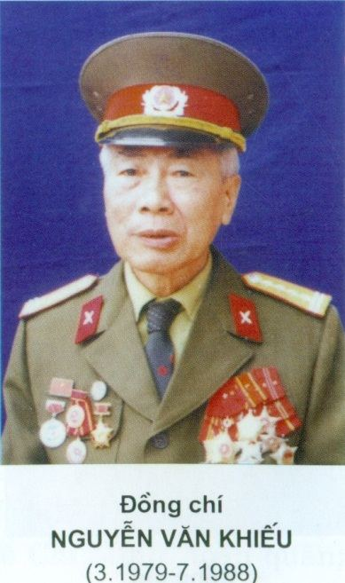
8. Đồng chí: Trương Hùng: Từ tháng 7 năm 1988 đến tháng 6 năm 1995
9. Đồng chí: Đinh Khắc Hiệu: Từ tháng 6 năm 1995 đến tháng 11 năm 1998
10. Đồng chí: Nguyễn Nghĩa: Từ tháng 11 năm 1998 đến tháng 7 năm 2004
11. Đồng chí: Trần Quyết Tiến: Từ tháng 7 năm 2004 đến tháng 11 năm 2011
12. Đồng chí: Nguyễn Du: Từ tháng 11/2011 đến 10/2017
12. Đồng chí: Vũ Ký Vệ: Từ tháng 10/2017 đến tháng 7 năm 2022
13. Đồng chí: Kiều Hữu Kiên: Từ tháng 8 năm 2022 đến nay
Ảnh Đ/c Kiên chưa có
B. Các đồng chí Chính uỷ ( Phó hiệu trưởng Chính trị.)
1. Đ/c: Nguyễn Lệnh; Từ năm 1957 đến tháng 10 năm 1958 ( Chủ nhiệm chính trị kiêm Ban bí thư ban cán sự Đảng)
2. Đ/c: Lê Ngọc Quang: Từ tháng 10 năm 1958 đến tháng 10 năm 1960
3. Đ/c Nông Quốc Tiến: Từ tháng 10 năm 1960 đến tháng 10 năm 1973 ( Chính uỷ)
4. Đ/c: Lê Trung: Từ tháng 10 năm 1973 đến tháng 5 năm 1978 ( Chính uỷ).
5. Đ/c: Nguyễn Kim Điện: Từ tháng 5 năm 1978 đến tháng 3 năm 1981 ( Chính uỷ)
6. Đ/c: Phan Viêm: Từ năm 1980 đến năm 1981 (Chính uỷ cơ sở 2)
7. Đ/c: Trần Quang Lâm: Từ tháng 3 năm 1981 đến tháng 9 năm 1987 (Chính uỷ, từ tháng 10 năm 1983 Phó hiệu trưởng Chính trị)
8. Đ/c: Đỗ Son: Từ tháng 9 năm 1987 đến tháng 12 năm 1988 (Phó hiệu Trưởng Chính trị)
9. Đ/c: Nguyễn Hoàng Mỗi: Từ tháng 12 năm 1988 đến tháng 5 năm 1997 (Phó hiệu trưởng Chính trị)
10. Đ/c: Bùi Minh Tiến: Từ tháng 12 năm 1997 đến tháng 7 năm 2003( Phó hiệu trưởng Chính trị)
11. Đ/c: An Viết Bình: Từ tháng 7 năm 2003 đến 2010 (Phó hiệu trưởng Chính trị, từ tháng 5 năm 2006 Chính uỷ)
12. Đ/c: Nguyễn Đức Khải: Từ tháng 6 /2010 đến tháng 11/2013 (Chính ủy)
13. Đ/c: Trần Văn Lý: Từ tháng 12 năm 2013 đến tháng 8 năm 2016 (Chính ủy)
14. Đ/c: Nguyễn Hoàng Nhiên Từ tháng 10/2016 đến tháng 4 năm 2017 (Chính ủy)
15. Đ/c: Trần Thu Truyền Từ tháng 04/2017 đến 09/2021 (Chính ủy)
16. Đ/C: Bùi Bắc Bình Từ tháng 10/2021 đến 3/2025
Ảnh đ/c Bình
17. Đồng chí Nguyễn Đức Hiền. Từ tháng 3/2025 đến nay
Ảnh đ/.c Hiền
C. Các đồng chí hiệu phó Quân sự.
1. Đ/c: Phan Hàm: 1957 (chức danh ban đầu là Phó giám đốc)
2. Đ/c: Phan Phác: 1957 (Hiệu phó Hệ Pháo mặt đất)
3. Đ/c: Hoàng Khải Tiến: 1957 – 10.1964 (Hiệu phó Hệ Pháo cao xạ)
4. Đ/c: Nguyễn Văn Thước: 1965 – 1969
5. Đ/c: Nguyễn Tiến Tác: 1971 – 1984
6. Đ/c: Vũ Đức Sinh: 1977 – 1987
7. Đ/c: Hoàng Đỉnh: 1978
8. Đ/c: Nguyễn Hữu Dần: 1979 – 1988
9. Đ/c: Nguyễn Vàng
10. Đ/c: Nguyễn Tuyên
11. Đ/c: Phạm Đức Phỉ
12. Đ/c: Cao Mạnh Tuấn
13. Đ/c: Lưu Hưởng: 1980 – 1981
14. Đ/c: Nguyễn Quang Phục: 1981
15. Đ/c: Trần Kính: 11.1981 – 4.1982
16. Đ/c: Trần Ngự: 1982 – 1983
17. Đ/c: Nguyễn Sầm: 1982 – 1987
18. Đ/c: Nguyễn Tiệp
19. Đ/c: Nguyễn Đức Sắc: 1983 – 1988
20. Đ/c: Nguyễn Quý Phong: 6.1988 – 1.1992
21. Đ/c: Nguyễn Hữu Bội: 1996 – 11.2000
22. Đ/c: Nguyễn Du: từ 2003 - 2013 Phó Hiệu trưởng đào tạo:
23. Đ/c: Nguyễn Đình Sơn: Từ 12/1998-2009 Phó Hiệu trưởng quân sự
24. Đ/c: Ngô Văn Tầm: 2013 đến nay Phó Hiệu trưởng đào tạo
25. Đ/c: Võ Huy Chinh: Từ 2009 – 2016 Phó Hiệu trưởng quân sự
26. Đ/c: Vũ Ký Vệ: từ 11/ 2016 đến tháng 9 năm 2017
27. Đ/c: Vũ Quyết Tiến: Phó Hiệu trưởng quân sự: từ 12/2016 đến 02/2020
28. Đ/c: Trần Đức Hùng: Phó Hiệu trưởng quân sự: từ 03/2020 đến nay
29. Đ/c: Dương Đình Hồng: Phó Hiệu trưởng từ tháng đến nay
D. Các đồng chí phó Chính ủy
1. Đ/c: Nguyễn Văn Đoài : từ 2006 đến 2010
3. Đ/c: Trần Văn Lý : từ 2011 đến 2013
2. Đ/c: Nguyễn Hoàng Nhiên : từ 2013 đến 10/ 2016
3. Đ/c: Trần Thu Truyền từ tháng 10/ 2016 đến 03/2017
4. Đ/c: Bùi Bắc Bình từ tháng 04/2017 đến tháng 9/2021
5. Đ/c: Phạm Văn Tuấn từ tháng 10/2021 đến nay
E. Các đồng chí có học hàm Phó giáo sư, học vị Tiến sĩ.
1. Đ/c: Thiếu tướng Trần Quyết Tiến Phó giáo sư – Tiến sĩ
2. Đ/c: Thiếu tướng Nguyễn Du Phó giáo sư – Tiến sĩ
3. Đ/c: Đại tá Trần Văn Tầm Phó giáo sư – Tiến sĩ
4. Đ/c: Đại tá Vũ Ký vệ Phó giáo sư – Tiến sĩ
5. Đ/c: Đại tá Nguyễn Hoàng Nhiên – Tiến sĩ
6. Đ/c: Đại tá Đỗ Văn Tiến – Tiến sĩ
7. Đ/c: Đại tá Trần Văn Lý – Tiến sĩ
8. Đ/c: Đại tá Trần Thu Truyền – Tiến sĩ
9. Đ/c: Đại tá Trần Quyết Tiến – Tiến sĩ
10. Đ/c: Nhữ Đình Lưu – Tiến sĩ
11. Đ/c: Phạm Văn Tuấn – Tiến sĩ
12. Đ/c: Phạm Bá Tuấn – Tiến sĩ
13. Đ/c: Nguyễn Đình Lanh – Tiến sĩ
14. Đ/c: Vương Quốc Quân – Tiến sĩ
15. Đ/c: Mạc Đăng Tiến – Tiến sĩ
16. Đ/c: Bùi Văn Cơ – Tiến sĩ
17. Đ/c: Cao Việt Hòa – Tiến sĩ
18. Đ/c: Nguyễn Đình Thành – Tiến sĩ
19. Đ/c: Nguyễn Thế Vinh – Tiến sĩ
20. Đ/c: Đỗ Tất Nghĩa – Tiến sĩ
21. Đ/c: Trần Văn Chuyền – Tiến sĩ
22. Đ/c: Tạ Duy Bình – Tiến sĩ
23. Đ/c: Nguyễn Minh Châu – Tiến sĩ
24.Đ/c: Phạm Văn Hiển-Tiến sĩ
25. Đ/c: Kiều Hữu Kiên-Tiến sĩ (Hiện nay là Hiệu trưởng Nhà trường)
26. Đ/c: Phạm Quang Tạo-Tiến sĩ (Hiện nay là Phó Hiệu trưởng Nhà trường)
27. Đ/c: Lê Thị Dung-Tiến sĩ
28. Đ/c: Nguyễn Văn Hà-Tiến sĩ
29. Đ/c: Nguyễn Thị Minh Thu-Tiến sĩ
30. Đ/c: Trần Đức Long-Tiến sĩ
31. Đ/c: Nguyễn Văn Tâm-Tiến sĩ
32. Đ/c: Nguyễn Văn Tuyển-Tiến sĩ
33. Đ/c: Nguyễn Văn Hội-Tiến sĩ
34. Đ/c: Đỗ Thanh Bình-Tiến sĩ
35. Đ/c: Cấn Đình Hải Minh-Tiến sĩ
36. Đ/c: Nguyễn Văn Thanh-Tiến sĩ
D. Các đồng chí nhà giáo nhân dân, nhà giáo ưu tú.
* Nhà giáo nhân dân:
Nhà giáo: Đinh Khắc Hiệu-Nguyên Hiệu trưởng nhà trường
* Nhà giáo ưu tú: (07 đồng chí)
1. Nhà giáo: Nguyễn Văn Khiếu – Nguyên Hiệu trưởng
2. Nhà giáo: Nguyễn Hữu Bội – Nguyên Phó hiệu trưởng Quân sự
.
3. Nhà giáo: Nguyễn Đức Lũng – Nguyên trưởng khoa Binh thao
4. Nhà giáo: Đỗ Viết Huy – Nguyên trưởng khoa Binh thao
5. Nhà giáo: Nguyễn Thị Oanh – Nguyên giáo viên mầm non
6. Nhà giáo: Vũ Ký vệ - Phó hiệu trưởng
7. Nhà giáo: Vũ Văn Tứ - Nguyên trưởng khoa Binh thao
F. Các đồng chí cán bộ, giáo viên Nhà trường là anh hùng.
* Anh hùng
1, Đồng chí Đại tá Phùng Văn Khầu- Nguyên Tiểu đoàn trưởng
2. Khái quát trình độ học vấn của cán bộ, giáo viên Nhà trường hiện nay và chi tiêu phấn đấu đến năm 2030
Từ 2005 đến 2010 Nhà trường đã cử 205 lượt cán bộ, giáo viên đi học, trong đó 47 đồng chí đào tạo sau đại học; 90 đồng chí đi thực tế tại các đơn vị trong Binh chủng. Đến tháng 02 năm 2010 Nhà trường có 100% giáo viên có trình độ đại học, sau đại học chiếm 30% (có 4,9% tiến sĩ). Năm học 2005- 2006 Nhà trường có 01 đồng chí được phong hàm phó giáo sư; có 01 nhà giáo ưu tú, 02 nhà giáo giỏi cấp bộ, 81 giáo viên dạy giỏi, 12 cán bộ quản lý học viên tốt cấp trường, cấp khoa, tiểu đoàn.
Từ năm 2013 đến nay có 08 đồng chí đạt chuẩn giảng viên chính, 02 đồng chí là kỹ sư chính; năm 2013 có 07 đồng chí, năm 2015 có 07 đồng chí đạt danh hiệu nhà giáo giỏi cấp Bộ Quốc phòng, nâng tổng số nhà giáo giỏi cấp bộ lên 27 đồng chí. Để nâng cao trình độ mọi mặt của đội ngũ giáo viên giảng dạy, nhà trường thường xuyên tổ chức các lớp bồi dưỡng về năng lực, chuyên môn như mở lớp bồi dưỡng tiếng Anh, lớp bồi dưỡng lý luận dạy học; cử đi thực tế, thực quyền ở đơn vị huấn luyện chiến đấu để tích lũy kinh nghiệm thực tế cho giáo viên, cán bộ quản lý, ngoài ra để nâng cao chất lượng đội ngũ giáo viên, Nhà trường và các khoa giáo viên đã làm tốt công tác hướng dẫn phương pháp, tổ chức hội thi giáo viên dạy giỏi các cấp.
Nhà trường luôn bám sát nhiệm vụ chính trị trung tâm được quân đội và binh chủng giao; bám sát mục tiêu, yêu cầu, nhiệm vụ giáo dục và đào tạo trong tình hình mới. Đảng ủy, Ban Giám hiệu Nhà trường luôn chủ động, tích cực vận dụng nhiều biện pháp đồng bộ, toàn diện; đã có nhiều sáng tạo, đổi mới trong lãnh đạo, chỉ đạo các cơ quan, đơn vị thực hiện nhiệm vụ; thường xuyên đổi mới phương pháp, tác phong công tác theo tấm gương đạo đức Hồ Chí Minh, đã tạo sự chuyển biến tích cực và vững chắc trong thực hiện các nhiệm vụ được giao trong Nhà trường. Vì vậy, chất lượng giáo dục và đào tạo, nghiên cứu khoa học và thực hiện các nhiệm vụ khác của Nhà trường không ngừng được nâng lên. Hàng chục đồng chí được phong danh hiệu Nhà giáo nhân dân, Nhà giáo ưu tú, phong hàm Phó Giáo sư; hàng trăm đồng chí được tặng Huy chương, Kỷ niệm chương “vì sự nghiệp giáo dục và đào tạo”. Năm 2016, 100% cán bộ, giáo viên Nhà trường có trình độ học vấn đại học trở lên Đội ngũ cán bộ giáo viên trong Nhà trường đã có trên 50% có trình độ sau đại học, có trên 8% là Tiến sĩ, trong đó có 03 đồng chí được phong hàm phó Giáo sư, hàng năm có hàng trăm đồng chí đạt danh hiệu Giảng viên giỏi, cán bộ quản lý học viên tốt các cấp.
Phong trào thi giảng viên giỏi, cán bộ quản lý giáo dục được duy trì có nền nếp. Nhà trường tạo điều kiện để cán bộ, giảng viên tham gia các hội thi cấp trên, qua đó vừa đánh giá thực chất năng lực chuyên môn, phương pháp sư phạm, vừa tạo môi trường trao đổi, học tập kinh nghiệm. Năm 2024, đoàn của Nhà trường tham gia Hội thi giảng viên các học viện, trường đào tạo sĩ quan cấp phân đội do Bộ Tổng Tham mưu tổ chức gồm 5 giảng viên. Kết quả, đoàn đạt Giải Ba toàn đoàn và được Bộ Tổng Tham mưu tặng Bằng khen; đồng chí Trung tá Nguyễn Văn Kiên, giảng viên Khoa Chiến thuật đạt Giải Ba cá nhân và được tặng Bằng khen. Thành tích này góp phần khẳng định chất lượng đội ngũ giảng viên và kết quả đổi mới phương pháp giáo dục - đào tạo của Nhà trường. Cùng với đó, năm 2024, đội tuyển Nhà trường tham gia Hội thi Olympic các môn khoa học Mác - Lênin, tư tưởng Hồ Chí Minh và nhận thức chính trị - xã hội trong các nhà trường Quân đội lần thứ X, đạt Giải Khuyến khích, được Thủ trưởng Tổng cục Chính trị tặng Bằng khen. Tính đến tháng 9/2026, Nhà trường có 412/413 cán bộ, giảng viên đạt trình độ đại học trở lên, chiếm 99,76%; trong đó, có 205 đồng chí đạt trình độ sau đại học, chiếm 49,63% (tiến sĩ 20 đồng chí, thạc sĩ 185 đồng chí). Có 07 đồng chí đạt danh hiệu nhà giáo giỏi cấp Bộ Quốc phòng; 90 đồng chí đạt danh hiệu giảng viên giỏi, cán bộ quản lý tốt cấp cơ sở; 360 đồng chí đạt danh hiệu giảng viên giỏi cấp khoa.
Câu 7 Trên cương vị học tập, công tác của bản thân, đồng chí hãy viết những suy nghĩ, cảm tưởng về truyền thống vẻ vang của Nhà trường, từ đó đồng chí và đơn vị cần phải làm gì để phát huy truyền thống, xây dựng Nhà trường trong thời gian tới?
Trả lời:
PHÁT HUY TRUYỀN THỐNG 70 NĂM VẺ VANG, QUYẾT TÂM XÂY DỰNG TRƯỜNG SĨ QUAN PHÁO BINH NGÀY CÀNG VỮNG MẠNH
Trải qua 70 năm xây dựng, chiến đấu, trưởng thành và phát triển, Trường Sĩ quan Pháo binh đã viết nên những trang sử vẻ vang, hun đúc nên truyền thống tốt đẹp, trở thành niềm tự hào của các thế hệ cán bộ, giảng viên, nhân viên, học viên, chiến sĩ trong toàn Trường. 70 năm là một chặng đường lịch sử đầy gian khó nhưng cũng vô cùng tự hào, được xây đắp bằng trí tuệ, bản lĩnh, ý chí quyết tâm, tinh thần đoàn kết và sự cống hiến không ngừng nghỉ của biết bao thế hệ. Những thành tựu mà Nhà trường đạt được hôm nay chính là kết tinh của lòng trung thành, tinh thần trách nhiệm, sự tận tụy và khát vọng vươn lên của các thế hệ đi trước. Đối với mỗi quân nhân đang học tập, công tác tại Nhà trường hôm nay, truyền thống ấy không chỉ là niềm tự hào mà còn là động lực, là trách nhiệm thôi thúc mỗi người tiếp tục phấn đấu, rèn luyện, góp phần xây dựng Nhà trường ngày càng chính quy, vững mạnh, đáp ứng yêu cầu nhiệm vụ trong tình hình mới.
Nhìn lại chặng đường 70 năm xây dựng và trưởng thành, điều để lại trong tôi nhiều suy nghĩ và xúc động sâu sắc nhất chính là ý chí vượt khó, tinh thần tự lực, tự cường và sự cống hiến bền bỉ của các thế hệ cán bộ, giảng viên, nhân viên, học viên Trường Sĩ quan Pháo binh. Từ những ngày đầu thành lập với muôn vàn khó khăn, thiếu thốn, đến những giai đoạn đất nước bước vào các cuộc kháng chiến bảo vệ Tổ quốc, rồi thời kỳ hòa bình, xây dựng và đổi mới, Nhà trường luôn nêu cao tinh thần chủ động, sáng tạo, khắc phục khó khăn, hoàn thành tốt nhiệm vụ giáo dục, đào tạo và các nhiệm vụ được giao. Mỗi giai đoạn phát triển đều ghi dấu những nỗ lực, những đóng góp thầm lặng nhưng hết sức to lớn của các thế hệ đi trước, góp phần xây dựng nên truyền thống vẻ vang và vị thế của Nhà trường trong hệ thống các học viện, nhà trường Quân đội.
Với truyền thống “Tự lực, tự cường, chủ động, sáng tạo, dạy tốt, học tốt, công tác tốt”. Đây không đơn thuần là khẩu hiệu thi đua mà còn là phương châm hành động, là giá trị tinh thần được hun đúc qua nhiều thế hệ, định hướng cho mỗi cán bộ, giảng viên, nhân viên, học viên trong quá trình thực hiện nhiệm vụ. Tự lực, tự cường là không trông chờ, ỷ lại, luôn chủ động khắc phục khó khăn bằng chính ý chí, năng lực và trách nhiệm của mình. Chủ động, sáng tạo là không ngừng đổi mới tư duy, phương pháp làm việc, dám nghĩ, dám làm, dám chịu trách nhiệm. Dạy tốt, học tốt, công tác tốt là yêu cầu xuyên suốt, thể hiện quyết tâm nâng cao chất lượng giáo dục, đào tạo, rèn luyện và hoàn thành tốt mọi nhiệm vụ được giao.
Trong bối cảnh đất nước đang đẩy mạnh công nghiệp hóa, hiện đại hóa và hội nhập quốc tế, khoa học công nghệ phát triển mạnh mẽ, đặc biệt là những thành tựu của cuộc Cách mạng công nghiệp lần thứ tư, yêu cầu xây dựng Quân đội cách mạng, chính quy, tinh nhuệ, hiện đại đặt ra ngày càng cao. Điều đó đòi hỏi các học viện, nhà trường Quân đội nói chung và Trường Sĩ quan Pháo binh nói riêng phải không ngừng đổi mới tư duy, nội dung, chương trình, phương pháp giáo dục, đào tạo và phương thức quản lý, điều hành. Chuyển đổi số không còn là xu hướng mang tính lựa chọn mà đã trở thành yêu cầu tất yếu, là động lực quan trọng để nâng cao chất lượng, hiệu quả thực hiện nhiệm vụ. Nhà trường muốn phát triển bền vững phải chủ động nắm bắt thời cơ, ứng dụng thành tựu khoa học công nghệ, xây dựng môi trường giáo dục hiện đại, lấy con người làm trung tâm, lấy tri thức và công nghệ làm nền tảng, lấy chất lượng đào tạo và hiệu quả công tác làm mục tiêu phấn đấu.
Là những quân nhân đang công tác tại bộ phận trọng yếu thuộc Phòng Tham mưu-Hành chính của Nhà trường, chúng tôi luôn cảm thấy vinh dự, tự hào khi được làm việc trong môi trường giàu truyền thống, được góp một phần công sức của mình vào sự nghiệp xây dựng và phát triển chung. Tôi nhận thức sâu sắc rằng, mỗi vị trí công tác trong Nhà trường, dù trực tiếp hay gián tiếp, dù ở lĩnh vực giảng dạy, huấn luyện hay phục vụ, bảo đảm, đều có vai trò và ý nghĩa riêng, cùng hướng tới mục tiêu hoàn thành thắng lợi nhiệm vụ chính trị trung tâm. Nếu đội ngũ giảng viên là những người trực tiếp truyền đạt tri thức, bồi dưỡng bản lĩnh và năng lực cho học viên thì các bộ phận tham mưu, hành chính, phục vụ, bảo đảm chính là những mắt xích quan trọng góp phần duy trì sự vận hành thông suốt, nền nếp và hiệu quả trong mọi hoạt động của Nhà trường.
Qua quá trình công tác, chúng tôi càng nhận thức rõ rằng, truyền thống của Nhà trường không chỉ được thể hiện qua những thành tích, danh hiệu cao quý mà còn được gìn giữ, phát huy từ chính tinh thần trách nhiệm và sự tận tụy của mỗi quân nhân trong từng nhiệm vụ cụ thể. Dù ở bất kỳ vị trí nào, mỗi người đều phải nêu cao ý thức tổ chức kỷ luật, tinh thần đoàn kết, thái độ làm việc nghiêm túc và trách nhiệm với tập thể. Những đóng góp thầm lặng, những công việc thường xuyên được hoàn thành tốt chính là những viên gạch góp phần xây dựng nên thành tích chung của Nhà trường. Đó cũng là cách thiết thực để mỗi chúng ta thể hiện lòng biết ơn đối với các thế hệ đi trước và xứng đáng với truyền thống mà Nhà trường đã dày công vun đắp.
Từ niềm tự hào về truyền thống 70 năm, tôi nhận thấy bản thân cần tiếp tục tu dưỡng, rèn luyện và phấn đấu trên nhiều phương diện. Trước hết, phải không ngừng nâng cao bản lĩnh chính trị, giữ vững phẩm chất đạo đức, lối sống, tuyệt đối trung thành với Đảng, Tổ quốc và Nhân dân; chấp hành nghiêm chủ trương, đường lối của Đảng, chính sách, pháp luật của Nhà nước, điều lệnh, điều lệ, kỷ luật Quân đội và quy định của Nhà trường. Luôn nêu cao tinh thần trách nhiệm, ý thức tự giác, giữ gìn đoàn kết nội bộ, có lập trường tư tưởng vững vàng, không ngại khó khăn, thử thách.
Bên cạnh đó, phải tích cực học tập, nâng cao trình độ chuyên môn, nghiệp vụ, chủ động cập nhật kiến thức mới, không ngừng đổi mới tư duy và phương pháp làm việc. Phát huy tinh thần tự lực, tự cường, chủ động, sáng tạo trong thực hiện nhiệm vụ; không trông chờ, ỷ lại, không làm việc theo lối mòn, máy móc. Mỗi nhiệm vụ được giao cần được thực hiện với tinh thần trách nhiệm cao nhất, bảo đảm chất lượng, hiệu quả và đúng thời gian. Đồng thời, phải biết lắng nghe, tiếp thu ý kiến đóng góp của đồng chí, đồng nghiệp, tích cực học hỏi kinh nghiệm, mạnh dạn tham mưu, đề xuất những giải pháp phù hợp nhằm nâng cao chất lượng công tác của bản thân và đơn vị.
Cùng với đó, cần xác định chuyển đổi số và ứng dụng khoa học công nghệ là một trong những nhiệm vụ quan trọng nhằm nâng cao chất lượng, hiệu quả công tác. Chủ động khai thác hiệu quả các hệ thống, phần mềm được phép sử dụng; đẩy mạnh số hóa, chuẩn hóa dữ liệu và hiện đại hóa quy trình quản lý, điều hành theo lộ trình phù hợp. Tăng cường bồi dưỡng kiến thức, kỹ năng công nghệ cho đội ngũ cán bộ, nhân viên; khuyến khích nghiên cứu, đề xuất sáng kiến, cải tiến phương pháp làm việc. Đặc biệt, phải kết hợp chặt chẽ giữa đổi mới công nghệ với bảo đảm an ninh mạng, an toàn dữ liệu và bảo mật thông tin, bảo đảm mọi hoạt động chuyển đổi số đều đúng quy định, đúng thẩm quyền, phù hợp với đặc thù của đơn vị quân đội.
Hướng tới kỷ niệm 70 năm Ngày truyền thống Trường Sĩ quan Pháo binh (18/02/1957-18/02/2027), tôi càng cảm nhận sâu sắc hơn giá trị của những thành quả mà các thế hệ đi trước đã dày công vun đắp. Bảy mươi năm là niềm tự hào, nhưng cũng là lời nhắc nhở mỗi chúng ta phải sống, học tập và công tác sao cho xứng đáng với truyền thống của Nhà trường. Tri ân thế hệ đi trước không chỉ bằng những lời nói hay, những hoạt động kỷ niệm trang trọng mà quan trọng hơn là bằng hành động cụ thể, bằng tinh thần trách nhiệm, sự tận tụy, ý thức đổi mới và kết quả hoàn thành nhiệm vụ hằng ngày.
Tôi tin tưởng rằng, với bề dày truyền thống 70 năm, với phương châm hành động “Tự lực tự cường, chủ động, sáng tạo, dạy tốt, học tốt, công tác tốt”, cùng sự đoàn kết, thống nhất và quyết tâm của toàn thể cán bộ, giảng viên, nhân viên, học viên, chiến sĩ, Trường Sĩ quan Pháo binh sẽ tiếp tục phát triển, đạt được nhiều thành tích mới, hoàn thành xuất sắc mọi nhiệm vụ được giao. Bản thân tôi nguyện tiếp tục nỗ lực học tập, rèn luyện, nâng cao trình độ chuyên môn, làm chủ khoa học công nghệ, tích cực tham gia chuyển đổi số theo chức trách, giữ vững bản lĩnh chính trị, tận tụy với công việc, quyết tâm hoàn thành tốt mọi nhiệm vụ được giao, góp phần xây dựng Nhà trường ngày càng chính quy, vững mạnh toàn diện.
Tự hào về truyền thống 70 năm vẻ vang của Trường Sĩ quan Pháo binh, tôi càng ý thức sâu sắc rằng: lấy truyền thống làm động lực, lấy kỷ luật làm nền tảng, lấy trách nhiệm làm phương châm, lấy khoa học công nghệ và đổi mới sáng tạo làm công cụ, mỗi quân nhân hôm nay phải không ngừng phấn đấu, cống hiến để viết tiếp những trang sử vẻ vang của Nhà trường.
Mã QR của bài dự thi
Quét mã để mở trang này trên điện thoại